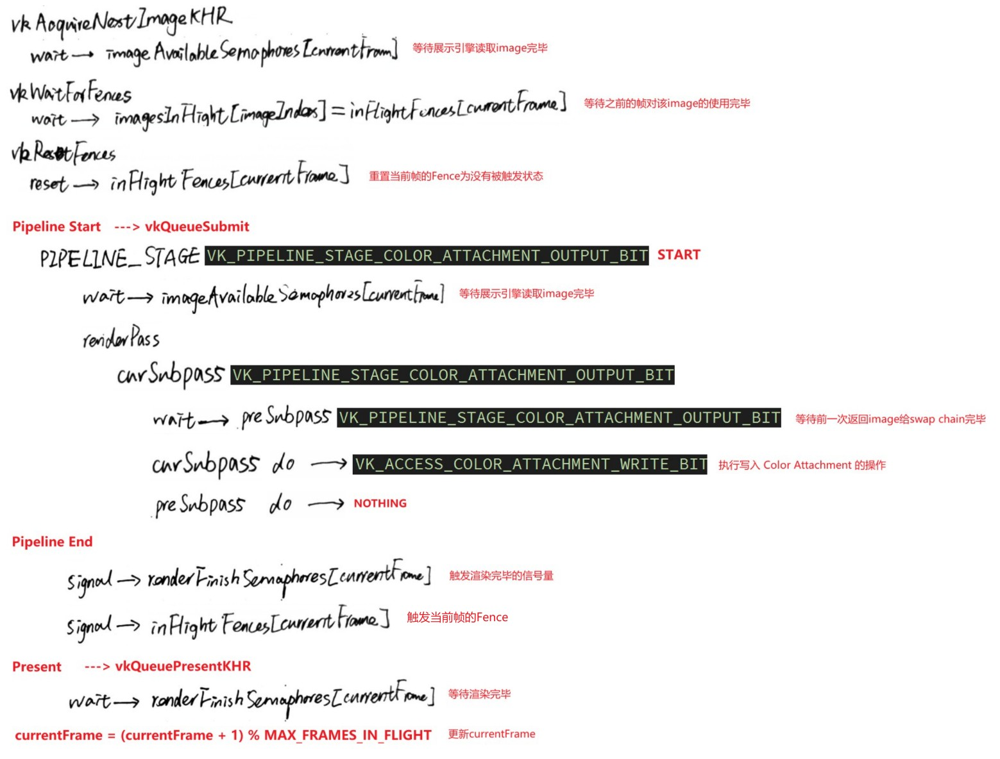

Vulkan
Table of Contents
- Vulkan Tutorial
- Introduction (8)
- Overview (11)
- Development environment (18)
- Drawing a triangle
- Setup
- Presentation
- Graphics pipeline basics
- Drawing
- Vertex buffers
- Uniform Buffers
- Texture mapping
- Depth buffering (236)
- Loading models (250)
- Generating Mipmaps (259)
- Multisampling (271)
- Summary
- Q&A
- 参考资料
- Vulkan Guide
- Vulkan Base
- Initial Setup
- Push Constants
- Dynamic Descriptor sets
- Storage buffers (shader storage buffer object)
- ERROR
- ERROR CMake Error: The source "VulkanGuide/base/CMakeLists.txt" does not match the source "VulkanGuide/CMakeLists.txt" used to generate cache. Re-run cmake with a different source directory.
- ERROR Error C3646 'm_Lock': unknown override specifier
- ERROR SDL2.dll 不存在
- ERROR Validation Error: [ VUID-VkPipelineShaderStageCreateInfo-module-parameter ] Object 0: handle = 0x19ae7186ec0, type = VK_OBJECT_TYPE_INSTANCE; | MessageID = 0xfd71dc70 | Invalid VkShaderModule Object 0xcccccccccccccccc. The Vulkan spec states: module must be a valid VkShaderModule handle
- ERROR LNK2019 unresolved external symbol "public: static struct VertexInputDescription __cdecl Vertex::get_vertex_description(void)" (?get_vertex_description@Vertex@@SA?AUVertexInputDescription@@XZ) referenced in function "private: void __cdecl VulkanEngine::init_pipelines(void)" (?init_pipelines@VulkanEngine@@AEAAXXZ)
- ERROR gl_BaseInstance undeclared identifier
- ERROR Validation Error: [ VUID-VkShaderModuleCreateInfo-pCode-01091 ]
- GPU Driven Rendering
- 参考资料
- Vulkan Base
- Vulkan vs OpenGL vs OpenGLES vs D3D
Vulkan note.
<!– more –>
Vulkan Tutorial
Introduction (8)
About (8)
Vulkan 是一个新的 API，其为现代显卡提供了更好的抽象。这套新接口允许你更好地描述你的应用程序想做的事情，因此它拥有比现有的图形 API，比如 OpenGL 和 Direct3D ，更好的性能以及更少的意外行为。Vulkan 背后的思想比较接近 Direct3D 12 和 Metal ，但是 Vulkan 拥有完全跨平台的优点，也就是说，你可以同时为 Windows, Linux 和 Android 平台开发应用程序。
Tutorial structure (9)
该教程每章的结构大致如下：
- 引入新的概念以及引入该概念的目的
- 使用所有相关的 API，将新的概念集成到你的程序中
- 将一部分功能抽象为公用的 helper 函数
Overview (11)
Origin of Vulkan (11)
和之前的图形 API 一样，Vulkan 被设计为 GPUs 的跨平台的抽象。大多数这些 API 的问题在于，它们设计的时代，主打图形硬件几乎只限于可配置的固定功能。程序员必须按照标准的格式提供顶点数据，并且在 lighting 和 shading 选项上也受 GPU 制造商所支配。
随着显卡架构的成熟，显卡开始提供越来越多的可编程功能。所有这些新功能必须被集成到已有的 API 中。这导致了不理想的抽象，并且在显卡驱动层增加了很多猜测的工作，用来将程序员的意图映射到现代的显卡架构。这就是为什么有如此多的驱动程序更新来提高游戏性能，有时甚至是显着的提升。因为这些复杂的驱动，应用程序开发者还需要处理不同供应商不一致的问题，例如，shader 所接受的语法不同。除了这些新功能之外，过去十年还见证了具有强大图形硬件的移动设备的涌入。 这些移动 GPU 根据其能量和空间要求具有不同的架构。 一个这样的例子是 tiled rendering，它可以通过为程序员提供对该功能的更多控制来提高性能。源于这些 API 时代的另一个限制是有限的多线程支持，这可能导致 CPU 端出现瓶颈。
Vulkan 针对现代图形架构从头开始设计，解决了这些问题。 它通过允许程序员使用更详细的 API 明确指定他们的意图来减少驱动程序开销，并允许多个线程并行创建和提交命令。它使用唯一一个编译器来切换到标准化字节码格式，从而减少着色器编译中的不一致。最后，它通过将图形和计算功能统一到单个 API 中来承认现代显卡的通用处理能力。
What it takes to draw a triangle (12)
下面是在 Vulkan 程序中画一个三角形的所有步骤的总览。这里引入的所有概念在后面章节会详细讲述，这里只是为了给你一个大图，让你可以将所有单独的组件关联起来。下图展示了 Vulkan 中各种对象之间的关系：
Step 1 - Instance and physical device selection
Vulkan 应用的开始，需要使用一个 VkInstance 实例来设置 Vulkan API。通过描述你的应用程序并指定你想使用的 API 扩展来创建该 VKInstance 实例。创建 VKInstance 实例后，你可以查询支持 Vulkan 的硬件并选择一个或多个 VkPhysicalDevice 来使用。你还可以查询 VRAM 尺寸和设备能力等属性来选择希望使用的设备，例如，优先使用专用显卡(独显)。
Step 2 - Logical device and queue families
选择了正确的硬件设备后，你需要创建一个 VkDevice(逻辑设备)，对其更明确地描述你将使用哪些 VkPhysicalDeviceFeatures 特性，例如，多视口渲染、64 位浮点数支持等等。你还需要指定你使用哪些 Queue families。使用 Vulkan 执行的大多数操作，如绘制命令、内存操作等，都被提交到一个 VkQueue 来异步执行。Queues 是从 Queue families 分配的，每个 queue family 在其 queues 上提供一组特定的操作。例如，对于图形、计算以及内存转移操作可能有不同的 queue families。queue families 的可用操作也可以作为选择物理设备时的一个区别因素。支持 Vulkan 的设备可以不提供任何图形功能，尽管今天支持 Vulkan 的显卡通常都支持我们感兴趣的所有 queue 操作。
Step 3 - Window surface and swap chain
除非你只对离屏渲染感兴趣，否则你需要创建一个窗口来展示渲染的图片。可以使用本地平台的 API 或类似 GLFW 和 SDL 这样的库来创建窗口。
我们需要额外的两个组件来实际渲染到一个窗口：一个 window surface 组件(VkSurfaceKHR)和一个 swap chain 组件(VkSwapchainKHR).注意 KHR 后缀表示这些对象是 Vulkan 扩展的一部分。Vulkan API 自身是完全平台无关的，因此我们需要使用标准的 WSI(Windows System Interface)扩展来和窗口管理器交互。surface 是对用于渲染的窗口的跨平台抽象，通常通过提供一个指向本地窗口句柄的引用来实例化 surface，对于 Windows 平台本地窗口的句柄为 HWND。
swap chain 是多个 render target 的一个集合。其基本目的是用于保证我们当前正在渲染到的 render target 和当前显示在屏幕上的 render target 不是同一个 render target。确保渲染完成的图片才被显示是非常重要的。每次我们想要绘制一帧时，都需要让 swap chain 为我们提供一个 image，让我们渲染到其中。当我们结束绘制一帧时，该 image 被返回给 swap chain，用于在某个时间点将其展示在屏幕上。render targets 的数量以及展示完成的图片到屏幕的条件都依赖于展示模式。常见的当前模式是双缓冲 (vsync) 和三重缓冲。 我们将在 swap chain creation 章节中研究这些。
通过使用 VK_KHR_display 和 VK_KHR_display_swapchain 扩展，有些平台允许你直接渲染到显示器，而无需和任何窗口管理器进行交互。例如，这些扩展允许您创建一个代表整个屏幕的表面，这些扩展还可以用于实现您自己的窗口管理器。
Step 4 - Image views and framebuffers
从 swap chain 获得一个 image 后，为了渲染到其中，我们需要将该 image 封装到一个 VkImageView 和 VkFramebuffer 中。一个 image view 会引用一个 image 的特定部分，一个 framebuffer 会引用多个 image views，多个 image views 被用于 color，depth 以及 stencil targets。因为 swap chain 中可以有很多不同的 images，我们将为每个 image 预先创建一个 image view 和一个 framebuffer，并在绘制时选择正确的 image。 TODO(framebuffer imageview image rendertarget 关系)
Step 5 - Render passes
Vulkan 中的 render passes 描述了渲染操作期间使用的 images 的类型，它们将被如何使用，以及应该如何对待它们的内容。在我们渲染三角形的应用中，我们告诉 Vulkan，我们将使用单个 image 作为 color target，并且在绘制操作之前我们希望其被清除为纯色。Render Passes 只描述 images 的类型，VkFramebuffer 执行实际的绑定操作，将 images 绑定到对应的 slots。
Step 6 - Graphics pipeline
通过创建一个 VkPipeline 对象来设置 Vulkan 中的 graphics pipeline。其描述了显卡的可配置状态，例如：viewport 的尺寸，depth buffer 的操作，可编程状态(对应 VkShaderModule)等等。VkShaderModule 对象是由 shader 字节码创建的。驱动还需要知道哪些 render targets 将被 pipeline 所使用，这是我们通过引用 render pass 来指定的。
Vulkan 与现有的其它 API 之间最明显的区别就是，几乎所有 graphics pipeline 的配置都需要提前设置好。这意味着如果你想切换到不同的 shader 或稍微改变你的顶点布局，那么你需要完全重新创建 graphics pipeline。这意味着你必须为渲染操作所需的所有不同组合提前创建许多 VkPipeline 对象。只有一些基本配置，如 viewport 大小和清除颜色，可以动态更改。所有状态也需要明确描述，例如没有默认的 color blend 状态。
好消息是，由于你执行的是与即时编译的等效的提前编译操作，因此驱动程序有更多优化机会，并且运行时性能更可预测，因为大的状态更改，例如切换到不同的图形管道是非常明确的。
Step 7 - Command pools and command buffers
如前所述，Vulkan 中我们想要执行的许多操作，例如绘图操作，都需要提交到一个 Queue 中。这些操作首先需要记录到 VkCommandBuffer 中，然后才能提交。这些 command buffers 是从 VkCommandPool 分配的，VkCommandPool 和特定的 queue family 相关联。要绘制一个简单的三角形，我们需要将以下操作记录到一个 command buffer 中：
- Begin the render pass
- Bind the graphics pipeline
- Draw 3 vertices
- End the render pass
因为 framebuffer 中的 image 依赖于 swap chain 将哪个特定的 image 提供给我们，所以我们需要为每个可能的 image 记录一个 command buffer，并在绘制时选择正确的 image。 另一种方法是每帧再记录一次 command buffer，但这种方式不够高效。
Step 8 - Main loop
现在绘制命令已经被包装到 command buffer 中了，主循环就很简单了。首先，我们使用 vkAcquireNextImageKHR 从 swap chain 获取一个 image。然后，我们为该 image 选择适当的 command buffer，并且使用 vkQueueSubmit 来执行该 command buffer。最后，我们将 image 返回给 swap chain，使用 vkQueuePresentKHR 来将其展示到屏幕上。
提交到队列的操作是异步执行的。 因此，我们必须使用像信号量这样的同步对象来确保正确的执行顺序。绘制 command buffer 的执行必须被设置为等待 image 被获取完成，否则可能会发生我们开始渲染到 image 时，仍在读取该 image 显示到屏幕。 vkQueuePresentKHR 调用反过来需要等待渲染完成，为此我们将使用第二个信号量，在渲染完成后发出该信号。
Summary
请注意，我们采用了作弊的方式，将顶点坐标嵌入顶点着色器，而没有使用 vertex buffer。这是因为管理 vertex buffer 需要先熟悉 command buffers。
简单来说，绘制我们的第一个三角形需要以下步骤：
- 创建一个 VkInstance
- 选择支持 Vulkan 的显卡 (VkPhysicalDevice)
- 创建一个 VkDevice 和 一个 VkQueue 用于绘制和展示
- 创建一个 window，一个 window surface，以及一个 swap chain
- 将 swap chain 中的 images 封装到 VkImageView
- 创建一个 render pass 指定将要使用的 render targets
- 为 render pass 创建多个 framebuffers TODO
- 设置 graphics pipeline
- 为每一个可能的 swap chain 中的 image 分配一个 command buffer，并将绘制命令记录到 command buffer 中。
- 从 swap chain 获取 images 来绘制帧，提交正确的绘制 command buffer 并将 images 返回给 swap chain
API concepts
Coding Conventions
- 函数名的前缀为 vk
- 枚举类型名称和结构体类型名称的前缀为 Vk
- 枚举值名称的前缀为 VK_
Vulkan API 使用结构体作为函数参数的情况非常多。例如，对象创建通常按照下面的模式
VkXXXCreateInfo createInfo{}; createInfo.sType = VK_STRUCTURE_TYPE_XXX_CREATE_INFO; createInfo.pNext = nullptr; createInfo.foo = ...; createInfo.bar = ...; VkXXX object; if (vkCreateXXX(&createInfo, nullptr, &object) != VK_SUCCESS) { std::cerr << "failed to create object" << std::endl; return false; }
- 很多结构体需要通过 sType 成员来显示指定结构体的类型。
- pNext 成员可以指向其他的结构体，也可以是 nullptr
- 创建或销毁对象的函数有一个 VkAllocationCallbacks 的参数，该参数可以为驱动内存指定自定义的分配器，该参数值也可以是 nullptr TODO
- 几乎所有的函数都会有一个 VkResult 枚举类型的返回值，返回值要么为 VK_SUCCESS，要么为一个错误码
Validation layers
如前所述，Vulkan 旨在实现高性能和驱动程序低开销。 因此，默认情况下它将包括非常有限的错误检查和调试功能。 如果你做错了什么，驱动程序通常会崩溃而不是返回错误代码，或者更糟糕的是，它似乎可以在你的显卡上运行而在其他显卡上却完全失败。
Vulkan 允许你通过使用一个被称为 validation layers 的特性来开启广泛的检查。Validation layers 是一些被插入 API 和驱动之间的代码片段，可用于执行诸如函数参数检查、跟踪内存管理问题等操作。好处是你可以在开发过程中启用它们，然后在发布应用程序时完全禁用它们，从而实现零开销。任何人都可以编写自己的 validation layers，LunarG 的 Vulkan SDK 提供一组标准 validation layers，在本教程中将采用它。你还需要注册一个回调函数来接收来自 validation layers 的调试消息。
由于 Vulkan 对每个操作都非常明确，而且 validation layers 检查范围非常广泛，因此与 OpenGL 和 Direct3D 相比，找出屏幕为什么是黑色的，实际上要容易得多！
Development environment (18)
Windows (18)
- 下载并安装 SDK Installer https://vulkan.lunarg.com/
- 运行 Bin/vkcube.exe 来验证当前设备是否支持 Vulkan
- 下载并解压 GLFW, 放到~/Documents/MySDK/GLFW/3.3.4/WIN64 目录下。 https://www.glfw.org/download.html
- 下载并解压 GLM, 放到~/Documents/MySDK/GLM/0.9.9.8 目录下。 https://github.com/g-truc/glm/releases
- 新建 Visual Studio Project，选择 Windows Desktop Wizard 项目模板，Application type 选择 Console Application，Additional Options 中勾选 Empty Project（避免 Visual Studio 添加样板代码）。
配置工程：
- 配置头文件路径 C++ -> General -> Additional Include Directories
- 配置库文件路径 Linker -> General -> Additional Library Directories
- 配置库文件名称 Linker -> Input -> Additional Dependencies
Bin 目录下还有一些其他的很有用的开发工具:
- glslangValidator.exe 和 glslc.exe 用于将 GLSL shaders 编译为字节码。
- 其中还包含 Vunlkan 的 loader 以及 validation layers
Include 目录包含了 Vulkan 的头文件
Lib 目录包含了库文件
Linux (28)
MacOS (34)
Drawing a triangle
Setup
Base code (41)
Vulkan 对象要么是通过使用 vkCreateXXX 函数直接创建，要么是通过另一个对象使用 vkAllocateXXX 函数来分配。一个对象不再使用后，你需要使用对应的函数 vkDestroyXXX 或 vkFreeXXX 来销毁它。对于不同类型的对象，这些函数的参数也各不相同，但是他们都有一个公共的参数：pAllocator。这是一个可选参数，该参数允许你为自定义的分配器指定一个回调函数。 TODO
Instance (46)
创建一个 VkInstance
为了创建一个 VkInstance，首先需要创建一个 VkApplicationInfo，将我们应用程序的一些信息填充到该结构体中。技术上来说，这些信息是可选的，但是其可能会给驱动提供一些有用信息来对我们特定的应用程序进行优化。(驱动对于某些特定的行为会使用知名的图形引擎)
对象创建函数参数的一般模式为：
- 指向创建信息结构体的指针
- 指向自定义分配器回调函数的指针
- 指向变量的指针，该变量存储了新对象的句柄
void createInstance() { VkApplicationInfo appInfo{}; appInfo.sType = VK_STRUCTURE_TYPE_APPLICATION_INFO; appInfo.pApplicationName = "Hello Triangle"; appInfo.applicationVersion = VK_MAKE_VERSION(1, 0, 0); appInfo.pEngineName = "No Engine"; appInfo.engineVersion = VK_MAKE_VERSION(1, 0, 0); appInfo.apiVersion = VK_API_VERSION_1_0; VkInstanceCreateInfo createInfo{}; createInfo.sType = VK_STRUCTURE_TYPE_INSTANCE_CREATE_INFO; createInfo.pApplicationInfo = &appInfo; uint32_t glfwExtensionCount = 0; const char** glfwExtensions; glfwExtensions = glfwGetRequiredInstanceExtensions(&glfwExtensionCount); createInfo.enabledExtensionCount = glfwExtensionCount; createInfo.ppEnabledExtensionNames = glfwExtensions; createInfo.enabledLayerCount = 0; VkResult result = vkCreateInstance(&createInfo, nullptr, &instance); if (result != VK_SUCCESS) { throw std::runtime_error("failed to create instance!"); } }
检查支持的扩展
在创建 VkInstance 之前可以使用 vkEnumerateInstanceExtensionProperties 函数来获得当前支持的所有扩展的列表。
VkResult vkEnumerateInstanceExtensionProperties( const char* pLayerName, // 可选参数，通过一个指定的validation layer来过滤一些扩展 uint32_t* pPropertyCount, // 存储所有支持的扩展的数量 VkExtensionProperties* pProperties // VkExtensionProperties类型的数组，存储所有支持的扩展的细节 ); // 下面代码获取了所有支持的扩展，并打印这些扩展的名字 uint32_t extensionCount = 0; vkEnumerateInstanceExtensionProperties(nullptr, &extensionCount, nullptr); std::vector<VkExtensionProperties> extensions(extensionCount); vkEnumerateInstanceExtensionProperties(nullptr, &extensionCount, extensions.data()); std::cout << "available extensions:\n"; for (const auto& extension : extensions) { std::cout << '\t' << extension.extensionName << '\n'; }
检查需要的 extensions 是否被支持：
bool checkRequiredExtensionsSupport(const char** requiredExts, int requiredExtCount) { // 获取当前支持的所有 extensions uint32_t supportedExtensionCount = 0; vkEnumerateInstanceExtensionProperties(nullptr, &supportedExtensionCount, nullptr); std::vector<VkExtensionProperties> supportedExtensions(supportedExtensionCount); vkEnumerateInstanceExtensionProperties(nullptr, &supportedExtensionCount, supportedExtensions.data()); for (auto& supportedExt : supportedExtensions) { std::cout << "supported Ext : " << supportedExt.extensionName << std::endl; } for (int i = 0; i < requiredExtCount; i++) { const char* neededExt = requiredExts[i]; std::cout << "needed Ext : " << neededExt << std::endl; } // 检查需要的 extensions 是否都被支持 bool isAllSupported = true; for (int i = 0; i < requiredExtCount; i++) { const char* neededExt = requiredExts[i]; bool isSupported = false; for (auto& supportedExt : supportedExtensions) { if (std::strcmp(supportedExt.extensionName, neededExt)) { isSupported = true; continue; } } if (!isSupported) { isAllSupported = false; std::cout << "unsupport extension : " << neededExt << " " << std::endl; } } return isAllSupported; }
// 下面为我的系统当前支持的extensions // supported Ext : VK_KHR_device_group_creation // supported Ext : VK_KHR_display // supported Ext : VK_KHR_external_fence_capabilities // supported Ext : VK_KHR_external_memory_capabilities // supported Ext : VK_KHR_external_semaphore_capabilities // supported Ext : VK_KHR_get_display_properties2 // supported Ext : VK_KHR_get_physical_device_properties2 // supported Ext : VK_KHR_get_surface_capabilities2 // supported Ext : VK_KHR_surface // supported Ext : VK_KHR_surface_protected_capabilities // supported Ext : VK_KHR_win32_surface // supported Ext : VK_EXT_debug_report // supported Ext : VK_EXT_debug_utils // supported Ext : VK_EXT_swapchain_colorspace // supported Ext : VK_NV_external_memory_capabilities
Cleaning up
VkInstance 对象需要在应用程序退出之前被销毁。使用 vkDestroyInstance 函数来销毁该对象。
Validation layers (50)
What are validation layers?
Vulkan API 的设计理念是将驱动程序开销降至最低。默认情况下，API 中的错误检查非常有限。甚至很简单的错误，如：枚举值不正确或者必须的参数指针为空等等，都没有被显示地处理，并且这些简单错误会简单地导致崩溃或未定义行为。但是，Vulkan 引入了一个优雅的系统用于这些错误检查，该系统就是 validation layers。Validation layers 是可选组件，其 hook 到 Vulkan 函数调用内来执行额外的操作。通常 validation layers 会执行如下操作：
- 根据规范检查参数值以检测误用
- 跟踪对象的创建和销毁以发现资源泄漏
- 通过跟踪函数调用的线程来检查线程安全
- 记录所有函数调用和函数调用对应的参数，并输出到标准输出
- 跟踪 Vulkan 调用进行性能分析和重放
下面是 validation layer 中一个函数的实现：
VkResult vkCreateInstance( const VkInstanceCreateInfo* pCreateInfo, const VkAllocationCallbacks* pAllocator, VkInstance* instance) { if (pCreateInfo == nullptr || instance == nullptr) { log("Null pointer passed to required parameter!"); return VK_ERROR_INITIALIZATION_FAILED; } return real_vkCreateInstance(pCreateInfo, pAllocator, instance); }
这些 validation layers 可以自由堆叠以包含你感兴趣的所有调试功能。你可以简单地为调试版本启用 validation layers，并为发布版本完全禁用它们，这样就可以两全其美了！
Vulkan 没有内置任何 validation layers，但 LunarG Vulkan SDK 提供了一组很好的 validation layers 来检查常见错误。它们也是完全开源的。由于意外依赖未定义行为，应用程序在不同驱动上会被破坏，使用 validation layers 是避免这种问题的最佳方法。validation layers 只有在安装到系统上后才能被使用。 例如，LunarG validation layers 仅在安装了 Vulkan SDK 的 PC 上可用。
Vulkan 中以前有两种不同类型的 validation layers：instance 类型和特定设备类型。instance 类型的 validation layers 只会检查与全局 Vulkan 对象（如 VkInstance）相关的调用，而设备特定的 validation layers 只会检查与特定 GPU 相关的调用。设备特定的 validation layers 现已弃用，这意味着 instance 类型的 validation layers 适用于所有 Vulkan 调用。为了兼容性，规范文档仍然建议在设备级别也启用 validation layers，这是某些实现所要求的。 我们将简单地为 instance 和 逻辑设备指定相同的 validation layers。
Using validation layers
和 extensions 一样，需要指定 validation layers 的名称来开启它们。所有有用的标准验证都捆绑在 SDK 中的一个层中，其名称为 VK_LAYER_KHRONOS_validation。
VkInstanceCreateInfo createInfo{}; createInfo.sType = VK_STRUCTURE_TYPE_INSTANCE_CREATE_INFO; createInfo.pApplicationInfo = &appInfo; // 指定使用的 extensions createInfo.enabledExtensionCount = glfwExtensionCount; createInfo.ppEnabledExtensionNames = glfwExtensions; // 指定使用的 layers if (enableValidationLayers) { createInfo.enabledLayerCount = static_cast<uint32_t>(validationLayers.size()); createInfo.ppEnabledLayerNames = validationLayers.data(); } else { createInfo.enabledLayerCount = 0; }
// 下面为我的系统当前支持的layers // supported layer : VK_LAYER_NV_optimus // supported layer : VK_LAYER_NV_nomad_release_public_2021_3_1 // supported layer : VK_LAYER_NV_GPU_Trace_release_public_2021_3_1 // supported layer : VK_LAYER_RENDERDOC_Capture // supported layer : VK_LAYER_VALVE_steam_overlay // supported layer : VK_LAYER_VALVE_steam_fossilize // supported layer : VK_LAYER_EOS_Overlay // supported layer : VK_LAYER_EOS_Overlay // supported layer : VK_LAYER_ROCKSTAR_GAMES_social_club // supported layer : VK_LAYER_INTEL_state_tracker // supported layer : VK_LAYER_LUNARG_api_dump // supported layer : VK_LAYER_LUNARG_device_simulation // supported layer : VK_LAYER_LUNARG_gfxreconstruct // supported layer : VK_LAYER_KHRONOS_synchronization2 // supported layer : VK_LAYER_KHRONOS_validation // supported layer : VK_LAYER_LUNARG_monitor // supported layer : VK_LAYER_LUNARG_screenshot
Message callback
默认情况下，validation layers 会将调试消息打印到标准输出，但我们也可以通过提供显式的回调函数来自己处理调试消息。这也将允许你决定要查看哪种消息，因为并非所有消息都必然是（致命的）错误。为了设置一个回调函数来处理消息，我们需要使用 VK_EXT_debug_utils。
下面函数就是用于处理调试消息的回调函数。VKAPI_ATTR 和 VKAPI_CALL 确保该函数有正确的签名，从而让 Vulkan 调用。
static VKAPI_ATTR VkBool32 VKAPI_CALL debugCallback( VkDebugUtilsMessageSeverityFlagBitsEXT messageSeverity, VkDebugUtilsMessageTypeFlagsEXT messageType, const VkDebugUtilsMessengerCallbackDataEXT* pCallbackData, void* pUserData) { std::cerr << "validation layer: " << pCallbackData->pMessage << std::endl; return VK_FALSE; }
函数的第一个参数（messageSeverity）指定消息的严重性，它可以是以下标志之一：
- VK_DEBUG_UTILS_MESSAGE_SEVERITY_VERBOSE_BIT_EXT 诊断消息
- VK_DEBUG_UTILS_MESSAGE_SEVERITY_INFO_BIT_EXT 信息性消息，如创建资源
- VK_DEBUG_UTILS_MESSAGE_SEVERITY_WARNING_BIT_EXT 关于行为的消息，不一定是错误，但很可能是应用程序中的 Bug
- VK_DEBUG_UTILS_MESSAGE_SEVERITY_ERROR_BIT_EXT 有关无效行为的消息，并且该无效行为可能导致崩溃
函数的第二个参数（messageType）可以包含如下所列的值：
- VK_DEBUG_UTILS_MESSAGE_TYPE_GENERAL_BIT_EXT 发生了一些与规范或性能无关的事件
- VK_DEBUG_UTILS_MESSAGE_TYPE_VALIDATION_BIT_EXT 发生了违反规范或可能存在错误的事情
- VK_DEBUG_UTILS_MESSAGE_TYPE_PERFORMANCE_BIT_EXT 发生了可能是非最佳使用 Vulkan 的事情
函数的第三个参数（pCallbackData）指向一个 VkDebugUtilsMessengerCallbackDataEXT 结构体，其中包含了消息的具体细节，该结构体中最主要的成员如下：
- pMessage 消息内容，为以空字符结尾的字符串
- pObjects 与消息相关的 Vulkan 对象句柄数组
- objectCount 数组中的对象数
函数的最后一个参数（pUserData）是一个指针。在设置回调函数的时候可以指定该指针，从而允许你传递自己的数据。
函数的返回值为一个 bool 值，其用于指示 Vulkan 调用某个函数触发 validation layer 的消息时，Vulkan 对该函数的调用是否应该中止。如果回调函数返回 true，则 Vulkan 对该函数的调用会中止，并返回 VK_ERROR_VALIDATION_FAILED_EXT 错误。这通常仅用于测试验证层本身，因此你应该始终返回 VK_FALSE。 TODO
在 Vulkan 中 debug callback 也是通过句柄来管理的，需要显示的创建和销毁。debug callback 属于 debug messenger 的一部分，你可以有多个 debug messenger(VkDebugUtilsMessengerEXT)。需要使用 vkCreateDebugUtilsMessengerEXT 来创建 VkDebugUtilsMessengerEXT，但是 vkCreateDebugUtilsMessengerEXT 是一个扩展函数，不会被自动加载。因此，需要自己获取该函数的地址。
VkResult CreateDebugUtilsMessengerEXT(VkInstance instance, const VkDebugUtilsMessengerCreateInfoEXT* pCreateInfo, const VkAllocationCallbacks* pAllocator, VkDebugUtilsMessengerEXT* pDebugMessenger) { // vkCreateDebugUtilsMessengerEXT 是一个扩展函数，不会被自动加载。因此，需要自己获取该函数的地址 auto func = (PFN_vkCreateDebugUtilsMessengerEXT)vkGetInstanceProcAddr(instance, "vkCreateDebugUtilsMessengerEXT"); if (func != nullptr) { // debugMessenger是指定给Vulkan instance和它的layers的，因此需要将instance作为第一个参数 return func(instance, pCreateInfo, pAllocator, pDebugMessenger); } else { return VK_ERROR_EXTENSION_NOT_PRESENT; } }
下面代码用来创建 debug messenger:
VkDebugUtilsMessengerCreateInfoEXT createInfo{}; createInfo.sType = VK_STRUCTURE_TYPE_DEBUG_UTILS_MESSENGER_CREATE_INFO_EXT; createInfo.messageSeverity = VK_DEBUG_UTILS_MESSAGE_SEVERITY_VERBOSE_BIT_EXT | VK_DEBUG_UTILS_MESSAGE_SEVERITY_WARNING_BIT_EXT | VK_DEBUG_UTILS_MESSAGE_SEVERITY_ERROR_BIT_EXT; createInfo.messageType = VK_DEBUG_UTILS_MESSAGE_TYPE_GENERAL_BIT_EXT | VK_DEBUG_UTILS_MESSAGE_TYPE_VALIDATION_BIT_EXT | VK_DEBUG_UTILS_MESSAGE_TYPE_PERFORMANCE_BIT_EXT; createInfo.pfnUserCallback = debugCallback; createInfo.pUserData = nullptr; // Optional if (CreateDebugUtilsMessengerEXT(instance, &createInfo, nullptr, &debugMessenger) != VK_SUCCESS) { throw std::runtime_error("failed to set up debug messenger!"); }
需要使用 vkDestroyDebugUtilsMessengerEXT 函数来销毁 debug messenger。和创建时一样，也需要特殊处理。
void DestroyDebugUtilsMessengerEXT(VkInstance instance, VkDebugUtilsMessengerEXT debugMessenger, const VkAllocationCallbacks* pAllocator) { auto func = (PFN_vkDestroyDebugUtilsMessengerEXT) vkGetInstanceProcAddr(instance, "vkDestroyDebugUtilsMessengerEXT"); if (func != nullptr) { func(instance, debugMessenger, pAllocator); } }
Debugging instance creation and destruction
vkCreateDebugUtilsMessengerEXT 调用需要一个可用的 instance(VkInstance)，而且必须在 instance 销毁之前调用 vkDestroyDebugUtilsMessengerEXT，因此，调用 vkCreateInstance 和 vkDestroyInstance 时，我们还无法调试任何问题。
我们可以为 VkInstanceCreateInfo 结构体的 pNext 成员提供一个指向 VkDebugUtilsMessengerCreateInfoEXT 结构体的指针，这样就可以为 vkCreateInstance 和 vkDestroyInstance 这两个函数创建一个单独的 debug messenger 了。
void createInstance() { // 开启 validation layers if (enableValidationLayers && !checkValidationLayerSupport()) { throw std::runtime_error("some validation layers unsupported!"); } // 获取需要的所有 extensions auto neededExtensions = getRequiredExtensions(); if (!checkRequiredExtensionsSupport(neededExtensions.data(), neededExtensions.size())) { throw std::runtime_error("some extension unsupported!"); } VkApplicationInfo appInfo{}; appInfo.sType = VK_STRUCTURE_TYPE_APPLICATION_INFO; appInfo.pApplicationName = "Hello Triangle"; appInfo.applicationVersion = VK_MAKE_VERSION(1, 0, 0); appInfo.pEngineName = "No Engine"; appInfo.engineVersion = VK_MAKE_VERSION(1, 0, 0); appInfo.apiVersion = VK_API_VERSION_1_0; VkInstanceCreateInfo createInfo{}; createInfo.sType = VK_STRUCTURE_TYPE_INSTANCE_CREATE_INFO; createInfo.pApplicationInfo = &appInfo; // 指定使用的 extensions createInfo.enabledExtensionCount = static_cast<uint32_t>(neededExtensions.size()); createInfo.ppEnabledExtensionNames = neededExtensions.data(); VkDebugUtilsMessengerCreateInfoEXT debugCreateInfo{}; if (enableValidationLayers) { // 指定使用的 layers createInfo.enabledLayerCount = static_cast<uint32_t>(validationLayers.size()); createInfo.ppEnabledLayerNames = validationLayers.data(); // 为 instance 的创建和销毁调用创建 debug messenger populateDebugMessengerCreateInfo(debugCreateInfo); createInfo.pNext = (VkDebugUtilsMessengerCreateInfoEXT*)&debugCreateInfo; } else { createInfo.enabledLayerCount = 0; } VkResult result = vkCreateInstance(&createInfo, nullptr, &instance); if (result != VK_SUCCESS) { std::cerr << "ERROR Code : " << result << std::endl; throw std::runtime_error("failed to create instance!"); } }
Configuration
除了 VkDebugUtilsMessengerCreateInfoEXT 结构中指定的标志之外，validation layers 的行为还有很多设置。 在 Vulkan SDK 中有一个 Config/vk_layer_settings.txt 文件，其中详细解释了如何 validation layers。
Physical devices and queue families (62)
Selecting a physical device
通过 VkInstance 对 Vulkan 库进行初始化后，我们需要从系统中查询并选择一个显卡，该显卡支持我们所需的所有特性。事实上我们可以选择任意数量的显卡并同时使用他们，但是该教程中我们只使用第一个适合我们的显卡。最后，我们会将所选的显卡存储到一个 VkPhysicalDevice 句柄。当 VkInstance 被销毁时，该对象会被隐式地销毁，因此，我们不需要在 cleanup 中做显示的销毁操作。
下面代码用来获取系统中的所有显卡：
uint32_t deviceCount = 0; vkEnumeratePhysicalDevices(instance, &deviceCount, nullptr); if (deviceCount == 0) { throw std::runtime_error("failed to find GPUs with Vulkan support!"); } std::vector<VkPhysicalDevice> devices(deviceCount); vkEnumeratePhysicalDevices(instance, &deviceCount, devices.data());
下面代码可以用来获取显卡设备的详细属性：
// 获取 名称、类型、支持的Vulkan版本等基础显卡设备属性 VkPhysicalDeviceProperties deviceProperties; vkGetPhysicalDeviceProperties(device, &deviceProperties); // 获取 贴图压缩，64位浮点数支持以及多视口渲染支持(VR会使用该特性) 等可选显卡设备特性 VkPhysicalDeviceFeatures deviceFeatures; vkGetPhysicalDeviceFeatures(device, &deviceFeatures);
假设我们的应用程序需要专用的显卡(用于支持 Geometry Shader)才能使用。则我们使用下面方法来判断 VkPhysicalDevice 是否合适：
bool isDeviceSuitable(VkPhysicalDevice device) { VkPhysicalDeviceProperties deviceProperties; VkPhysicalDeviceFeatures deviceFeatures; vkGetPhysicalDeviceProperties(device, &deviceProperties); vkGetPhysicalDeviceFeatures(device, &deviceFeatures); // VK_PHYSICAL_DEVICE_TYPE_DISCRETE_GPU 表示 显卡设备为独立显卡 // 显卡设备为独立显卡，并且支持GeometryShader return deviceProperties.deviceType == VK_PHYSICAL_DEVICE_TYPE_DISCRETE_GPU && deviceFeatures.geometryShader; }
我们可以对所有适合的显卡设备进行评分，从而选择评分最高的显卡设备：
void pickPhysicalDevice() { uint32_t deviceCount = 0; vkEnumeratePhysicalDevices(instance, &deviceCount, nullptr); if (deviceCount == 0) { throw std::runtime_error("failed to find GPUs with Vulkan support!"); } std::vector<VkPhysicalDevice> devices(deviceCount); vkEnumeratePhysicalDevices(instance, &deviceCount, devices.data()); // Use an ordered map to automatically sort candidates by increasing score std::multimap<int, VkPhysicalDevice> candidates; for (const auto& device : devices) { int score = rateDeviceSuitability(device); candidates.insert(std::make_pair(score, device)); } // Check if the best candidate is suitable at all if (candidates.rbegin()->first > 0) { physicalDevice = candidates.rbegin()->second; } else { throw std::runtime_error("failed to find a suitable GPU!"); } if (physicalDevice == VK_NULL_HANDLE) { throw std::runtime_error("failed to find a suitable GPU!"); } } int rateDeviceSuitability(VkPhysicalDevice device) { VkPhysicalDeviceProperties deviceProperties; vkGetPhysicalDeviceProperties(device, &deviceProperties); VkPhysicalDeviceFeatures deviceFeatures; vkGetPhysicalDeviceFeatures(device, &deviceFeatures); int score = 0; // Discrete GPUs have a significant performance advantage if (deviceProperties.deviceType == VK_PHYSICAL_DEVICE_TYPE_DISCRETE_GPU) { score += 1000; } // Maximum possible size of textures affects graphics quality score += deviceProperties.limits.maxImageDimension2D; // Application can't function without geometry shaders if (!deviceFeatures.geometryShader) { return 0; } return score; }
Queue families
Vulkan 中几乎每个操作都需要被提交到一个 queue 中。不同类型的 queue 来自不同的 queue families，每个 queue family 只允许一组命令集合，该集合只是所有命令集合的一个子集。我们需要检查显卡设备支持哪些 queue families，以及其中的哪个 queue family 支持的命令是我们需要使用的。
使用如下方法来获得显卡设备支持的 queue families:
struct QueueFamilyIndices { // uint32_t 可以表示的任何一个值都可能是一个可用的 queue family index std::optional<uint32_t> 来表示 queue family index std::optional<uint32_t> graphicsFamily; bool isComplete() { // 当 graphicsFamily.has_value() 为 false 时，表示不是一个可用的 queue family return graphicsFamily.has_value(); } }; QueueFamilyIndices findQueueFamilies(VkPhysicalDevice device) { QueueFamilyIndices indices; // 获取设备支持的 queue family uint32_t queueFamilyCount = 0; vkGetPhysicalDeviceQueueFamilyProperties(device, &queueFamilyCount, nullptr); std::vector<VkQueueFamilyProperties> queueFamilies(queueFamilyCount); vkGetPhysicalDeviceQueueFamilyProperties(device, &queueFamilyCount, queueFamilies.data()); int i = 0; for (const auto& queueFamily : queueFamilies) { // 判断 queueFamily 是否支持图形操作 if (queueFamily.queueFlags & VK_QUEUE_GRAPHICS_BIT) { indices.graphicsFamily = i; } if (indices.isComplete()) { break; } i++; } return indices; } // VkQueueFlagBits 枚举定义如下 // Provided by VK_VERSION_1_0 typedef enum VkQueueFlagBits { VK_QUEUE_GRAPHICS_BIT = 0x00000001, // 图形操作 VK_QUEUE_COMPUTE_BIT = 0x00000002, // 计算操作 VK_QUEUE_TRANSFER_BIT = 0x00000004, // 转移操作 VK_QUEUE_SPARSE_BINDING_BIT = 0x00000008, // 稀疏内存管理操作 // Provided by VK_VERSION_1_1 VK_QUEUE_PROTECTED_BIT = 0x00000010, // 保护位 #ifdef VK_ENABLE_BETA_EXTENSIONS // Provided by VK_KHR_video_decode_queue VK_QUEUE_VIDEO_DECODE_BIT_KHR = 0x00000020, // 支持视频解码操作 #endif #ifdef VK_ENABLE_BETA_EXTENSIONS // Provided by VK_KHR_video_encode_queue VK_QUEUE_VIDEO_ENCODE_BIT_KHR = 0x00000040, // 支持视频编码操作 #endif } VkQueueFlagBits;
Logical device and queues (70)
选择要使用的物理设备后，我们需要设置一个逻辑设备来与之交互。 逻辑设备创建过程与实例创建过程类似，我们需要描述想要使用的特性，我们还需要指定创建哪个队列(我们已经查询了哪些 queue families 是可用的)。如果你有不同的需求，你甚至可以从同一物理设备创建多个逻辑设备。使用 VkDevice 来存储逻辑设备的句柄。
创建逻辑设备需要使用多个结构体指定一系列细节，VkDeviceQueueCreateInfo 结构体用于描述我们所需的 queue family、对于单个 queue family 我们需要 queue 的数量，以及这些 queues 的优先级。当前可用的驱动只允许你为每个 queue family 创建少量的 queue，事实上你通常所需的数量不会超过一个。因为你可以在多个线程上创建所有的 command buffers，然后在主线程上使用单次低消耗的调用将他们一次性提交到一个 queue 中。 VkPhysicalDeviceFeatures 结构体用于描述我们将要使用的设备特性。
创建逻辑设备的代码如下：
void createLogicalDevice() { QueueFamilyIndices indices = findQueueFamilies(physicalDevice); // 创建多个VkDeviceQueueCreateInfo 可以指定多个queue family VkDeviceQueueCreateInfo queueCreateInfo{}; queueCreateInfo.sType = VK_STRUCTURE_TYPE_DEVICE_QUEUE_CREATE_INFO; queueCreateInfo.queueFamilyIndex = indices.graphicsFamily.value(); // 指定创建queue 的数量 queueCreateInfo.queueCount = 1; float queuePriority = 1.0f; // 指定queues的优先级，优先级会影响 command buffer 执行的调度，即使只有一个 queue 也需要指定该参数 queueCreateInfo.pQueuePriorities = &queuePriority; VkPhysicalDeviceFeatures deviceFeatures{}; VkDeviceCreateInfo createInfo{}; createInfo.sType = VK_STRUCTURE_TYPE_DEVICE_CREATE_INFO; createInfo.pQueueCreateInfos = &queueCreateInfo; createInfo.queueCreateInfoCount = 1; createInfo.pEnabledFeatures = &deviceFeatures; createInfo.enabledExtensionCount = 0; if (enableValidationLayers) { // 老版本的 Vulkan，对 instance 的 validation layers 和 device 特定的validation layers做了区分，新版本去掉了这种区分 // 为了兼容老版本的 Vulkan 实现，此处依然为 device 指定 validation layers createInfo.enabledLayerCount = static_cast<uint32_t>(validationLayers.size()); createInfo.ppEnabledLayerNames = validationLayers.data(); } else { createInfo.enabledLayerCount = 0; } if (vkCreateDevice(physicalDevice, &createInfo, nullptr, &device) != VK_SUCCESS) { throw std::runtime_error("failed to create logical device!"); } // queues 的创建是随着逻辑设备的创建自动创建的 // 通过下面函数获取 queues 的句柄，并保存到VkQueue类型的变量中 // 参数为 // 逻辑设备 // queue family的索引值 // queue的索引值 // 存储句柄的变量 vkGetDeviceQueue(device, indices.graphicsFamily.value(), 0, &graphicsQueue); }
当 logical device 被销毁时，queues 会被隐式销毁，因此我们不需要做任何清理工作。
Presentation
Window surface (74)
Vulkan 是平台无关的 API，其无法直接和窗口系统进行交互。为了在 Vulkan 和窗口系统直接建立联系，我们需要使用 WSI（Windows System Integration）扩展。本章先介绍 VK_KHR_surface 扩展，该扩展暴露了一个 VkSurfaceKHR 对象，其为 surface 的抽象类型，用于展示渲染到图片中的内容。
VK_KHR_surface 扩展属于 instance 级别的扩展，事实上，我们已经开启了该扩展，该扩展被包含在 glfwGetRequiredInstanceExtensions 函数返回的列表中。
需要在 instance 创建后，紧接着就创建 window surface。window surface 扩展会影响到物理设备的选择。Vulkan 中 window surfaces 整体是一个可选的组件，如果你需要离屏渲染，就不需要使用该扩展了。
Window surface creation (74)
虽然 VkSurfaceKHR 类型对象以及该对象的使用是平台无关的，但是该对象的创建依赖于窗口系统。例如，Windows 平台上创建 VkSurfaceKHR 对象需要 HWND 和 HMODULE 句柄，因此还存在平台相关的额外扩展，例如：Windows 平台的 VK_KHR_win32_surface 扩展，该扩展也被包含在 glfwGetRequiredInstanceExtensions 函数返回的列表中了。
下面方法用来创建 Windows 平台的 VkSurfaceKHR:
#define VK_USE_PLATFORM_WIN32_KHR #define GLFW_INCLUDE_VULKAN #include <GLFW/glfw3.h> #define GLFW_EXPOSE_NATIVE_WIN32 #include <GLFW/glfw3native.h> VkSurfaceKHR surface; void createSurface() { VkWin32SurfaceCreateInfoKHR createInfo{}; createInfo.sType = VK_STRUCTURE_TYPE_WIN32_SURFACE_CREATE_INFO_KHR; createInfo.hwnd = glfwGetWin32Window(window); createInfo.hinstance = GetModuleHandle(nullptr); if (vkCreateWin32SurfaceKHR(instance, &createInfo, nullptr, &surface) != VK_SUCCESS) { throw std::runtime_error("failed to create window surface!"); } } // GLFW 为我们提供了创建 VkSurfaceKHR 的函数，我们可以直接调用 void createSurface() { if (glfwCreateWindowSurface(instance, window, nullptr, &surface) != VK_SUCCESS) { throw std::runtime_error("failed to create window surface!"); } }
在结束时，需要手动清理 VkSurfaceKHR 对象。
vkDestroySurfaceKHR(instance, surface, nullptr);
Querying for presentation support (76)
尽管 Vulkan 实现可能支持窗口系统的集成，但也不意味着系统中的每个 device 都支持。使用如下方法来检查设备是否支持 Surface：
QueueFamilyIndices findQueueFamilies(VkPhysicalDevice device) { QueueFamilyIndices indices; // 获取设备支持的 queue family uint32_t queueFamilyCount = 0; vkGetPhysicalDeviceQueueFamilyProperties(device, &queueFamilyCount, nullptr); std::vector<VkQueueFamilyProperties> queueFamilies(queueFamilyCount); vkGetPhysicalDeviceQueueFamilyProperties(device, &queueFamilyCount, queueFamilies.data()); int i = 0; for (const auto& queueFamily : queueFamilies) { // 判断 queueFamily 是否支持图形操作 if (queueFamily.queueFlags & VK_QUEUE_GRAPHICS_BIT) { indices.graphicsFamily = i; } // 判断 queueFamily 是否支持展示渲染结果 VkBool32 presentSupport = false; vkGetPhysicalDeviceSurfaceSupportKHR(device, i, surface, &presentSupport); if (presentSupport) { indices.presentFamily = i; } if (indices.isComplete()) { break; } i++; } return indices; }
需要注意的是，支持图形操作的 Queue Family 和支持 Surface 的 Queue Family 可能就是同一个 Queue Family，但是为了统一处理两者不是同一个 QueueFamily 的情况，我们在代码中使用了 graphicsFamily、presentFamily 两个 index。你还可以在代码中增加一些逻辑，如果某个物理设备的某个 Queue Family 同时支持图形操作和 Surface，则优先选择该物理设备，这样可以提升性能。
Creating the presentation queue (77)
queues 的创建是随着逻辑设备的创建自动创建的，下面方法中添加了创建 presentQueue 相关的设置:
void createLogicalDevice() { QueueFamilyIndices indices = findQueueFamilies(physicalDevice); // [创建多个VkDeviceQueueCreateInfo 可以指定多个queue family] std::vector<VkDeviceQueueCreateInfo> queueCreateInfos; // [这里指定了 graphicsFamily 和 presentFamily，并使用set容器处理了两者相同和不同的情况] std::set<uint32_t> uniqueQueueFamilies = { indices.graphicsFamily.value(), indices.presentFamily.value() }; float queuePriority = 1.0f; for (uint32_t queueFamily : uniqueQueueFamilies) { VkDeviceQueueCreateInfo queueCreateInfo{}; queueCreateInfo.sType = VK_STRUCTURE_TYPE_DEVICE_QUEUE_CREATE_INFO; queueCreateInfo.queueFamilyIndex = indices.graphicsFamily.value(); // 指定创建queue 的数量 queueCreateInfo.queueCount = 1; // 指定queues的优先级，优先级会影响 command buffer 执行的调度，即使只有一个 queue 也需要指定该参数 queueCreateInfo.pQueuePriorities = &queuePriority; queueCreateInfos.push_back(queueCreateInfo); } VkPhysicalDeviceFeatures deviceFeatures{}; VkDeviceCreateInfo createInfo{}; createInfo.sType = VK_STRUCTURE_TYPE_DEVICE_CREATE_INFO; // [指定创建的 Queue 列表] createInfo.pQueueCreateInfos = queueCreateInfos.data(); createInfo.queueCreateInfoCount = static_cast<uint32_t>(queueCreateInfos.size()); createInfo.pEnabledFeatures = &deviceFeatures; createInfo.enabledExtensionCount = 0; if (enableValidationLayers) { // 老版本的 Vulkan，对 instance 的 validation layers 和 device 特定的validation layers做了区分，新版本去掉了这种区分 // 为了兼容老版本的 Vulkan 实现，此处依然为 device 指定 validation layers createInfo.enabledLayerCount = static_cast<uint32_t>(validationLayers.size()); createInfo.ppEnabledLayerNames = validationLayers.data(); } else { createInfo.enabledLayerCount = 0; } if (vkCreateDevice(physicalDevice, &createInfo, nullptr, &device) != VK_SUCCESS) { throw std::runtime_error("failed to create logical device!"); } // queues 的创建是随着逻辑设备的创建自动创建的 // 通过下面函数获取 queues 的句柄，并保存到VkQueue类型的变量中 // 参数为 逻辑设备, queue family的索引值, queue的索引值, 存储句柄的变量 vkGetDeviceQueue(device, indices.graphicsFamily.value(), 0, &graphicsQueue); vkGetDeviceQueue(device, indices.presentFamily.value(), 0, &presentQueue); }
当 logical device 被销毁时，queues 会被隐式销毁，因此我们不需要做任何清理工作。
Swap chain (79)
Vulkan 没有默认的 framebuffer 这个概念，因此，需要一个基础设施来构建一些 buffer，从而才能渲染到这些 buffer 中。这个基础设施就是 swap chain，在 Vulkan 中必须显示地创建该基础设施。swap chain 本质上是一个等待呈现到屏幕上的 image 队列，应用程序从中获取一个 image，然后绘制到其中，接着将其返回到队列中。队列如何工作以及何时呈现队列中的一个 image 取决于 swap chain 的设置，但一般来说，swap chain 的目的是使图像的呈现与屏幕的刷新率相同步。
Checking for swap chain support (79)
首先，并非所有显卡都支持直接将 images 呈现在屏幕上(原因可能有很多，例如：为服务器设计的显卡就不支持直接将 images 呈现在屏幕上)。其次，image 的呈现与窗口系统以及窗口关联的 surface 密切相关，swap chain 并不是 Vulkan 核心的一部分。因此，swap chain 属于设备扩展（device extension），你需要查询当前设备是否支持 VK_KHR_swapchain，然后再开启该扩展。
使用下面方式来检查需要的设备扩展是否被支持
bool checkDeviceExtensionSupport(VkPhysicalDevice device) { uint32_t extensionCount; // 获取支持的设备扩展数量 vkEnumerateDeviceExtensionProperties(device, nullptr, &extensionCount, nullptr); std::vector<VkExtensionProperties> availableExtensions(extensionCount); // 获取支持的设备扩展详情 vkEnumerateDeviceExtensionProperties(device, nullptr, &extensionCount, availableExtensions.data()); for (auto& supportedExt : availableExtensions) { std::cout << "supported Device Ext : " << supportedExt.extensionName << std::endl; } for (int i = 0; i < extensionCount; i++) { const char* neededExt = deviceExtensions[i]; std::cout << "needed Device Ext : " << neededExt << std::endl; } // 判断需要的设备扩展 是否被支持 std::set<std::string> requiredExtensions(deviceExtensions.begin(), deviceExtensions.end()); for (const auto& extension : availableExtensions) { requiredExtensions.erase(extension.extensionName); } return requiredExtensions.empty(); }
使用下面方法来开启设备扩展：
void createLogicalDevice() { QueueFamilyIndices indices = findQueueFamilies(physicalDevice); // 创建多个VkDeviceQueueCreateInfo 可以指定多个queue family std::vector<VkDeviceQueueCreateInfo> queueCreateInfos; // 这里指定了 graphicsFamily 和 presentFamily，并使用set容器处理了两者相同和不同的情况 std::set<uint32_t> uniqueQueueFamilies = { indices.graphicsFamily.value(), indices.presentFamily.value() }; float queuePriority = 1.0f; for (uint32_t queueFamily : uniqueQueueFamilies) { VkDeviceQueueCreateInfo queueCreateInfo{}; queueCreateInfo.sType = VK_STRUCTURE_TYPE_DEVICE_QUEUE_CREATE_INFO; queueCreateInfo.queueFamilyIndex = indices.graphicsFamily.value(); // 指定创建queue 的数量 queueCreateInfo.queueCount = 1; // 指定queues的优先级，优先级会影响 command buffer 执行的调度，即使只有一个 queue 也需要指定该参数 queueCreateInfo.pQueuePriorities = &queuePriority; queueCreateInfos.push_back(queueCreateInfo); } VkPhysicalDeviceFeatures deviceFeatures{}; VkDeviceCreateInfo createInfo{}; createInfo.sType = VK_STRUCTURE_TYPE_DEVICE_CREATE_INFO; createInfo.pQueueCreateInfos = queueCreateInfos.data(); createInfo.queueCreateInfoCount = static_cast<uint32_t>(queueCreateInfos.size()); createInfo.pEnabledFeatures = &deviceFeatures; // [开启指定的设备扩展] createInfo.enabledExtensionCount = static_cast<uint32_t>(deviceExtensions.size()); createInfo.ppEnabledExtensionNames = deviceExtensions.data(); if (enableValidationLayers) { // 老版本的 Vulkan，对 instance 的 validation layers 和 device 特定的validation layers做了区分，新版本去掉了这种区分 // 为了兼容老版本的 Vulkan 实现，此处依然为 device 指定 validation layers createInfo.enabledLayerCount = static_cast<uint32_t>(validationLayers.size()); createInfo.ppEnabledLayerNames = validationLayers.data(); } else { createInfo.enabledLayerCount = 0; } if (vkCreateDevice(physicalDevice, &createInfo, nullptr, &device) != VK_SUCCESS) { throw std::runtime_error("failed to create logical device!"); } // queues 的创建是随着逻辑设备的创建自动创建的 // 通过下面函数获取 queues 的句柄，并保存到VkQueue类型的变量中 // 参数为 逻辑设备, queue family的索引值, queue的索引值, 存储句柄的变量 vkGetDeviceQueue(device, indices.graphicsFamily.value(), 0, &graphicsQueue); vkGetDeviceQueue(device, indices.presentFamily.value(), 0, &presentQueue); }
Querying details of swap chain support (81)
只检测 swap chain 扩展是否可用还不够，还需要检查 swap chain 和 window surface 是否兼容。基本上我们还需要再检查 3 类属性：
- 基本的 surface 能力 (如：swap chain 中的 images 数量，image 的最大最小宽度、高度)
- surface 的格式 (如：像素格式, 颜色空间)
- 可用的展示模式
使用下面方法来查询 swap chain 的详细属性：
SwapChainSupportDetails querySwapChainSupport(VkPhysicalDevice device) { SwapChainSupportDetails details; // 查询基础的能力 vkGetPhysicalDeviceSurfaceCapabilitiesKHR(device, surface, &details.capabilities); // 查询支持的 surface formats uint32_t formatCount; vkGetPhysicalDeviceSurfaceFormatsKHR(device, surface, &formatCount, nullptr); if (formatCount != 0) { details.formats.resize(formatCount); vkGetPhysicalDeviceSurfaceFormatsKHR(device, surface, &formatCount, details.formats.data()); } // 查询支持的展示模式 uint32_t presentModeCount; vkGetPhysicalDeviceSurfacePresentModesKHR(device, surface, &presentModeCount, nullptr); if (presentModeCount != 0) { details.presentModes.resize(presentModeCount); vkGetPhysicalDeviceSurfacePresentModesKHR(device, surface, &presentModeCount, details.presentModes.data()); } return details; }
使用下面方法来检查显卡设备支持的 swap chain 是否满足需要：
bool isDeviceSuitable(VkPhysicalDevice device) { // 检查显卡设备是否支持我们需要的 queue families QueueFamilyIndices indices = findQueueFamilies(device); // 检查显卡设备是否支持我们所需的设备扩展 bool extensionsSupported = checkDeviceExtensionSupport(device); // 检查显卡设备支持的 swapChain 是否足够 bool swapChainAdequate = false; if (extensionsSupported) { SwapChainSupportDetails swapChainSupport = querySwapChainSupport(device); swapChainAdequate = !swapChainSupport.formats.empty() && !swapChainSupport.presentModes.empty(); } return indices.isComplete() && extensionsSupported && swapChainAdequate; }
Choosing the right settings for the swap chain (83)
创建一个 swap chain 涉及的设置比创建 instance 和 device 还多。一共有三种类型的设置：
- Surface format（color depth）
- 展示模式 (将 image 交换到屏幕的条件)
- 交换的范围 (swap chain 中 images 的分辨率)
使用下面方法来选择 surface format：
VkSurfaceFormatKHR chooseSwapSurfaceFormat(const std::vector<VkSurfaceFormatKHR>& availableFormats) { for (const auto& availableFormat : availableFormats) { // 选择格式为 VK_FORMAT_B8G8R8A8_SRGB 颜色空间为 VK_COLOR_SPACE_SRGB_NONLINEAR_KHR 的 surface format if (availableFormat.format == VK_FORMAT_B8G8R8A8_SRGB && availableFormat.colorSpace == VK_COLOR_SPACE_SRGB_NONLINEAR_KHR) { return availableFormat; } } return availableFormats[0]; }
Vulkan 中有 4 种展示模式：
- VK_PRESENT_MODE_IMMEDIATE_KHR：你的应用程序提交的 image 会立即传输到屏幕，这可能会导致撕裂。
- VK_PRESENT_MODE_FIFO_KHR：swap chain 是一个队列，当显示器刷新时，显示器从队列前面取一张 image，而程序在队列后面插入渲染好的 image。如果队列已满，则程序必须等待。这与现代游戏中的 vertical sync 最为相似。显示刷新的那一刻被称为 vertical blank
- VK_PRESENT_MODE_FIFO_RELAXED_KHR：该模式和前一模式的唯一差别是，如果应用程序延迟并且队列在上一个 vertical blank 处为空，则当 image 最终到达时立即传输，而不是等待下一个 vertical blank。这可能会导致可见的撕裂。
- VK_PRESENT_MODE_MAILBOX_KHR：这是第二种模式的另一种变体。当队列已满时，不会阻塞应用程序，而是将已经排队的图像简单地替换为较新的图像。此模式可用于尽快地渲染帧，同时还避免了撕裂，从而比标准垂直同步有更少的延迟问题。这就是俗称的“三重缓冲”，但是，单独存在三个缓冲并不一定意味着帧率已解锁。
我个人认为，如果不考虑能耗的话，VK_PRESENT_MODE_MAILBOX_KHR 是一个很好的折中方案。它允许我们避免撕裂，又维持了适当的低延迟。在手机设备上，能耗更加重要，我建议还是使用 VK_PRESENT_MODE_FIFO_KHR。
- 游戏锁 60fps 和 60hz 屏幕开垂直同步有什么区别？ vsync https://www.zhihu.com/question/310558703
- Vertical blanking interval https://en.wikipedia.org/wiki/Vertical_blanking_interval
VkPresentModeKHR chooseSwapPresentMode(const std::vector<VkPresentModeKHR>& availablePresentModes) { for (const auto& availablePresentMode : availablePresentModes) { // 选择 三重缓冲 展示模式 if (availablePresentMode == VK_PRESENT_MODE_MAILBOX_KHR) { return availablePresentMode; } } return VK_PRESENT_MODE_FIFO_KHR; }
swap extent 是 swap chain 中 images 的分辨率，它几乎总是完全等于我们要绘制的窗口的分辨率（以像素为单位）。 可能的分辨率范围在 VkSurfaceCapabilitiesKHR 结构中定义。 Vulkan 通过在 currentExtent 成员中设置宽度和高度来告诉我们匹配窗口的分辨率大小。 然而，一些窗口管理器将 currentExtent 中的宽度和高度设置为一个特殊值（uint32_t 的最大值）以此来表示允许 images 的分辨率可以和窗口分辨率不同。在这种情况下，我们将在 minImageExtent 和 maxImageExtent 范围内选择最匹配窗口的分辨率。 但是我们必须以正确的单位指定分辨率。
度量尺寸时，GLFW 使用两种单位：像素和屏幕坐标。例如，之前我们创建窗口时，指定的分辨率 {WIDTH,HEIGHT} 使用的是屏幕坐标。但是，Vulkan 使用的是像素，因此 swap chain extent 必须以像素为单位。当你使用高 DPI 显示器时(如苹果的 Retina 显示屏)，屏幕坐标和像素并不对应。由于像素密度高，窗口的像素分辨率比屏幕坐标要高。因此，如果 Vulkan 没有为我们修正 swap extent，我们将无法使用原来的{WIDTH,HEIGHT}。我们可以使用 glfwGetFramebufferSize 来获取窗口的像素分辨率。
VkExtent2D chooseSwapExtent(const VkSurfaceCapabilitiesKHR& capabilities) { if (capabilities.currentExtent.width != UINT32_MAX) { return capabilities.currentExtent; } else { int width, height; // 查询当前窗口的像素分辨率大小 glfwGetFramebufferSize(window, &width, &height); VkExtent2D actualExtent = { static_cast<uint32_t>(width), static_cast<uint32_t>(height) }; actualExtent.width = std::clamp(actualExtent.width, capabilities.minImageExtent.width, capabilities.maxImageExtent.width); actualExtent.height = std::clamp(actualExtent.height, capabilities.minImageExtent.height, capabilities.maxImageExtent.height); return actualExtent; } }
Creating the swap chain (86)
使用下面方法来创建 swap chain:
void createSwapChain() { SwapChainSupportDetails swapChainSupport = querySwapChainSupport(physicalDevice); VkSurfaceFormatKHR surfaceFormat = chooseSwapSurfaceFormat(swapChainSupport.formats); VkPresentModeKHR presentMode = chooseSwapPresentMode(swapChainSupport.presentModes); VkExtent2D extent = chooseSwapExtent(swapChainSupport.capabilities); // 指定 swap chain 中 images 的数量 uint32_t imageCount = swapChainSupport.capabilities.minImageCount; // 检查指定的数量是否超过了支持的最大数量 if (swapChainSupport.capabilities.maxImageCount > 0 && imageCount > swapChainSupport.capabilities.maxImageCount) { imageCount = swapChainSupport.capabilities.maxImageCount; } VkSwapchainCreateInfoKHR createInfo{}; createInfo.sType = VK_STRUCTURE_TYPE_SWAPCHAIN_CREATE_INFO_KHR; createInfo.surface = surface; createInfo.minImageCount = imageCount; createInfo.imageFormat = surfaceFormat.format; createInfo.imageColorSpace = surfaceFormat.colorSpace; createInfo.imageExtent = extent; // 指定每个image由多少layer组成 （当开发立体感3D应用时，需要指定多个layer） createInfo.imageArrayLayers = 1; // 指定我们对 swap chain 中的 image 执行的操作类型 createInfo.imageUsage = VK_IMAGE_USAGE_COLOR_ATTACHMENT_BIT; QueueFamilyIndices indices = findQueueFamilies(physicalDevice); uint32_t queueFamilyIndices[] = { indices.graphicsFamily.value(), indices.presentFamily.value() }; // 当 swap chain 中的 images 属于多个queue families时，指定如何共享 images if (indices.graphicsFamily != indices.presentFamily) { createInfo.imageSharingMode = VK_SHARING_MODE_CONCURRENT; // 指定哪些 queue families 之间会共享 images的所有权 createInfo.queueFamilyIndexCount = 2; createInfo.pQueueFamilyIndices = queueFamilyIndices; } else { createInfo.imageSharingMode = VK_SHARING_MODE_EXCLUSIVE; createInfo.queueFamilyIndexCount = 0; // Optional createInfo.pQueueFamilyIndices = nullptr; // Optional } // 不使用任何变换 可以对 swap chain 中的 image 执行一些旋转、镜像等变换 createInfo.preTransform = swapChainSupport.capabilities.currentTransform; // 指定是否使用 alpha channel 和其他窗口进行混合. 你应该总是简单忽略 alpha channel createInfo.compositeAlpha = VK_COMPOSITE_ALPHA_OPAQUE_BIT_KHR; // 指定展示模式 createInfo.presentMode = presentMode; // VK_TRUE 表示我们不关心被遮挡的像素颜色 (例如，当有其他窗口在这些像素之前). 开启clipping可以提高性能 createInfo.clipped = VK_TRUE; // 重新创建 swap chain 时，传入之前的 swap chain createInfo.oldSwapchain = VK_NULL_HANDLE; if (vkCreateSwapchainKHR(device, &createInfo, nullptr, &swapChain) != VK_SUCCESS) { throw std::runtime_error("failed to create swap chain!"); } // 获取 swap chain 中的所有 images vkGetSwapchainImagesKHR(device, swapChain, &imageCount, nullptr); swapChainImages.resize(imageCount); vkGetSwapchainImagesKHR(device, swapChain, &imageCount, swapChainImages.data()); // 记录选择的 surface format 以及 image的像素尺寸 swapChainImageFormat = surfaceFormat.format; swapChainExtent = extent; }
当 swap chain 中的 images 属于多个 queue families 时，有两种方式来处理 images 的共享：
- VK_SHARING_MODE_EXCLUSIVE： 同一时间一个 image 只能由一个 queue family 拥有，并且在另一个 queue family 中使用该 image 之前必须明确转移所有权。此选项可以提供最佳性能。
- VK_SHARING_MODE_CONCURRENT： image 可以跨多个 queue family 使用，无需明确的所有权转移。
Concurrent 模式需要你事先指定哪些 queue families 会共享 images 的所有权。
Image views (92)
使用如下方法创建 image view:
void createImageViews() { swapChainImageViews.resize(swapChainImages.size()); for (size_t i = 0; i < swapChainImages.size(); i++) { VkImageViewCreateInfo createInfo{}; createInfo.sType = VK_STRUCTURE_TYPE_IMAGE_VIEW_CREATE_INFO; createInfo.image = swapChainImages[i]; createInfo.viewType = VK_IMAGE_VIEW_TYPE_2D; createInfo.format = swapChainImageFormat; // components 选项可以让你调整颜色通道，如：将所有通道映射为 r 通道；或者将 r 通道映射为 g 通道，将 g 通道映射为 r 通道 createInfo.components.r = VK_COMPONENT_SWIZZLE_IDENTITY; createInfo.components.g = VK_COMPONENT_SWIZZLE_IDENTITY; createInfo.components.b = VK_COMPONENT_SWIZZLE_IDENTITY; createInfo.components.a = VK_COMPONENT_SWIZZLE_IDENTITY; // subresourceRange 用于描述 image 的用途，以及应该访问 image 的哪个部分 createInfo.subresourceRange.aspectMask = VK_IMAGE_ASPECT_COLOR_BIT; createInfo.subresourceRange.baseMipLevel = 0; // 指定 mipmapping 级别只有一级 (即 不使用mipmap) createInfo.subresourceRange.levelCount = 1; createInfo.subresourceRange.baseArrayLayer = 0; // 指定 layer 只有一个 createInfo.subresourceRange.layerCount = 1; if (vkCreateImageView(device, &createInfo, nullptr, &swapChainImageViews[i]) != VK_SUCCESS) { throw std::runtime_error("failed to create image views!"); } } }
结束时需要手动销毁 imageViews:
void cleanup() { // 销毁 image view for (auto imageView : swapChainImageViews) { vkDestroyImageView(device, imageView, nullptr); } // 销毁 swap chain vkDestroySwapchainKHR(device, swapChain, nullptr); // 销毁逻辑设备 vkDestroyDevice(device, nullptr); if (enableValidationLayers) { // 销毁 debug messenger DestroyDebugUtilsMessengerEXT(instance, debugMessenger, nullptr); } // 销毁 surface vkDestroySurfaceKHR(instance, surface, nullptr); // 销毁 instance vkDestroyInstance(instance, nullptr); glfwDestroyWindow(window); glfwTerminate(); }
Graphics pipeline basics
Introduction (95)
在接下来的几章中，我们将设置一个 graphics pipeline，来绘制我们的第一个三角形。graphics pipeline 是一个操作序列，其以网格的顶点和纹理为输入经过一系列操作序列后得到 render targets 中的像素。下面展示了一个简化的概述：
输入装配器(Input assembler)从你指定的 buffers 中收集原始顶点数据，还可能使用 index buffer 来重复利用某些的元素从而避免重复顶点数据本身。
顶点着色器(vertex shader)会被每个顶点执行，通常会应用一些变换来将顶点位置从模型空间转化到屏幕空间。其会将每个顶点的数据传递给管线的后面部分。
细分着色器(tessellation shader)允许你按照某种特定的规则来细分几何元素(三角形，多边形)从而提高 mesh 的质量。这通常用于近距离的砖墙和楼梯等表面，使它们看起来不那么平坦。
几何着色器(geometry shader)会被每个图元(如：三角形、线、点)执行，你可以抛弃这些图元，或者输出更多的图元。其和 tessellation shader 类似，但是更加灵活。但是，其消耗性能比较大。
光栅化阶段(rasterization stage)会将图元离散化为片段(fragments)。片段是填充在 framebuffer 中的像素元素，顶点着色器输出的属性会被插值作为片段的属性。任何落在屏幕外面的片段都会被丢弃。通常由于深度测试(depth testing)图元后面的其他片段也会被丢弃。
片段着色器(fragment shader)会被每个幸存的片段执行，这个阶段会确定将片段写入哪个或哪些 framebuffers，以及写入哪个颜色和深度值。其可以使用从顶点着色器插值得到的数据来计算写入 framebuffers 的颜色和深度。
颜色混合(color blending stage)会对不同的片段(这些片段映射到 framebuffer 中相同的像素)进行混合。可以简单地覆盖其他的片段、或者叠加所有片段、又或者按照不透明度进行片段混合。
上图中绿色框表示的阶段被称为 fixed-function 阶段。这些阶段只允许你使用参数对它们的操作进行微调，但是它们工作的方式是预先定义好的。橘色框表示的阶段为 programmable 阶段(可编程阶段)。你可以上传你自己的代码给显卡来精确应用你想要的操作。这些 shader 程序会在很多个 GPU 核上同时运行来并行处理很多对象（如：顶点、片段等）
老式的 APIs(OpenGL Direct3D)可以修改 pipeline 的任何设置，如 使用 glBlendFunc 修改颜色混合的设置。在 Vulkan 中，graphics pipeline 几乎是完全不可改变的，如果你需要修改 shaders，绑定不同的 framebuffers 或修改混合函数，你需要重新创建一个 pipeline。缺点是你需要创建很多个 pipelines 来，优点是由于事先知道在管线中的所有操作，驱动可以做更好的优化。
一些可编程阶段是可选的。例如，如果你只是绘制一个简单的几何体，tessellation 阶段和 geometry 阶段就可以被关闭。又比如，你只是生成 shadow map，则 fragment shader 阶段可以被关闭。
Shader modules (99)
和之前的 APIs 不同，在 Vulkan 中，shader 代码必须是指定的字节码格式，而不能是人类能读懂的 GLSL 或 HLSL。这种字节码格式被称为 SPIR-V（Standard Portable Intermediate Representation），其被用于 Vulkan 和 OpenCL。使用字节码的优点是极大减低了 GPU 供应商编译器的复杂度，该编译器将 shader 代码转换为本地代码。使用人类可读的语法时，一些 GPU 供应商对标准的解释相当灵活。 如果你碰巧使用来自这些供应商之一的 GPU 编写着色器，那么你将面临其他供应商的驱动程序因语法错误而拒绝你的代码的风险，或者更糟的是，你的着色器由于编译器错误而以不同方式运行。使用像 SPIR-V 这样简单的字节码格式，有望避免这种情况。但是，这并不意味着我们需要手工编写这种字节码。 Khronos 发布了他们自己的独立于供应商的编译器，其可以将 GLSL 编译为 SPIR-V。该编译器旨在验证您的着色器代码是否完全符合标准，同时会生成一个 SPIR-V 二进制文件，你可以将该文件随程序一起提供。你还可以将此编译器作为库包含到程序种，从而在运行时生成 SPIR-V。虽然我们可以通过 glslangValidator.exe 直接使用这个编译器，但我们将使用谷歌的 glslc.exe 来代替。 glslc 的优点是它使用了和 GCC 和 Clang 等知名编译器相同的参数格式，并包含一些额外的功能，如 includes。它们都已包含在 Vulkan SDK 中了，因此无需额外下载任何内容。
Vertex shader (100)
顶点着色器处理每一个进来的顶点，其以顶点的属性（如：世界位置，颜色，法线以及贴图坐标）为输入，裁剪坐标系中的最终位置以及需要传递给 fragment shader 的属性为输出（如：颜色和贴图坐标）。这些值随后会被光栅化器在片段上进行插值，从而得到平滑的过渡。
裁剪坐标是从顶点着色器得来的一个 4 维向量，通过执行透视除法，将裁剪坐标转换为标准设备坐标。标准设备坐标是齐次坐标，其将 framebuffer 映射为一个[-1, 1]到[1,-1]的坐标系统，如下所示：
Tips: 和 OpenGL 不同，Vulkan 的 normalized device coordinates 的 Y 轴指向下方，并且 Z 坐标的范围变为了[0, 1]。如下图所示：
创建一个 shader.vert 文件：
#version 450 layout(location = 0) out vec3 fragColor; vec2 positions[3] = vec2[]( vec2(0.0, -0.5), vec2(0.5, 0.5), vec2(-0.5, 0.5) ); vec3 colors[3] = vec3[]( vec3(1.0, 0.0, 0.0), vec3(0.0, 1.0, 0.0), vec3(0.0, 0.0, 1.0) ); void main() { gl_Position = vec4(positions[gl_VertexIndex], 0.0, 1.0); fragColor = colors[gl_VertexIndex]; }
Fragment shader (102)
创建一个 shader.frag 文件：
#version 450 layout(location = 0) in vec3 fragColor; layout(location = 0) out vec4 outColor; void main() { outColor = vec4(fragColor, 1.0); }
Compiling the shaders (104)
创建一个 compile.bat 的编译脚本：
"D:\Documents\MySDK\VulkanSDK\1.2.189.2\Bin32\glslc.exe" shader.vert -o shader_vert.spv "D:\Documents\MySDK\VulkanSDK\1.2.189.2\Bin32\glslc.exe" shader.frag -o shader_frag.spv pause
Loading a shader (105)
使用如下方法加载 shader 代码：
static std::vector<char> readFile(const std::string& filename) { // std::ios::ate 从文件最后开始读，方便获取文件大小 // std::ios::binary 以二进制新式读取文件，避免文本转换 std::ifstream file(filename, std::ios::ate | std::ios::binary); if (!file.is_open()) { throw std::runtime_error("failed to open file!"); } // 获取文件大小 size_t fileSize = (size_t) file.tellg(); std::vector<char> buffer(fileSize); // 回到文件起始位置，再开始读取文件 file.seekg(0); file.read(buffer.data(), fileSize); file.close(); return buffer; }
Creating shader modules (107)
Shader modules 只是对 shader bytecode 进行了简单封装。对 SPIR-V 字节码进行编译和链接(得到用于 GPU 执行的机器码)是在创建 graphics pipeline 时执行的。创建完 graphics pipeline 后就可以销毁 Shader modules 了。
使用如下方法创建 shader modules:
VkShaderModule createShaderModule(const std::vector<char>& code) { VkShaderModuleCreateInfo createInfo{}; createInfo.sType = VK_STRUCTURE_TYPE_SHADER_MODULE_CREATE_INFO; createInfo.codeSize = code.size(); // 需要使用 reinterpret_cast 将 char* 转化为 uint32_t* createInfo.pCode = reinterpret_cast<const uint32_t*>(code.data()); VkShaderModule shaderModule; if (vkCreateShaderModule(device, &createInfo, nullptr, &shaderModule) != VK_SUCCESS) { throw std::runtime_error("failed to create shader module!"); } return shaderModule; }
Shader stage creation (108)
使用如下方法创建 shader stage:
void createGraphicsPipeline() { auto vertShaderCode = readFile("shader_vert.spv"); std::cout << "vert shader code size : " << vertShaderCode.size() << " Byte" << std::endl; auto fragShaderCode = readFile("shader_frag.spv"); std::cout << "frag shader code size : " << fragShaderCode.size() << " Byte" << std::endl; VkShaderModule vertShaderModule = createShaderModule(vertShaderCode); VkShaderModule fragShaderModule = createShaderModule(fragShaderCode); // 创建 vertex shader stage VkPipelineShaderStageCreateInfo vertShaderStageInfo{}; vertShaderStageInfo.sType = VK_STRUCTURE_TYPE_PIPELINE_SHADER_STAGE_CREATE_INFO; vertShaderStageInfo.stage = VK_SHADER_STAGE_VERTEX_BIT; vertShaderStageInfo.module = vertShaderModule; vertShaderStageInfo.pName = "main"; // 创建 fragment shader stage VkPipelineShaderStageCreateInfo fragShaderStageInfo{}; fragShaderStageInfo.sType = VK_STRUCTURE_TYPE_PIPELINE_SHADER_STAGE_CREATE_INFO; fragShaderStageInfo.stage = VK_SHADER_STAGE_FRAGMENT_BIT; fragShaderStageInfo.module = fragShaderModule; fragShaderStageInfo.pName = "main"; VkPipelineShaderStageCreateInfo shaderStages[] = {vertShaderStageInfo, fragShaderStageInfo}; vkDestroyShaderModule(device, fragShaderModule, nullptr); vkDestroyShaderModule(device, vertShaderModule, nullptr); }
Fixed functions (110)
Vertex input (110)
使用 VkPipelineVertexInputStateCreateInfo 来描述顶点数据的格式，粗略来说该数据结构描述了两类信息：
- Bindings : 数据之间的间隔，以及数据是基于顶点还是基于实例
- Attribute descriptions : 传递给 vertex shader 的属性的类型，从哪个 binding 加载这些属性，以及需要做多少偏移。
// 配置 vertex input VkPipelineVertexInputStateCreateInfo vertexInputInfo{}; vertexInputInfo.sType = VK_STRUCTURE_TYPE_PIPELINE_VERTEX_INPUT_STATE_CREATE_INFO; vertexInputInfo.vertexBindingDescriptionCount = 0; vertexInputInfo.pVertexBindingDescriptions = nullptr; // Optional vertexInputInfo.vertexAttributeDescriptionCount = 0; vertexInputInfo.pVertexAttributeDescriptions = nullptr; // Optional
Input assembly (111)
使用 VkPipelineInputAssemblyStateCreateInfo 来描述输入装配，主要描述两件事情：1. 利用顶点绘制什么类型的几何元素（topology），2.是否开启图元重启。
topology 可以有如下选项：
- VK_PRIMITIVE_TOPOLOGY_POINT_LIST：绘制的几何元素为点，每个顶点即为一个点
- VK_PRIMITIVE_TOPOLOGY_LINE_LIST： 绘制的几何元素为线，每 2 个顶点构成一条线，不重用顶点
- VK_PRIMITIVE_TOPOLOGY_LINE_STRIP：绘制的几何元素为线，每条线的末端顶点会被当作下一条线的起始顶点
- VK_PRIMITIVE_TOPOLOGY_TRIANGLE_LIST： 绘制的几何元素为三角形，每 3 个顶点组成的三角形，不重复顶点
- VK_PRIMITIVE_TOPOLOGY_TRIANGLE_STRIP：绘制的几何元素为三角形，每个三角形的第二个和第三个顶点作为下一个三角形的前两个顶点
通常情况下，从顶点缓冲区中加载顶点，顶点的索引即为顶点在缓冲区中的顺序，也可以使用 element buffer 来指定顶点的索引。这样就可以复用顶点。
是否开启图元重启只对 _STRIP 类型的 topology 有影响，当开启图元重启时，可以使用特殊的索引(index) 0xFFFF 或 0xFFFFFFFF 来打断 lines strip 或 triangles strip。
// 配置 input assembly VkPipelineInputAssemblyStateCreateInfo inputAssembly{}; inputAssembly.sType = VK_STRUCTURE_TYPE_PIPELINE_INPUT_ASSEMBLY_STATE_CREATE_INFO; inputAssembly.topology = VK_PRIMITIVE_TOPOLOGY_TRIANGLE_LIST; inputAssembly.primitiveRestartEnable = VK_FALSE;
Viewports and scissors (111)
viewport 定义了从 image 到 framebuffer 的变换。scissor 矩形定义了哪个区域的像素会被存储，scissor 矩形外的像素都会被光栅化器丢弃。下图是对 viewport 和 scissor rectangle 的可视化描述：

// 配置 viewports 和 scissors VkViewport viewport{}; viewport.x = 0.0f; viewport.y = 0.0f; viewport.width = (float) swapChainExtent.width; viewport.height = (float) swapChainExtent.height; viewport.minDepth = 0.0f; viewport.maxDepth = 1.0f; VkRect2D scissor{}; scissor.offset = {0, 0}; scissor.extent = swapChainExtent; VkPipelineViewportStateCreateInfo viewportState{}; viewportState.sType = VK_STRUCTURE_TYPE_PIPELINE_VIEWPORT_STATE_CREATE_INFO; viewportState.viewportCount = 1; viewportState.pViewports = &viewport; viewportState.scissorCount = 1; viewportState.pScissors = &scissor;
Rasterizer (113)
使用 VkPipelineRasterizationStateCreateInfo 来配置光栅化阶段。
depthClampEnable 成员为 VK_TRUE 时，若片段在近平面和远平面之间区域的外面，则对将片段截取到近平面或远平面；否则丢弃这些片段。渲染 shadowmaps 开启该功能会很有用，使用时需要开启一个 GPU 特性。
rasterizerDiscardEnable 成员为 VK_TRUE 时，几何元素不可以通过光栅化阶段。这样就不会有任何输出到达 framebuffer。
polygonMode 成员决定了为几何元素如何生成片段，其可以有三个选项：
- VK_POLYGON_MODE_FILL: 使用片段填充多边形区域
- VK_POLYGON_MODE_LINE: 只填充多边形的边
- VK_POLYGON_MODE_POINT: 只绘制多边形的顶点
除了 VK_POLYGON_MODE_FILL 选项外，使用另外两个选项都需要开启一个 GPU 特性。
lineWidth 成员根据片段的数量来描述线的粗细。支持的最大宽度取决于硬件，任何比 1.0f 粗的线都需要开启 wideLine GPU 特性。
cullMode 决定了剔除表面的类型。你可以关闭剔除，也可以剔除正面，或者剔除背面，或者剔除正面和背面。
frontFace 指定了如何确定是正面还是背面。
光栅化器可以调整深度值，其可以在深度值基础上加一个常数值或者依据片段的斜率偏移深度值。
// 配置 Rasterizer VkPipelineRasterizationStateCreateInfo rasterizer{}; rasterizer.sType = VK_STRUCTURE_TYPE_PIPELINE_RASTERIZATION_STATE_CREATE_INFO; rasterizer.depthClampEnable = VK_FALSE; rasterizer.rasterizerDiscardEnable = VK_FALSE; rasterizer.polygonMode = VK_POLYGON_MODE_FILL; rasterizer.lineWidth = 1.0f; rasterizer.cullMode = VK_CULL_MODE_BACK_BIT; rasterizer.frontFace = VK_FRONT_FACE_CLOCKWISE; rasterizer.depthBiasEnable = VK_FALSE; rasterizer.depthBiasConstantFactor = 0.0f; // Optional rasterizer.depthBiasClamp = 0.0f; // Optional rasterizer.depthBiasSlopeFactor = 0.0f; // Optional
Multisampling (114)
使用 VkPipelineMultisampleStateCreateInfo 来配置多重采样相关的设置。多重采样是一种抗锯齿的方式，其不需要执行片段着色器多次，因此，其比渲染一个高分辨的结果再缩放到低分辨率要高效很多。
// 配置 multisampling VkPipelineMultisampleStateCreateInfo multisampling{}; multisampling.sType = VK_STRUCTURE_TYPE_PIPELINE_MULTISAMPLE_STATE_CREATE_INFO; multisampling.sampleShadingEnable = VK_FALSE; multisampling.rasterizationSamples = VK_SAMPLE_COUNT_1_BIT; multisampling.minSampleShading = 1.0f; // Optional multisampling.pSampleMask = nullptr; // Optional multisampling.alphaToCoverageEnable = VK_FALSE; // Optional multisampling.alphaToOneEnable = VK_FALSE; // Optional
Depth and stencil testing (114)
如果你使用了 depth 或 stencil buffer，你还需要配置深度和模板测试。使用 VkPipelineDepthStencilStateCreateInfo 来配置深度和模板测试。
Color blending (115)
片段着色器返回一个颜色后，需要将该颜色和 framebuffer 中的颜色组合起来。可以有两种方式来执行组合：
- 混合旧的颜色和新的颜色得到最终颜色
- 使用一个位操作来组合旧颜色和新颜色
使用 VkPipelineColorBlendAttachmentState 来配置 framebuffer 相关的设置，使用 VkPipelineColorBlendStateCreateInfo 来配置 color blending 全局相关的设置：
// 配置 Color Blending // VkPipelineColorBlendAttachmentState 和附加的framebuffer 相关的 color blending 设置 VkPipelineColorBlendAttachmentState colorBlendAttachment{}; colorBlendAttachment.colorWriteMask = VK_COLOR_COMPONENT_R_BIT | VK_COLOR_COMPONENT_G_BIT | VK_COLOR_COMPONENT_B_BIT | VK_COLOR_COMPONENT_A_BIT; colorBlendAttachment.blendEnable = VK_FALSE; colorBlendAttachment.srcColorBlendFactor = VK_BLEND_FACTOR_ONE; // Optional colorBlendAttachment.dstColorBlendFactor = VK_BLEND_FACTOR_ZERO; // Optional colorBlendAttachment.colorBlendOp = VK_BLEND_OP_ADD; // Optional colorBlendAttachment.srcAlphaBlendFactor = VK_BLEND_FACTOR_ONE; // Optional colorBlendAttachment.dstAlphaBlendFactor = VK_BLEND_FACTOR_ZERO; // Optional colorBlendAttachment.alphaBlendOp = VK_BLEND_OP_ADD; // Optional // VkPipelineColorBlendStateCreateInfo 全局的 color blending 设置 VkPipelineColorBlendStateCreateInfo colorBlending{}; colorBlending.sType = VK_STRUCTURE_TYPE_PIPELINE_COLOR_BLEND_STATE_CREATE_INFO; colorBlending.logicOpEnable = VK_FALSE; colorBlending.logicOp = VK_LOGIC_OP_COPY; // Optional colorBlending.attachmentCount = 1; colorBlending.pAttachments = &colorBlendAttachment; colorBlending.blendConstants[0] = 0.0f; // Optional colorBlending.blendConstants[1] = 0.0f; // Optional colorBlending.blendConstants[2] = 0.0f; // Optional colorBlending.blendConstants[3] = 0.0f; // Optional
Tips：
如果你想按照第二种方式(位操作的方式)来组合新旧颜色，那么需要设置 logicOpEnable 为 VK_TRUE，此时会自动禁止第一种方式，如同你将每个 VkPipelineColorBlendAttachmentState.blendEnable 设置为 VK_FALSE。
colorWriteMask 对两种方式都生效。
Dynamic state (117)
只有有限数量的状态可以在不重新创建 pipeline 的情况下被修改，如 viewport 的尺寸，线的宽度以及混合常数(blend constants)。通过使用 VkPipelineDynamicStateCreateInfo 来修改相关设置：
// 配置 可以动态修改的设置 VkDynamicState dynamicStates[] = { VK_DYNAMIC_STATE_VIEWPORT, VK_DYNAMIC_STATE_LINE_WIDTH }; VkPipelineDynamicStateCreateInfo dynamicState{}; dynamicState.sType = VK_STRUCTURE_TYPE_PIPELINE_DYNAMIC_STATE_CREATE_INFO; dynamicState.dynamicStateCount = 2; dynamicState.pDynamicStates = dynamicStates;
Pipeline layout (117)
你可以在 shaders 中使用 uniform 值，它们是全局的变量，可以在绘制期间修改这些 uniform 值，从而改变这些 shaders 的行为，而不需要重新创建这些 shaders。通常会使用这些 uniform 值来传递变换矩阵给 vertex shader 等等。
在创建 pipeline 时通过创建 VkPipelineLayout 对象来指定这些 uniform 值。
// 创建 Pipeline Layout VkPipelineLayoutCreateInfo pipelineLayoutInfo{}; pipelineLayoutInfo.sType = VK_STRUCTURE_TYPE_PIPELINE_LAYOUT_CREATE_INFO; pipelineLayoutInfo.setLayoutCount = 0; // Optional pipelineLayoutInfo.pSetLayouts = nullptr; // Optional pipelineLayoutInfo.pushConstantRangeCount = 0; // Optional pipelineLayoutInfo.pPushConstantRanges = nullptr; // Optional if (vkCreatePipelineLayout(device, &pipelineLayoutInfo, nullptr, &pipelineLayout) != VK_SUCCESS) { throw std::runtime_error("failed to create pipeline layout!"); }
结束时需要手动销毁 pipeline layout:
vkDestroyPipelineLayout(device, pipelineLayout, nullptr);
Render passes (119)
创建 pipeline 时，我们还需要告诉 Vulkan，我们在渲染时使用的 framebuffer attachments，需要使用多少个 color buffers 和 depth buffers，每个 buffer 使用多少个样本，buffer 中的内容被如何处理。所有这些信息都被封装在 render pass 对象中。
Attachment description (119)
在本章的教程中，我们只使用一个 color buffer attachments。使用 VkAttachmentDescription 来设置 attachments 相关设置：
VkAttachmentDescription.format 设置 attachments buffer 的格式，需要和 swap chain 中 images 的格式一致
VkAttachmentDescription.samples 设置 buffer 的样本数量，开启多重采样时，设置样本数量
VkAttachmentDescription.loadOp 设置渲染前后对 attachments 中的数据做何处理。
VkAttachmentDescription.storeOp
VkAttachmentDescription.stencilLoadOp
VkAttachmentDescription.stencilStoreOp
loadOp 和 storeOp 作用于 color buffer 和 depth buffer
stencilLoadOp 和 stencilStoreOp 作用于 stencil buffer
loadOp 有下列选项：
- VK_ATTACHMENT_LOAD_OP_LOAD：保留 attachment 中的现有内容
- VK_ATTACHMENT_LOAD_OP_CLEAR：在开始时将 attachment 中的内容清除为常量
- VK_ATTACHMENT_LOAD_OP_DONT_CARE：attachment 中的现有内容未定义，我们不在乎他们
storeOp 有下列选项：
- VK_ATTACHMENT_STORE_OP_STORE：渲染后的内容会保存在内存中，以后可以读取
- VK_ATTACHMENT_STORE_OP_DONT_CARE：渲染操作后，帧缓冲区中的内容是未定义的
在 Vulkan 中 Textures 和 framebuffers 都是使用 VkImage 对象来表示的，可以依据你对 image 的操作来修改内存中像素的布局。最常用的布局有以下几种：
- VK_IMAGE_LAYOUT_COLOR_ATTACHMENT_OPTIMAL：用作 color attachment 的图像
- VK_IMAGE_LAYOUT_PRESENT_SRC_KHR：要在 swap chain 中呈现的图像
- VK_IMAGE_LAYOUT_TRANSFER_DST_OPTIMAL：用作内存 copy 操作的目标图像
VkAttachmentDescription.initialLayout 指定 render pass 开始时，image 的 layout
VkAttachmentDescription.finalLayout 指定 render pass 结束时，image 的 layout 自动转换为 finalLayout
将 VkAttachmentDescription.initialLayout 指定为 VK_IMAGE_LAYOUT_UNDEFINED 表示我们不关心 image 之前的布局是什么。
Subpasses and attachment references (121)
一个 render pass 可以由多个 subpasses 组成。Subpasses 是渲染操作子序列，这些操作依赖于之前 passes 中 framebuffers 的内容，例如：一个后期效果序列，每一个后期效果都作用到前一个之上。如果将这些渲染操作组合在一个 render pass 中，Vulkan 可以对操作进行重排，并且能够节省内存带宽，从而提高性能。每一个 subpass 都会引用一个或多个 attachments，使用 VkAttachmentReference 来表示 attachment 的引用。
VkAttachmentReference.attachment 指定引用的 attachment 的索引
VkAttachmentReference.layout 指定 subpass 在引用该 attachment 期间所使用的布局
使用 VkSubpassDescription 来设置 subpass，其有如下成员：
- pipelineBindPoint 指定 subpass 为 graphics subpass。未来 Vulkan 可能也会支持 compute subpass。
- colorAttachmentCount 指定引用的 color attachment 的数量
- pColorAttachments 指定引用的 color attachment
- pInputAttachments 从 shader 读取的 Attachments
- pResolveAttachments: 对 color attachments 进行多重采样时使用的 Attachments
- pDepthStencilAttachment 存储 depth 和 stencil 数据的 Attachment
- pPreserveAttachments 在当前 subpass 没有使用，但是需要保留其中数据的 Attachments
Render pass (122)
使用如下方法创建 render pass:
void createRenderPass() { VkAttachmentDescription colorAttachment{}; colorAttachment.format = swapChainImageFormat; colorAttachment.samples = VK_SAMPLE_COUNT_1_BIT; colorAttachment.loadOp = VK_ATTACHMENT_LOAD_OP_CLEAR; colorAttachment.storeOp = VK_ATTACHMENT_STORE_OP_STORE; colorAttachment.stencilLoadOp = VK_ATTACHMENT_LOAD_OP_DONT_CARE; colorAttachment.stencilStoreOp = VK_ATTACHMENT_STORE_OP_DONT_CARE; colorAttachment.initialLayout = VK_IMAGE_LAYOUT_UNDEFINED; colorAttachment.finalLayout = VK_IMAGE_LAYOUT_PRESENT_SRC_KHR; VkAttachmentReference colorAttachmentRef{}; colorAttachmentRef.attachment = 0; colorAttachmentRef.layout = VK_IMAGE_LAYOUT_COLOR_ATTACHMENT_OPTIMAL; VkSubpassDescription subpass{}; subpass.pipelineBindPoint = VK_PIPELINE_BIND_POINT_GRAPHICS; subpass.colorAttachmentCount = 1; subpass.pColorAttachments = &colorAttachmentRef; // 让 render pass 等待 VK_PIPELINE_STAGE_COLOR_ATTACHMENT_OUTPUT_BIT VkSubpassDependency dependency{}; dependency.srcSubpass = VK_SUBPASS_EXTERNAL; dependency.dstSubpass = 0; dependency.srcStageMask = VK_PIPELINE_STAGE_COLOR_ATTACHMENT_OUTPUT_BIT; dependency.srcAccessMask = 0; dependency.dstStageMask = VK_PIPELINE_STAGE_COLOR_ATTACHMENT_OUTPUT_BIT; dependency.dstAccessMask = VK_ACCESS_COLOR_ATTACHMENT_WRITE_BIT; // 创建 Render Pass VkRenderPassCreateInfo renderPassInfo{}; renderPassInfo.sType = VK_STRUCTURE_TYPE_RENDER_PASS_CREATE_INFO; renderPassInfo.attachmentCount = 1; renderPassInfo.pAttachments = &colorAttachment; renderPassInfo.subpassCount = 1; renderPassInfo.pSubpasses = &subpass; renderPassInfo.dependencyCount = 1; renderPassInfo.pDependencies = &dependency; if (vkCreateRenderPass(device, &renderPassInfo, nullptr, &renderPass) != VK_SUCCESS) { throw std::runtime_error("failed to create render pass!"); } }
Conclusion: Create Graphics Pipeline
使用如下方法来创建 Graphics pipeline:
void createGraphicsPipeline() { auto vertShaderCode = readFile("shader_vert.spv"); std::cout << "vert shader code size : " << vertShaderCode.size() << " Byte" << std::endl; auto fragShaderCode = readFile("shader_frag.spv"); std::cout << "frag shader code size : " << fragShaderCode.size() << " Byte" << std::endl; VkShaderModule vertShaderModule = createShaderModule(vertShaderCode); VkShaderModule fragShaderModule = createShaderModule(fragShaderCode); // 创建 vertex shader stage VkPipelineShaderStageCreateInfo vertShaderStageInfo{}; vertShaderStageInfo.sType = VK_STRUCTURE_TYPE_PIPELINE_SHADER_STAGE_CREATE_INFO; vertShaderStageInfo.stage = VK_SHADER_STAGE_VERTEX_BIT; vertShaderStageInfo.module = vertShaderModule; vertShaderStageInfo.pName = "main"; // 创建 fragment shader stage VkPipelineShaderStageCreateInfo fragShaderStageInfo{}; fragShaderStageInfo.sType = VK_STRUCTURE_TYPE_PIPELINE_SHADER_STAGE_CREATE_INFO; fragShaderStageInfo.stage = VK_SHADER_STAGE_FRAGMENT_BIT; fragShaderStageInfo.module = fragShaderModule; fragShaderStageInfo.pName = "main"; VkPipelineShaderStageCreateInfo shaderStages[] = {vertShaderStageInfo, fragShaderStageInfo}; // 配置 vertex input VkPipelineVertexInputStateCreateInfo vertexInputInfo{}; vertexInputInfo.sType = VK_STRUCTURE_TYPE_PIPELINE_VERTEX_INPUT_STATE_CREATE_INFO; vertexInputInfo.vertexBindingDescriptionCount = 0; vertexInputInfo.pVertexBindingDescriptions = nullptr; // Optional vertexInputInfo.vertexAttributeDescriptionCount = 0; vertexInputInfo.pVertexAttributeDescriptions = nullptr; // Optional // 配置 input assembly VkPipelineInputAssemblyStateCreateInfo inputAssembly{}; inputAssembly.sType = VK_STRUCTURE_TYPE_PIPELINE_INPUT_ASSEMBLY_STATE_CREATE_INFO; inputAssembly.topology = VK_PRIMITIVE_TOPOLOGY_TRIANGLE_LIST; inputAssembly.primitiveRestartEnable = VK_FALSE; // 配置 viewports 和 scissors VkViewport viewport{}; viewport.x = 0.0f; viewport.y = 0.0f; viewport.width = (float) swapChainExtent.width; viewport.height = (float) swapChainExtent.height; viewport.minDepth = 0.0f; viewport.maxDepth = 1.0f; VkRect2D scissor{}; scissor.offset = {0, 0}; scissor.extent = swapChainExtent; VkPipelineViewportStateCreateInfo viewportState{}; viewportState.sType = VK_STRUCTURE_TYPE_PIPELINE_VIEWPORT_STATE_CREATE_INFO; viewportState.viewportCount = 1; viewportState.pViewports = &viewport; viewportState.scissorCount = 1; viewportState.pScissors = &scissor; // 配置 Rasterizer VkPipelineRasterizationStateCreateInfo rasterizer{}; rasterizer.sType = VK_STRUCTURE_TYPE_PIPELINE_RASTERIZATION_STATE_CREATE_INFO; rasterizer.depthClampEnable = VK_FALSE; rasterizer.rasterizerDiscardEnable = VK_FALSE; rasterizer.polygonMode = VK_POLYGON_MODE_FILL; rasterizer.lineWidth = 1.0f; rasterizer.cullMode = VK_CULL_MODE_BACK_BIT; rasterizer.frontFace = VK_FRONT_FACE_CLOCKWISE; rasterizer.depthBiasEnable = VK_FALSE; rasterizer.depthBiasConstantFactor = 0.0f; // Optional rasterizer.depthBiasClamp = 0.0f; // Optional rasterizer.depthBiasSlopeFactor = 0.0f; // Optional // 配置 multisampling VkPipelineMultisampleStateCreateInfo multisampling{}; multisampling.sType = VK_STRUCTURE_TYPE_PIPELINE_MULTISAMPLE_STATE_CREATE_INFO; multisampling.sampleShadingEnable = VK_FALSE; multisampling.rasterizationSamples = VK_SAMPLE_COUNT_1_BIT; multisampling.minSampleShading = 1.0f; // Optional multisampling.pSampleMask = nullptr; // Optional multisampling.alphaToCoverageEnable = VK_FALSE; // Optional multisampling.alphaToOneEnable = VK_FALSE; // Optional // 配置 Depth and stencil testing VkPipelineDepthStencilStateCreateInfo depthStencil{}; // 配置 Color Blending // VkPipelineColorBlendAttachmentState 和附加的framebuffer 相关的 color blending 设置 VkPipelineColorBlendAttachmentState colorBlendAttachment{}; colorBlendAttachment.colorWriteMask = VK_COLOR_COMPONENT_R_BIT | VK_COLOR_COMPONENT_G_BIT | VK_COLOR_COMPONENT_B_BIT | VK_COLOR_COMPONENT_A_BIT; colorBlendAttachment.blendEnable = VK_FALSE; colorBlendAttachment.srcColorBlendFactor = VK_BLEND_FACTOR_ONE; // Optional colorBlendAttachment.dstColorBlendFactor = VK_BLEND_FACTOR_ZERO; // Optional colorBlendAttachment.colorBlendOp = VK_BLEND_OP_ADD; // Optional colorBlendAttachment.srcAlphaBlendFactor = VK_BLEND_FACTOR_ONE; // Optional colorBlendAttachment.dstAlphaBlendFactor = VK_BLEND_FACTOR_ZERO; // Optional colorBlendAttachment.alphaBlendOp = VK_BLEND_OP_ADD; // Optional // VkPipelineColorBlendStateCreateInfo 全局的 color blending 设置 VkPipelineColorBlendStateCreateInfo colorBlending{}; colorBlending.sType = VK_STRUCTURE_TYPE_PIPELINE_COLOR_BLEND_STATE_CREATE_INFO; colorBlending.logicOpEnable = VK_FALSE; colorBlending.logicOp = VK_LOGIC_OP_COPY; // Optional colorBlending.attachmentCount = 1; colorBlending.pAttachments = &colorBlendAttachment; colorBlending.blendConstants[0] = 0.0f; // Optional colorBlending.blendConstants[1] = 0.0f; // Optional colorBlending.blendConstants[2] = 0.0f; // Optional colorBlending.blendConstants[3] = 0.0f; // Optional // 配置 可以动态修改的设置 VkDynamicState dynamicStates[] = { VK_DYNAMIC_STATE_VIEWPORT, VK_DYNAMIC_STATE_LINE_WIDTH }; VkPipelineDynamicStateCreateInfo dynamicState{}; dynamicState.sType = VK_STRUCTURE_TYPE_PIPELINE_DYNAMIC_STATE_CREATE_INFO; dynamicState.dynamicStateCount = 2; dynamicState.pDynamicStates = dynamicStates; // 创建 Pipeline Layout VkPipelineLayoutCreateInfo pipelineLayoutInfo{}; pipelineLayoutInfo.sType = VK_STRUCTURE_TYPE_PIPELINE_LAYOUT_CREATE_INFO; pipelineLayoutInfo.setLayoutCount = 0; // Optional pipelineLayoutInfo.pSetLayouts = nullptr; // Optional pipelineLayoutInfo.pushConstantRangeCount = 0; // Optional pipelineLayoutInfo.pPushConstantRanges = nullptr; // Optional if (vkCreatePipelineLayout(device, &pipelineLayoutInfo, nullptr, &pipelineLayout) != VK_SUCCESS) { throw std::runtime_error("failed to create pipeline layout!"); } // 创建 graphics pipeline VkGraphicsPipelineCreateInfo pipelineInfo{}; pipelineInfo.sType = VK_STRUCTURE_TYPE_GRAPHICS_PIPELINE_CREATE_INFO; pipelineInfo.stageCount = 2; pipelineInfo.pStages = shaderStages; pipelineInfo.pVertexInputState = &vertexInputInfo; pipelineInfo.pInputAssemblyState = &inputAssembly; pipelineInfo.pViewportState = &viewportState; pipelineInfo.pRasterizationState = &rasterizer; pipelineInfo.pMultisampleState = &multisampling; pipelineInfo.pDepthStencilState = nullptr; // Optional pipelineInfo.pColorBlendState = &colorBlending; pipelineInfo.pDynamicState = nullptr; // Optional pipelineInfo.layout = pipelineLayout; pipelineInfo.renderPass = renderPass; // 指定 subpass 的索引号 pipelineInfo.subpass = 0; // 指定新创建的graphics pipeline 源自哪个已存在的 pipeline pipelineInfo.basePipelineHandle = VK_NULL_HANDLE; // Optional pipelineInfo.basePipelineIndex = -1; // Optional // 创建 Graphics Pipeline if (vkCreateGraphicsPipelines(device, VK_NULL_HANDLE, 1, &pipelineInfo, nullptr, &graphicsPipeline) != VK_SUCCESS) { throw std::runtime_error("failed to create graphics pipeline!"); } vkDestroyShaderModule(device, fragShaderModule, nullptr); vkDestroyShaderModule(device, vertShaderModule, nullptr); }
Drawing
Framebuffers (127)
一个 framebuffer 对象会引用所有 attachments 对应的 VkImageView 对象(在本章的教程中我们只是用了一个 color attachment)。但是，我们为 attachment 所使用的 image 取决于 swap chain 为我们返回哪个 image。这意味着我们需要为 swap chain 中的每个 image 创建一个 framebuffer，并且在绘制时使用的 framebuffer 要和从 swap chain 获得的 image 相对应。
使用下面方法来创建 framebuffers：
void createFramebuffers() { swapChainFramebuffers.resize(swapChainImageViews.size()); for (size_t i = 0; i < swapChainImageViews.size(); i++) { VkImageView attachments[] = { swapChainImageViews[i] }; VkFramebufferCreateInfo framebufferInfo{}; framebufferInfo.sType = VK_STRUCTURE_TYPE_FRAMEBUFFER_CREATE_INFO; framebufferInfo.renderPass = renderPass; framebufferInfo.attachmentCount = 1; framebufferInfo.pAttachments = attachments; framebufferInfo.width = swapChainExtent.width; framebufferInfo.height = swapChainExtent.height; framebufferInfo.layers = 1; if (vkCreateFramebuffer(device, &framebufferInfo, nullptr, &swapChainFramebuffers[i]) != VK_SUCCESS) { throw std::runtime_error("failed to create framebuffer!"); } } }
结束时需要手动销毁 framebuffers：
void cleanup() { for (auto framebuffer : swapChainFramebuffers) { vkDestroyFramebuffer(device, framebuffer, nullptr); } // ...... }
Command buffers (130)
Command pools (130)
创建 command buffers 之前需要先创建 command pool。command pools 管理用于存储 buffers 的内存，command buffers 就是从 command pools 中分配的。使用下面方法来创建 command pool：
void createCommandPool() { QueueFamilyIndices queueFamilyIndices = findQueueFamilies(physicalDevice); VkCommandPoolCreateInfo poolInfo{}; poolInfo.sType = VK_STRUCTURE_TYPE_COMMAND_POOL_CREATE_INFO; poolInfo.queueFamilyIndex = queueFamilyIndices.graphicsFamily.value(); poolInfo.flags = 0; // Optional if (vkCreateCommandPool(device, &poolInfo, nullptr, &commandPool) != VK_SUCCESS) { throw std::runtime_error("failed to create command pool!"); } }
将 command buffers 提交到 device queues 后，来执行它们。每个 command pool 只能分配对应于一种 queue 的 command buffers。在本章的教程中，我们需要为绘制来记录命令，因此创建 command pool 时，我们选择 graphics queue family。
VkCommandPoolCreateInfo.flags 有两个可选项：
- VK_COMMAND_POOL_CREATE_TRANSIENT_BIT：表示使用最新的命令重新记录 command buffers （该选项可能会改变内存分配行为）
- VK_COMMAND_POOL_CREATE_RESET_COMMAND_BUFFER_BIT：表示允许单独重新记录 command buffers，如果没有这个标志，所有 command buffers 都必须一起重置
在本章的教程中我们在开始的时候记录 command buffers，之后在 main 循环中多次执行这些 command buffers，因此我们不需要使用这两种标记。
结束时需要手动销毁 command pool :
void cleanup() { vkDestroyCommandPool(device, commandPool, nullptr); // ... }
Command buffer allocation (132)
绘制命令中有一个命令涉及到绑定正确的 VkFramebuffer, 因此我们需要为每个 swap chain 中的 image 创建一个 command buffer。使用下面方法来创建 command buffers:
void createCommandBuffers() { commandBuffers.resize(swapChainFramebuffers.size()); VkCommandBufferAllocateInfo allocInfo{}; allocInfo.sType = VK_STRUCTURE_TYPE_COMMAND_BUFFER_ALLOCATE_INFO; allocInfo.commandPool = commandPool; allocInfo.level = VK_COMMAND_BUFFER_LEVEL_PRIMARY; allocInfo.commandBufferCount = (uint32_t)commandBuffers.size(); // 创建 CommandBuffers if (vkAllocateCommandBuffers(device, &allocInfo, commandBuffers.data()) != VK_SUCCESS) { throw std::runtime_error("failed to allocate command buffers!"); } // ...... }
VkCommandBufferAllocateInfo.level 参数可以有如下两个选项：
- VK_COMMAND_BUFFER_LEVEL_PRIMARY：可以提交到 queue 来执行，但不能从其他 command buffers 调用。
- VK_COMMAND_BUFFER_LEVEL_SECONDARY：不能直接提交到 queue，但可以从主 command buffers 调用。
Starting command buffer recording (133)
使用下面方法来起始 command buffer 的记录:
for (size_t i = 0; i < commandBuffers.size(); i++) { VkCommandBufferBeginInfo beginInfo{}; beginInfo.sType = VK_STRUCTURE_TYPE_COMMAND_BUFFER_BEGIN_INFO; beginInfo.flags = 0; // Optional beginInfo.pInheritanceInfo = nullptr; // Optional if (vkBeginCommandBuffer(commandBuffers[i], &beginInfo) != VK_SUCCESS) { throw std::runtime_error("failed to begin recording command buffer!"); } }
VkCommandBufferBeginInfo.flags 参数可以有如下几个选项：
- VK_COMMAND_BUFFER_USAGE_ONE_TIME_SUBMIT_BIT： command buffer 执行一次后会立即重新记录。
- VK_COMMAND_BUFFER_USAGE_RENDER_PASS_CONTINUE_BIT： 这是一个 secondary command buffer，将完全在单个渲染通道中。
- VK_COMMAND_BUFFER_USAGE_SIMULTANEOUS_USE_BIT： 命令缓冲区已经处于等待执行状态时，也可以被再次重新提交。
- ERROR : validation layer: VkCommandBuffer 0x209cf379870[] is already in use and is not marked for simultaneous use. The Vulkan spec states: If any element of the pCommandBuffers member of any element of pSubmits was not recorded with the VK_COMMAND_BUFFER_USAGE_SIMULTANEOUS_USE_BIT, it must not be in the pending state.
VkCommandBufferBeginInfo beginInfo{}; beginInfo.sType = VK_STRUCTURE_TYPE_COMMAND_BUFFER_BEGIN_INFO; // flags = VK_COMMAND_BUFFER_USAGE_SIMULTANEOUS_USE_BIT; 可以修复该问题 beginInfo.flags = VK_COMMAND_BUFFER_USAGE_SIMULTANEOUS_USE_BIT; // beginInfo.flags = 0; // Optional beginInfo.pInheritanceInfo = nullptr; // Optional
Starting a render pass (134)
开始进行绘制时，先要开始一个 render pass，使用下面方法开始一个 render pass:
// 开始 render pass VkRenderPassBeginInfo renderPassInfo{}; renderPassInfo.sType = VK_STRUCTURE_TYPE_RENDER_PASS_BEGIN_INFO; renderPassInfo.renderPass = renderPass; renderPassInfo.framebuffer = swapChainFramebuffers[i]; // 指定renderArea。renderArea指定了着色器执行load和store的区域，区域外的像素为未定义值。该区域值需要和attachments的尺寸相匹配，从而保证最佳性能 renderPassInfo.renderArea.offset = {0, 0}; renderPassInfo.renderArea.extent = swapChainExtent; // 为 VK_ATTACHMENT_LOAD_OP_CLEAR 指定清除值 VkClearValue clearColor = { {{0.0f, 0.0f, 0.0f, 1.0f}} }; renderPassInfo.clearValueCount = 1; renderPassInfo.pClearValues = &clearColor; vkCmdBeginRenderPass(commandBuffers[i], &renderPassInfo, VK_SUBPASS_CONTENTS_INLINE);
vkCmdBeginRenderPass 的第三个参数控制 render pass 命令会在哪儿执行，其可以有如下两个选项：
- VK_SUBPASS_CONTENTS_INLINE： render pass 的命令将被嵌入到 primary command buffer 中，没有 secondary command buffers 被执行。
- VK_SUBPASS_CONTENTS_SECONDARY_COMMAND_BUFFERS： render pass 的命令将在 secondary command buffers 上执行。
Basic drawing commands (135)
随后，我们将 commandBuffers 绑定到 graphics pipeline，然后执行绘制命令:
// 绑定 command buffer 和 pipeline vkCmdBindPipeline(commandBuffers[i], VK_PIPELINE_BIND_POINT_GRAPHICS, graphicsPipeline); // 调用绘制命令 vkCmdDraw(commandBuffers[i], 3, 1, 0, 0);
vkCmdBindPipeline 的第二个参数用于指定 pipeline 是 graphics pipeline 还是 compute pipeline。
vkCmdDraw 的四个参数意义如下：
- vertexCount： 即使我们没有顶点缓冲区，从技术上讲，我们仍然有 3 个顶点要绘制。
- instanceCount： 用于 instanced 渲染，不进行实例化渲染时，设置为 1。
- firstVertex： 用作顶点缓冲区的偏移量，定义 gl_VertexIndex 的最小值。
- firstInstance： 用作 instanced 渲染的偏移量，定义 gl_InstanceIndex 的最小值。
Finishing up (135)
// 结束 render pass vkCmdEndRenderPass(commandBuffers[i]); // 结束 command buffer 记录 if (vkEndCommandBuffer(commandBuffers[i]) != VK_SUCCESS) { throw std::runtime_error("failed to record command buffer!"); }
Rendering and presentation (137)
接下来我们需要在主循环中做如下三件事：
- 从 swap chain 获取一个 image
- 将上一步得到的 image 作为 framebuffer 的 attachment, 然后执行 command buffer
- 将 image 返回给 swap chain, 并展示渲染的结果
上面每个中都有很多操作，这些操作都是同步执行的，但是上面步骤之间有依赖关系，每一个步骤都依赖前一个步骤结束。有两种方式可用于同步 swap chain 事件：fences 和 samaphores。这两种对象都可以用于协调多个操作。不同之处是，你可以在程序中使用 vkWaitForFences 来访问 fences 的状态，而无法访问 semaphores 的状态。Fences 主要用于同步应用程序和渲染操作，而 Semaphores 主要用于同步同一个 command queues 中的操作，或不同 command queues 中的操作。
Semaphores (138)
我们需要使用一个 Semaphore 来表示已经从 swap chain 中获得了 image，并且准备好了进行渲染，还需要另一个 Semaphore 表示渲染已经完成，可以进行展示了。
void createSemaphores() { VkSemaphoreCreateInfo semaphoreInfo{}; semaphoreInfo.sType = VK_STRUCTURE_TYPE_SEMAPHORE_CREATE_INFO; if (vkCreateSemaphore(device, &semaphoreInfo, nullptr, &imageAvailableSemaphore) != VK_SUCCESS || vkCreateSemaphore(device, &semaphoreInfo, nullptr, &renderFinishedSemaphore) != VK_SUCCESS) { throw std::runtime_error("failed to create semaphores!"); } }
结束时需要手动销毁 Semaphores：
void cleanup() { vkDestroySemaphore(device, renderFinishedSemaphore, nullptr); vkDestroySemaphore(device, imageAvailableSemaphore, nullptr); }
Acquiring an image from the swap chain (139)
前面提到，第一步先要从 swap chain 获得一个 image，如下：
// 1. 从 swapChain 获取 image uint32_t imageIndex; // 第三个参数指定 image 变为可用的超时时间长度，单位为纳秒。使用UINT64_MAX表示关闭超时 // 第四个参数指定 当展示引擎不再使用该image后，触发的信号量 // 第五个参数指定 当展示引擎不再使用该image后，触发的fence // 第六个参数是获取到的image的索引 vkAcquireNextImageKHR(device, swapChain, UINT64_MAX, imageAvailableSemaphore, VK_NULL_HANDLE, &imageIndex);
Submitting the command buffer (140)
按照如下方法来提交 command buffer 到 graphics queue，来执行绘制：
// 2. 配置队列的提交 VkSubmitInfo submitInfo{}; submitInfo.sType = VK_STRUCTURE_TYPE_SUBMIT_INFO; // 2.1 配置等待的信号量 以及 在pipeline的哪些阶段等待 VkSemaphore waitSemaphores[] = { imageAvailableSemaphore }; VkPipelineStageFlags waitStages[] = { VK_PIPELINE_STAGE_COLOR_ATTACHMENT_OUTPUT_BIT }; submitInfo.waitSemaphoreCount = 1; submitInfo.pWaitSemaphores = waitSemaphores; submitInfo.pWaitDstStageMask = waitStages; submitInfo.commandBufferCount = 1; submitInfo.pCommandBuffers = &commandBuffers[imageIndex]; // 2.2 配置当command buffers执行结束后，触发哪些信号 VkSemaphore signalSemaphores[] = { renderFinishedSemaphore }; submitInfo.signalSemaphoreCount = 1; submitInfo.pSignalSemaphores = signalSemaphores; // 将command buffer提交到graphics queue // 因为采用信号量进行同步，所以第三个参数没有传入 Fence if (vkQueueSubmit(graphicsQueue, 1, &submitInfo, VK_NULL_HANDLE) != VK_SUCCESS) { throw std::runtime_error("failed to submit draw command buffer!"); }
Subpass dependencies (141)
render pass 中的 subpasses 会自动处理 image layout 的转换。这些转换是通过 subpass dependencies 来控制的，其指定了 subpasses 的内存以及彼此之间的执行依赖关系。我们现在只有一个 subpass，但是该 subpass 之前或之后的操作也被当作隐式的 subpasses。
有两种内置的 dependencies 分别用于处理 render pass 开始时和 render pass 结束后的转换。前者假设转换发生在 pipeline 开始的时候，但是此时我们还没有获得 image。有两种方式来处理该问题。我们可以将 waitStages 从 imageAvailableSemaphore 修改为 VK_PIPELINE_STAGE_TOP_OF_PIPE_BIT ，从而确保 image 可用后才开始 render pass。或者我们可以让 render pass 等待 VK_PIPELINE_STAGE_COLOR_ATTACHMENT_OUTPUT_BIT 阶段。本教程中采用了第二种方案。
VkSubpassDependency 有如下成员：
- srcSubpass 指定 src subpass 的索引。 srcSubpass=VK_SUBPASS_EXTERNAL 表示 dstSubpass 之前的 render pass
- dstSubpass 指定 des subpass 的索引。 dstSubpass=VK_SUBPASS_EXTERNAL 表示 srcSubpass 之后的 render pass
0 为 subpass 的索引时，表示当前的 subpass。为了避免循环依赖，dstSubpass 必须比 srcSubpass 要高(除非其中有一个为 VK_SUBPASS_EXTERNAL)。
- srcStageMask 指定 src subpass 在哪个阶段被等待
- srcAccessMask 指定在等待完成后，src subpass 执行哪些操作
- dstStageMask 指定 dst subpass 在哪个阶段进行等待
- dstAccessMask 指定在等待完成后，dst subpass 执行哪些操作
在本教程中，我们按照如下方法设置依赖：
// 让 render pass 等待 VK_PIPELINE_STAGE_COLOR_ATTACHMENT_OUTPUT_BIT VkSubpassDependency dependency{}; // dstSubpass 的 dstStageMask 等待 srcSubpass 的 srcStageMask // 下面两行指定，当前的subpass (dstSubpass)依赖其前面的pass (当前的subpass 为绘制三角形对应的subpass) dependency.srcSubpass = VK_SUBPASS_EXTERNAL; dependency.dstSubpass = 0; // 指定srcSubpass被等待的阶段 (前一次swap chain从image读取数据阶段) dependency.srcStageMask = VK_PIPELINE_STAGE_COLOR_ATTACHMENT_OUTPUT_BIT; // 指定等待完成后 srcSubpass不执行任何操作 dependency.srcAccessMask = 0; // 指定 dstSubpass 执行等待的阶段（本次swap chain从image读取数据完毕阶段） dependency.dstStageMask = VK_PIPELINE_STAGE_COLOR_ATTACHMENT_OUTPUT_BIT; // 指定等待完成后 desSubpass 执行写入color attachment的操作 dependency.dstAccessMask = VK_ACCESS_COLOR_ATTACHMENT_WRITE_BIT;
Presentation (142)
最后一步就是将绘制好的结果返回给 swap chain，将结果展示在屏幕上。
// 3 配置展示 VkPresentInfoKHR presentInfo{}; presentInfo.sType = VK_STRUCTURE_TYPE_PRESENT_INFO_KHR; presentInfo.waitSemaphoreCount = 1; // 等待渲染完成的信号 presentInfo.pWaitSemaphores = signalSemaphores; VkSwapchainKHR swapChains[] = {swapChain}; presentInfo.swapchainCount = 1; presentInfo.pSwapchains = swapChains; presentInfo.pImageIndices = &imageIndex; // 当有多个swap chain时，可用于判断每个swap chain是否都展示成功。只有一个swap chain时，该参数可选 presentInfo.pResults = nullptr; // Optional if(vkQueuePresentKHR(presentQueue, &presentInfo)!=VK_SUCCESS) { throw std::runtime_error("present error!"); }
Frames in flight (144)
当前应用程序在 drawFrame 函数中快速地提交工作，但没有检查提交的工作是否完成。如果 CPU 提交的速度比 GPU 处理的速度要快，则队列中会充满任务。更糟糕的是，我们只有了两个信号量做同步，这样同一时间有多个帧都在复用这两个信号量，这肯定是有问题的。最简单的解决方式是在提交工作后，等待工作完成，如下：
void drawFrame() { // ... vkQueuePresentKHR(presentQueue, &presentInfo); // 等待展示完成 vkQueueWaitIdle(presentQueue); }
但是，以上面这种方式使用 GPU 不是最优的，当前帧经过的 graphics pipeline 阶段是闲置的，而此时它们本可以用于处理下一帧。我们现在将扩展我们的应用程序，以允许多个帧在运行，同时仍然限制堆积的工作量。
下面图示展示了，采用新方案后的同步关系：

Swap chain recreation (152)
当我们的应用程序改变窗口大小时，应用程序会直接 crash。这是由于 swap chain 不适用于当前窗口大小导致的，vkAcquireNextImageKHR 和 vkQueuePresentKHR 函数可以通过如下返回值来指示这种特殊情况：
- VK_ERROR_OUT_OF_DATE_KHR：swap chain 和 surface 不兼容，无法再用于渲染。 通常发生在窗口调整大小之后。
- VK_SUBOPTIMAL_KHR：swap chain 仍可用于成功呈现到 surface，但 surface 属性不再完全匹配。
尽管很多平台和驱动在窗口尺寸发生变化后都会自动触发 VK_ERROR_OUT_OF_DATE_KHR ，但是并不保证会如此。可以为 glfw 设置回调函数来检测窗口发生变化的情况。如下：
void initWindow() { glfwInit(); glfwWindowHint(GLFW_CLIENT_API, GLFW_NO_API); //glfwWindowHint(GLFW_RESIZABLE, GLFW_FALSE); glfwWindowHint(GLFW_RESIZABLE, GLFW_TRUE); window = glfwCreateWindow(WIDTH, HEIGHT, "Vulkan", nullptr, nullptr); glfwSetWindowUserPointer(window, this); // 设置回调函数来检测窗口发生变化的情况 glfwSetFramebufferSizeCallback(window, framebufferResizeCallback); } static void framebufferResizeCallback(GLFWwindow* window, int width, int height) { auto app = reinterpret_cast<HelloTriangleApplication*>(glfwGetWindowUserPointer(window)); app->framebufferResized = true; }
另外，还需要处理最小化窗口的情况，如下：
void recreateSwapChain() { // 处理窗口最小化 int width = 0, height = 0; glfwGetFramebufferSize(window, &width, &height); while (width == 0 || height == 0) // 一直循环，直到窗口尺寸不为0 { glfwGetFramebufferSize(window, &width, &height); glfwWaitEvents(); } // 等待之前工作处理完成 vkDeviceWaitIdle(device); cleanupSwapChain(); createSwapChain(); createImageViews(); createRenderPass(); createGraphicsPipeline(); createFramebuffers(); createCommandBuffers(); }
Vertex buffers
前面我们直接在 shader 中硬编码了顶点数据，这章我们将使用 vertex buffer 将顶点数据传递给 GPU。我们创建一个 CPU 可见的 buffer，然后使用 memcopy 将顶点数据 copy 到其中。之后我们使用 staging buffer 将顶点数据 copy 到高性能的内存中。
Vertex input description (159)
修改 vertex shader 如下：
#version 450 layout(location = 0) in vec2 inPosition; layout(location = 1) in vec3 inColor; layout(location = 0) out vec3 fragColor; void main() { gl_Position = vec4(inPosition, 0.0, 1.0); fragColor = inColor; }
定义 vertex data 如下：
struct Vertex { glm::vec2 pos; glm::vec3 color; }; const std::vector<Vertex> vertices = { {{0.0f, -0.5f}, {1.0f, 0.0f, 0.0f}}, {{0.5f, 0.5f}, {0.0f, 1.0f, 0.0f}}, {{-0.5f, 0.5f}, {0.0f, 0.0f, 1.0f}} };
定义顶点输入绑定描述：
static VkVertexInputBindingDescription getBindingDescription() { VkVertexInputBindingDescription bindingDescription{}; // 指定当前binding在bindings数组中的索引值 bindingDescription.binding = 0; // 指定一个数据项的步长(stride) 以字节为单位 即一个数据项到下一个数据项有多少个字节 bindingDescription.stride = sizeof(Vertex); // 指定顶点属性地址是一个顶点索引的函数 bindingDescription.inputRate = VK_VERTEX_INPUT_RATE_VERTEX; return bindingDescription; }
VkVertexInputBindingDescription.inputRate 有两个可选项：
- VK_VERTEX_INPUT_RATE_VERTEX： 指定顶点属性地址是一个顶点索引的函数
- VK_VERTEX_INPUT_RATE_INSTANCE： 指定顶点属性地址是一个实例索引的函数
定义顶点输入属性描述：
static std::array<VkVertexInputAttributeDescription, 2> getAttributeDescriptions() { std::array<VkVertexInputAttributeDescription, 2> attributeDescriptions{}; // 指定每个顶点数据来自哪个 binding attributeDescriptions[0].binding = 0; // 和 vertex shader中的location 指令相对应 attributeDescriptions[0].location = 0; // 指定该属性对应数据的类型 attributeDescriptions[0].format = VK_FORMAT_R32G32_SFLOAT; // 指定该属性在一个数据项中的偏移 attributeDescriptions[0].offset = offsetof(Vertex, pos); attributeDescriptions[1].binding = 0; attributeDescriptions[1].location = 1; attributeDescriptions[1].format = VK_FORMAT_R32G32B32_SFLOAT; attributeDescriptions[1].offset = offsetof(Vertex, color); return attributeDescriptions; }
VkVertexInputAttributeDescription.format 用于指定属性对应数据的类型。shader 中属性类型和此处枚举值类型的对应关系如下：
- float: VK_FORMAT_R32_SFLOAT
- vec2: VK_FORMAT_R32G32_SFLOAT
- vec3: VK_FORMAT_R32G32B32_SFLOAT
- vec4: VK_FORMAT_R32G32B32A32_SFLOAT
枚举值中包含的 color channel 数量和 shader 中属性类型的维度要一致。如果枚举值中的 color channel 数量比 shader 中属性类型的维度多，多出部分会被忽略; 如果枚举值中的 color channel 数量比 shader 中属性类型的维度少，则 BG 通道会使用默认值 0，A 通道会使用默认值 1。枚举值中 color channel 的类型、位宽度与 shader 中属性分量的类型也要一致，例如：
- ivec2: VK_FORMAT_R32G32_SINT, a 2-component vector of 32-bit signed integers
- uvec4: VK_FORMAT_R32G32B32A32_UINT, a 4-component vector of 32-bit unsigned integers
- double: VK_FORMAT_R64_SFLOAT, a double-precision (64-bit) float
VkVertexInputAttributeDescription.offset 指定了该属性在一个数据项中的偏移。binding 每次加载一个 Vertex，而 position 属性(pos)在整个数据偏移 0 的位置
为 graphics pipeline 配置 vertex input:
void createGraphicsPipeline() { // ...... // 创建 vertex shader stage // 创建 fragment shader stage // 配置 vertex input VkPipelineVertexInputStateCreateInfo vertexInputInfo{}; auto bindingDescription = Vertex::getBindingDescription(); auto attributeDescriptions = Vertex::getAttributeDescriptions(); vertexInputInfo.sType = VK_STRUCTURE_TYPE_PIPELINE_VERTEX_INPUT_STATE_CREATE_INFO; vertexInputInfo.vertexBindingDescriptionCount = 1; vertexInputInfo.pVertexBindingDescriptions = &bindingDescription; // Optional vertexInputInfo.vertexAttributeDescriptionCount = static_cast<uint32_t>(attributeDescriptions.size()); vertexInputInfo.pVertexAttributeDescriptions = attributeDescriptions.data(); // Optional // 配置 input assembly // 配置 viewports 和 scissors // 配置 Rasterizer // 配置 multisampling // 配置 Depth and stencil testing VkPipelineDepthStencilStateCreateInfo depthStencil{}; // 配置 Color Blending // 配置 可以动态修改的设置 // 创建 Pipeline Layout // 创建 graphics pipeline VkGraphicsPipelineCreateInfo pipelineInfo{}; pipelineInfo.sType = VK_STRUCTURE_TYPE_GRAPHICS_PIPELINE_CREATE_INFO; // ...... pipelineInfo.pVertexInputState = &vertexInputInfo; // ...... // 创建 Graphics Pipeline if (vkCreateGraphicsPipelines(device, VK_NULL_HANDLE, 1, &pipelineInfo, nullptr, &graphicsPipeline) != VK_SUCCESS) { throw std::runtime_error("failed to create graphics pipeline!"); } vkDestroyShaderModule(device, fragShaderModule, nullptr); vkDestroyShaderModule(device, vertShaderModule, nullptr); }
Vertex buffer creation (164)
在 Vulkan 中，buffer 是内存的区域，可用于存储任意的数据，这些数据可以被图形显卡读取。和其他 Vulkan 对象不同，buffers 不会为自身自动申请内存。
创建 buffer
使用下面方法来创建一个 buffer
VkBufferCreateInfo bufferInfo{}; bufferInfo.sType = VK_STRUCTURE_TYPE_BUFFER_CREATE_INFO; bufferInfo.size = sizeof(vertices[0]) * vertices.size(); bufferInfo.usage = VK_BUFFER_USAGE_VERTEX_BUFFER_BIT; bufferInfo.sharingMode = VK_SHARING_MODE_EXCLUSIVE; if (vkCreateBuffer(device, &bufferInfo, nullptr, &vertexBuffer) != VK_SUCCESS) { throw std::runtime_error("failed to create vertex buffer!"); }
获取 buffer 的内存需求
创建 buffer 后，事实上还没有为其赋予内存。为 buffer 分配内存的第一步是查询 buffer 的内存需求，使用 vkGetBufferMemoryRequirements 函数可以查询 buffer 的内存需求，该函数会填充一个 VkMemoryRequirements 对象。VkMemoryRequirements 有如下 3 个成员：
- size： 所需的内存总量，可能和 bufferInfo.size 不同
- alignment： buffer 在申请的内存中的偏移量，该值取决于 bufferInfo.usage 和 bufferInfo.flags
- memoryTypeBits：该成员是一个位掩码，对于每种支持的资源内存类型都有一个位相对应。当且仅当资源支持 VkPhysicalDeviceMemoryProperties 结构中的内存类型 i 时，才会设置位 i。
// 获取内存需求 VkMemoryRequirements memRequirements; vkGetBufferMemoryRequirements(device, vertexBuffer, &memRequirements);
显卡可以提供不同类型的内存。 每种类型的内存在允许的操作和性能特征方面各不相同。 我们需要结合 buffer 的需求和我们自己的应用需求来找到合适的内存类型来使用。使用如下方法来获得合适的内存类型：
// memRequirements.memoryTypeBits 指定 buffer 所需的内存类型 // VkMemoryPropertyFlags: // VK_MEMORY_PROPERTY_HOST_VISIBLE_BIT 指定内存在CPU端可见 // VK_MEMORY_PROPERTY_HOST_COHERENT_BIT 指定对内存的修改不需要Flush allocInfo.memoryTypeIndex = findMemoryType(memRequirements.memoryTypeBits, VK_MEMORY_PROPERTY_HOST_VISIBLE_BIT | VK_MEMORY_PROPERTY_HOST_COHERENT_BIT); uint32_t findMemoryType(uint32_t typeFilter, VkMemoryPropertyFlags properties) { VkPhysicalDeviceMemoryProperties memProperties; vkGetPhysicalDeviceMemoryProperties(physicalDevice, &memProperties); for (uint32_t i = 0; i < memProperties.memoryTypeCount; i++) { if ((typeFilter & (1 << i)) && (memProperties.memoryTypes[i].propertyFlags & properties) == properties) { return i; } } throw std::runtime_error("failed to find suitable memory type!"); }
为 buffer 分配内存
使用 vkAllocateMemory 来分配内存，使用 vkBindBufferMemory 来将 buffer 和内存关联起来：
// 申请内存 VkMemoryAllocateInfo allocInfo{}; allocInfo.sType = VK_STRUCTURE_TYPE_MEMORY_ALLOCATE_INFO; allocInfo.allocationSize = memRequirements.size; // memRequirements.memoryTypeBits 指定 buffer 所需的内存类型 // VK_MEMORY_PROPERTY_HOST_VISIBLE_BIT 指定内存在CPU端可见 // VK_MEMORY_PROPERTY_HOST_COHERENT_BIT 指定对内存的修改不需要Flush allocInfo.memoryTypeIndex = findMemoryType(memRequirements.memoryTypeBits, VK_MEMORY_PROPERTY_HOST_VISIBLE_BIT | VK_MEMORY_PROPERTY_HOST_COHERENT_BIT); if (vkAllocateMemory(device, &allocInfo, nullptr, &vertexBufferMemory) != VK_SUCCESS) { throw std::runtime_error("failed to allocate vertex buffer memory!"); } // 绑定内存 关联内存和buffer vkBindBufferMemory(device, vertexBuffer, vertexBufferMemory, 0);
为 buffer 填充数据
使用下面方法为 buffer 填充数据：
// 填充 vertex buffer void* data; // 将 buffer 的内存映射到 CPU 可以访问的内存 vkMapMemory(device, vertexBufferMemory, 0, bufferInfo.size, 0, &data); memcpy(data, vertices.data(), (size_t)bufferInfo.size); // 取消映射 vkUnmapMemory(device, vertexBufferMemory);
由于缓存的原因，驱动可能没有立即将数据 copy 到 buffer 的内存中，反之亦然，写入 buffer 的数据也可能在映射的内存中不可见。有两种方式来处理这类问题：
- 申请内存时通过使用 VK_MEMORY_PROPERTY_HOST_COHERENT_BIT 标记来指示使用一个和主机一致的内存堆
- 写入映射的内存后，调用 vkFlushMappedMemoryRanges 函数。读取映射的内存前，调用 vkInvalidateMappedMemoryRanges
第一种方式可以保证映射的内存中的内容和为 buffer 分配的内存中的内容总是保持一致。但是其性能要比显示地 flushing 要差。
Flushing memory 或使用一致性内存堆意味着驱动可以感知到我们向 buffer 中写入数据，但是其并不意味着这些数据已经在 GPU 上是可见的。传递这些数据到 GPU 的操作发生在后台，规范只是简单要求下一次调用 vkQueueSubmit 时，传递数据的操作是完成的。
绑定 commandBuffer 和 vertexBuffer
在执行渲染操作期间，需要绑定 vertex buffer：
void createCommandBuffers() { commandBuffers.resize(swapChainFramebuffers.size()); VkCommandBufferAllocateInfo allocInfo{}; allocInfo.sType = VK_STRUCTURE_TYPE_COMMAND_BUFFER_ALLOCATE_INFO; allocInfo.commandPool = commandPool; allocInfo.level = VK_COMMAND_BUFFER_LEVEL_PRIMARY; allocInfo.commandBufferCount = (uint32_t)commandBuffers.size(); // 创建 CommandBuffers if (vkAllocateCommandBuffers(device, &allocInfo, commandBuffers.data()) != VK_SUCCESS) { throw std::runtime_error("failed to allocate command buffers!"); } for (size_t i = 0; i < commandBuffers.size(); i++) { VkCommandBufferBeginInfo beginInfo{}; beginInfo.sType = VK_STRUCTURE_TYPE_COMMAND_BUFFER_BEGIN_INFO; beginInfo.flags = 0; // Optional beginInfo.pInheritanceInfo = nullptr; // Optional // 开始 command buffers 记录 if (vkBeginCommandBuffer(commandBuffers[i], &beginInfo) != VK_SUCCESS) { throw std::runtime_error("failed to begin recording command buffer!"); } // 开始 render pass // ...... // 绑定 command buffer 和 pipeline vkCmdBindPipeline(commandBuffers[i], VK_PIPELINE_BIND_POINT_GRAPHICS, graphicsPipeline); // 绑定 vertex buffer VkBuffer vertexBuffers[] = { vertexBuffer }; VkDeviceSize offsets[] = { 0 }; vkCmdBindVertexBuffers(commandBuffers[i], 0, 1, vertexBuffers, offsets); // 调用绘制命令 vkCmdDraw(commandBuffers[i], static_cast<uint32_t>(vertices.size()), 1, 0, 0); // 结束 render pass vkCmdEndRenderPass(commandBuffers[i]); // 结束 command buffer 记录 if (vkEndCommandBuffer(commandBuffers[i]) != VK_SUCCESS) { throw std::runtime_error("failed to record command buffer!"); } } }
Staging buffer (173)
我们当前使用的内存类型可以正确工作，但性能不是最优的。最优的内存是 VK_MEMORY_PROPERTY_DEVICE_LOCAL_BIT 标记的内存，这种内存通常不能被 CPU 访问，其在专用的显卡上。我们可以创建两个 vertex buffers。一个 staging buffer（暂存缓冲区），其在 CPU 可以访问的内存，可以将顶点数据上传到这里。另一个是最终的 vertex buffer，其在显卡设备的本地内存上。我们使用 copy 命令将顶点数据从 staging buffer 移动到 最终的 vertex buffer。
Transfer queue (173)
buffer copy 命令需要支持 transfer 操作的 queue family，其对应的标记为 VK_QUEUE_TRANSFER_BIT。好消息是，任何标记为 VK_QUEUE_GRAPHICS_BIT 或 VK_QUEUE_COMPUTE_BIT 的 queue family 已经隐式支持 VK_QUEUE_TRANSFER_BIT 标记要求的操作。
Using a staging buffer (175)
使用如下方法来利用 staging buffer 传递顶点数据：
void createVertexBuffer() { VkDeviceSize bufferSize = sizeof(vertices[0]) * vertices.size(); VkBuffer stagingBuffer; VkDeviceMemory stagingBufferMemory; // 创建暂存缓冲区 // VK_BUFFER_USAGE_TRANSFER_SRC_BIT 表示创建的buffer用于数据转移，且该buffer为源buffer // VK_MEMORY_PROPERTY_HOST_VISIBLE_BIT | VK_MEMORY_PROPERTY_HOST_COHERENT_BIT 表示该buffer从cpu可见，且保证映射内存和缓存内存一致 createBuffer(bufferSize, VK_BUFFER_USAGE_TRANSFER_SRC_BIT, VK_MEMORY_PROPERTY_HOST_VISIBLE_BIT | VK_MEMORY_PROPERTY_HOST_COHERENT_BIT, stagingBuffer, stagingBufferMemory); // 填充 staging buffer void* data; vkMapMemory(device, stagingBufferMemory, 0, bufferSize, 0, &data); memcpy(data, vertices.data(), (size_t)bufferSize); vkUnmapMemory(device, stagingBufferMemory); // 创建真正的vertex buffer // VK_BUFFER_USAGE_TRANSFER_DST_BIT 表示创建的buffer用于数据转移，且该buffer为目标buffer // VK_BUFFER_USAGE_VERTEX_BUFFER_BIT 表示创建的buffer用于存储顶点数据 // VK_MEMORY_PROPERTY_DEVICE_LOCAL_BIT 表示该buffer只在GPU端可见 createBuffer(bufferSize, VK_BUFFER_USAGE_TRANSFER_DST_BIT | VK_BUFFER_USAGE_VERTEX_BUFFER_BIT, VK_MEMORY_PROPERTY_DEVICE_LOCAL_BIT, vertexBuffer, vertexBufferMemory); // 将顶点数据从 staging buffer 移动到 vertex buffer copyBuffer(stagingBuffer, vertexBuffer, bufferSize); // 销毁 staging buffer 对象 vkDestroyBuffer(device, stagingBuffer, nullptr); // 释放 staging buffer的内存 vkFreeMemory(device, stagingBufferMemory, nullptr); } void copyBuffer(VkBuffer srcBuffer, VkBuffer dstBuffer, VkDeviceSize size) { VkCommandBufferAllocateInfo allocInfo{}; allocInfo.sType = VK_STRUCTURE_TYPE_COMMAND_BUFFER_ALLOCATE_INFO; allocInfo.level = VK_COMMAND_BUFFER_LEVEL_PRIMARY; allocInfo.commandPool = commandPool; allocInfo.commandBufferCount = 1; VkCommandBuffer commandBuffer; vkAllocateCommandBuffers(device, &allocInfo, &commandBuffer); VkCommandBufferBeginInfo beginInfo{}; beginInfo.sType = VK_STRUCTURE_TYPE_COMMAND_BUFFER_BEGIN_INFO; // 告诉驱动，我们只使用该command buffer 一次 beginInfo.flags = VK_COMMAND_BUFFER_USAGE_ONE_TIME_SUBMIT_BIT; vkBeginCommandBuffer(commandBuffer, &beginInfo); VkBufferCopy copyRegion{}; copyRegion.srcOffset = 0; // Optional copyRegion.dstOffset = 0; // Optional copyRegion.size = size; // copy buffer 命令 vkCmdCopyBuffer(commandBuffer, srcBuffer, dstBuffer, 1, ©Region); vkEndCommandBuffer(commandBuffer); VkSubmitInfo submitInfo{}; submitInfo.sType = VK_STRUCTURE_TYPE_SUBMIT_INFO; submitInfo.commandBufferCount = 1; submitInfo.pCommandBuffers = &commandBuffer; vkQueueSubmit(graphicsQueue, 1, &submitInfo, VK_NULL_HANDLE); // 等待copy数据完成 vkQueueWaitIdle(graphicsQueue); // 释放执行copy buffer的commandBuffer vkFreeCommandBuffers(device, commandPool, 1, &commandBuffer); }
Conclusion (178)
在真实的应用程序开发中，我们不建议为每个独立的 buffer 都使用 vkAllocateMemory 来分配内存。同时可以申请的内存数量是有限的，最大值由物理设备的 maxMemoryAllocationCount 来决定，即使是 NVIDIA GTX 1080 这样的高端硬件设备，其值也可能只有 4096。当有很多个对象时，应该创建一个自定义的分配器，其可以利用 offset 参数将单次分配的内存划分给多个不同的对象。你也可以使用 GUPOpen 提供的 VulkanMemoryAllocator 库。
Index buffer (179)
index buffer 的创建和填充与 vertex buffer 类似，在此不再重复。使用 index buffer 很简单：
void createCommandBuffers() { commandBuffers.resize(swapChainFramebuffers.size()); VkCommandBufferAllocateInfo allocInfo{}; // ...... // 创建 CommandBuffers if (vkAllocateCommandBuffers(device, &allocInfo, commandBuffers.data()) != VK_SUCCESS) { throw std::runtime_error("failed to allocate command buffers!"); } for (size_t i = 0; i < commandBuffers.size(); i++) { VkCommandBufferBeginInfo beginInfo{}; // ...... // 开始 command buffers 记录 if (vkBeginCommandBuffer(commandBuffers[i], &beginInfo) != VK_SUCCESS) { throw std::runtime_error("failed to begin recording command buffer!"); } // 开始 render pass // ...... // 绑定 command buffer 和 pipeline vkCmdBindPipeline(commandBuffers[i], VK_PIPELINE_BIND_POINT_GRAPHICS, graphicsPipeline); // 绑定 vertex buffer VkBuffer vertexBuffers[] = { vertexBuffer }; VkDeviceSize offsets[] = { 0 }; vkCmdBindVertexBuffers(commandBuffers[i], 0, 1, vertexBuffers, offsets); // [绑定 index buffer] vkCmdBindIndexBuffer(commandBuffers[i], indexBuffer, 0, VK_INDEX_TYPE_UINT16); // [调用绘制命令] vkCmdDrawIndexed(commandBuffers[i], static_cast<uint32_t>(indices.size()), 1, 0, 0, 0); // 结束 render pass vkCmdEndRenderPass(commandBuffers[i]); // 结束 command buffer 记录 if (vkEndCommandBuffer(commandBuffers[i]) != VK_SUCCESS) { throw std::runtime_error("failed to record command buffer!"); } } }
驱动开发者建议应该将多个 buffer(如：vertex buffer 和 index buffer)存储在一个 VkBuffer 中。这样做的优点是你的数据会对 cache 更加友好，因为这些相关的数据靠的更近。如果不会在相同的渲染操作期间使用这些资源, 甚至可以为多个资源重用相同的内存块。当然，前提是它们的数据被刷新。这被称为 aliasing(别名)，一些 Vulkan 函数具有显式标志来指定你要这样做。
Uniform Buffers
我们现在已经可以使用 buffer 为 vertex shader 传递任意的顶点属性数据了，但是全局变量(如 MVP 矩阵)应该如何传递给 vertex/fragment shader 呢？
在 Vulkan 中，可以使用 resource descriptors 来完成全局变量的传递。descriptor 是 shaders 自由访问资源(如：buffers、images)的一种方式。我们将设置一个 buffer，让其包含 MVP 矩阵，然后让 vertex shader 通过一个 descriptor 来访问 MVP 矩阵。descriptors 的使用需要以下 3 步：
- 在创建 pipeline 阶段指定一个 descriptor layout
- 从一个 descriptor pool 分配一个 descriptor set
- 在渲染时，绑定该 descriptor set
Descriptor layout and buffer (184)
descriptor layout 指定了在 pipeline 中将要访问的资源类型（就如同 render pass 指定了在 pipeline 中将要访问的 attachments 的类型）。descriptor set 指定了真正被绑定到 descriptors 的 buffer 或 image 资源（就如同 framebuffer 指定了真正被绑定到 attachments 的 image views）。使用时，需要将 descriptor set 绑定到 commandBuffer 上(就如同 vertex buffers 或 framebuffer 绑定到 commandBuffer 上)。
// 绑定 descriptor sets vkCmdBindDescriptorSets(commandBuffers[i], VK_PIPELINE_BIND_POINT_GRAPHICS, pipelineLayout, 0, 1, &descriptorSets[i], 0, nullptr);
desciptors 有很多种类型，本章我们使用的是 uniform buffer objects.
Vertex shader (185)
在 vertex shader 中使用 uniform buffer object descriptor 的方法如下：
layout(binding = 0) uniform UniformBufferObject { mat4 model; mat4 view; mat4 proj; } ubo; void main() { gl_Position = ubo.proj * ubo.view * ubo.model * vec4(inPosition, 0.0, 1.0); fragColor = inColor; }
descriptors 的 binding 指令和 attributes 的 location 指令类似，我们将在 descriptor layout 中引用这个 binding。
Descriptor set layout (186)
在 c++中定义 UniformBufferObject，之后便于使用 memcpy 将一个 UniformBufferObject 对象 copy 到一个 VkBuffer 中。另外在创建 pipeline 时，我们还需要提供每个 descriptor binding 的细节, 使用 VkDescriptorSetLayout 来指定 descriptor binding 的细节。（就如我们需要为每个顶点属性所做的一样, 我们使用 VkVertexInputBindingDescription 和 VkVertexInputAttributeDescription 来指定详细信息）。
void createDescriptorSetLayout() { VkDescriptorSetLayoutBinding uboLayoutBinding{}; uboLayoutBinding.binding = 0; uboLayoutBinding.descriptorType = VK_DESCRIPTOR_TYPE_UNIFORM_BUFFER; uboLayoutBinding.descriptorCount = 1; uboLayoutBinding.stageFlags = VK_SHADER_STAGE_VERTEX_BIT; uboLayoutBinding.pImmutableSamplers = nullptr; // Optional VkDescriptorSetLayoutCreateInfo layoutInfo{}; layoutInfo.sType = VK_STRUCTURE_TYPE_DESCRIPTOR_SET_LAYOUT_CREATE_INFO; layoutInfo.bindingCount = 1; layoutInfo.pBindings = &uboLayoutBinding; if (vkCreateDescriptorSetLayout(device, &layoutInfo, nullptr, &descriptorSetLayout) != VK_SUCCESS) { throw std::runtime_error("failed to create descriptor set layout!"); } }
Uniform buffer (188)
我们需要创建一个 buffer，来放置 UBO 数据。因为我们会在每帧将新的数据 copy 到 uniform buffer，使用 staging buffer 就没任何意义了，反而会增加性能销毁。
因为同时可能有多帧被渲染，所以，我们需要多个 uniform buffer，我们不希望为下一帧做准备时更新了 uniform buffer 时，上一帧依然在读取该 buffer 的内容。我们应该为每一帧或每一个 swap chain image 申请一个 uniform buffer。由于我们需要从 command buffer 引用 uniform buffer, 而每一个 swap chain image 都对应了一个 command buffer，所以，我们为每个 swap chain image 申请一个 uniform buffer。
void createUniformBuffers() { VkDeviceSize bufferSize = sizeof(UniformBufferObject); uniformBuffers.resize(swapChainImages.size()); uniformBuffersMemory.resize(swapChainImages.size()); for (size_t i = 0; i < swapChainImages.size(); i++) { createBuffer(bufferSize, VK_BUFFER_USAGE_UNIFORM_BUFFER_BIT, VK_MEMORY_PROPERTY_HOST_VISIBLE_BIT | VK_MEMORY_PROPERTY_HOST_COHERENT_BIT, uniformBuffers[i], uniformBuffersMemory[i]); } }
Updating uniform data (190)
在 drawFrame 中调用如下函数，从而在每帧更新 uniform buffer 中的数据:
void updateUniformBuffer(uint32_t currentImage) { static auto startTime = std::chrono::high_resolution_clock::now(); auto currentTime = std::chrono::high_resolution_clock::now(); float time = std::chrono::duration<float, std::chrono::seconds::period>(currentTime - startTime).count(); UniformBufferObject ubo{}; ubo.model = glm::rotate(glm::mat4(1.0f), time * glm::radians(90.0f), glm::vec3(0.0f, 0.0f, 1.0f)); ubo.view = glm::lookAt(glm::vec3(2.0f, 2.0f, 2.0f), glm::vec3(0.0f, 0.0f, 0.0f), glm::vec3(0.0f, 0.0f, 1.0f)); ubo.proj = glm::perspective(glm::radians(45.0f), swapChainExtent.width / (float) swapChainExtent.height, 0.1f, 10.0f); // glm 用于 opengl 裁剪坐标系y轴向上为正，而vulkan规定裁剪坐标系y轴向下为正，因此需要如下代码 ubo.proj[1][1] *= -1; void* data; vkMapMemory(device, uniformBuffersMemory[currentImage], 0, sizeof(ubo), 0, &data); memcpy(data, &ubo, sizeof(ubo)); vkUnmapMemory(device, uniformBuffersMemory[currentImage]); }
Descriptor pool and sets (193)
我们还需要为每个 VkBuffer 资源创建一个 descriptor set，从而将其绑定到 uniform buffer descriptor。无法直接创建 descriptor set,需要通过 descriptor pool 来分配 descriptor set。
Descriptor pool (193)
使用如下方法创建 descriptor pool:
void createDescriptorPool() { VkDescriptorPoolSize poolSize{}; poolSize.type = VK_DESCRIPTOR_TYPE_UNIFORM_BUFFER; // 为每个swap chain image 创建一个command buffer,为每个command buffer创建一个uniform buffer poolSize.descriptorCount = static_cast<uint32_t>(swapChainImages.size()); VkDescriptorPoolCreateInfo poolInfo{}; poolInfo.sType = VK_STRUCTURE_TYPE_DESCRIPTOR_POOL_CREATE_INFO; poolInfo.poolSizeCount = 1; poolInfo.pPoolSizes = &poolSize; poolInfo.maxSets = static_cast<uint32_t>(swapChainImages.size()); if (vkCreateDescriptorPool(device, &poolInfo, nullptr, &descriptorPool) != VK_SUCCESS) { throw std::runtime_error("failed to create descriptor pool!"); } }
Descriptor set (195)
使用 vkAllocateDescriptorSets 方法创建 descriptor set, VkDescriptorBufferInfo 指定 uniformBuffer, VkWriteDescriptorSet 将 uniformBuffer 和 descriptor set 关联起来，将 VkWriteDescriptorSet 提供给 vkUpdateDescriptorSets 来更新 descriptor set。
void createDescriptorSets() { // 所有的 descriptor set 使用相同的 descriptor set layout std::vector<VkDescriptorSetLayout> layouts(swapChainImages.size(), descriptorSetLayout); VkDescriptorSetAllocateInfo allocInfo{}; allocInfo.sType = VK_STRUCTURE_TYPE_DESCRIPTOR_SET_ALLOCATE_INFO; allocInfo.descriptorPool = descriptorPool; // 指定 descriptor set layout 数量 allocInfo.descriptorSetCount = static_cast<uint32_t>(swapChainImages.size()); // 指定 descriptor set layout 数据 allocInfo.pSetLayouts = layouts.data(); descriptorSets.resize(swapChainImages.size()); // 分配指定数量的 descriptor set if (vkAllocateDescriptorSets(device, &allocInfo, descriptorSets.data()) != VK_SUCCESS) { throw std::runtime_error("failed to allocate descriptor sets!"); } for (size_t i = 0; i < swapChainImages.size(); i++) { // descriptor 对应的 buffer 的信息 VkDescriptorBufferInfo bufferInfo{}; bufferInfo.buffer = uniformBuffers[i]; bufferInfo.offset = 0; bufferInfo.range = sizeof(UniformBufferObject); // 指定更新 descriptor set 所使用的配置信息 VkWriteDescriptorSet descriptorWrite{}; descriptorWrite.sType = VK_STRUCTURE_TYPE_WRITE_DESCRIPTOR_SET; // 指定被更新的 descriptor set descriptorWrite.dstSet = descriptorSets[i]; // 指定被更新的 descriptor set 的 binding descriptorWrite.dstBinding = 0; descriptorWrite.dstArrayElement = 0; descriptorWrite.descriptorType = VK_DESCRIPTOR_TYPE_UNIFORM_BUFFER; descriptorWrite.descriptorCount = 1; // 指定 descriptor 引用的 buffer 数据 descriptorWrite.pBufferInfo = &bufferInfo; // 指定 descriptor 引用的 image 数据 descriptorWrite.pImageInfo = nullptr; // Optional // 指定 descriptor 引用的 buffer view descriptorWrite.pTexelBufferView = nullptr; // Optional // 更新 descriptor sets vkUpdateDescriptorSets(device, 1, &descriptorWrite, 0, nullptr); } }
vkUpdateDescriptorSets 接受两种类型的数组参数：VkWriteDescriptorSet 类型数组参数和 VkCopyDescriptorSet 类型数组参数。后者用于将 descriptor sets 从一个 copy 给另一个。
Using descriptor sets (197)
现在我们还需要在 CommandBuffer 开始记录后，将 descriptorSet 和 command buffer 关联起来。updateUniformBuffer 处理了窗口尺寸修改的问题，因此我们不需要在 recreateSwapChain 中重新创建 descriptor set。
void createCommandBuffers() { commandBuffers.resize(swapChainFramebuffers.size()); VkCommandBufferAllocateInfo allocInfo{}; // ...... // 创建 CommandBuffers if (vkAllocateCommandBuffers(device, &allocInfo, commandBuffers.data()) != VK_SUCCESS) { throw std::runtime_error("failed to allocate command buffers!"); } for (size_t i = 0; i < commandBuffers.size(); i++) { VkCommandBufferBeginInfo beginInfo{}; beginInfo.sType = VK_STRUCTURE_TYPE_COMMAND_BUFFER_BEGIN_INFO; //beginInfo.flags = VK_COMMAND_BUFFER_USAGE_SIMULTANEOUS_USE_BIT; beginInfo.flags = 0; // Optional beginInfo.pInheritanceInfo = nullptr; // Optional // 开始 command buffers 记录 if (vkBeginCommandBuffer(commandBuffers[i], &beginInfo) != VK_SUCCESS) { throw std::runtime_error("failed to begin recording command buffer!"); } // 开始 render pass // 绑定 command buffer 和 pipeline // 绑定 vertex buffer // 绑定 index buffer // 绑定 command buffer 和 descriptor set vkCmdBindDescriptorSets(commandBuffers[i], VK_PIPELINE_BIND_POINT_GRAPHICS, pipelineLayout, 0, 1, &descriptorSets[i], 0, nullptr); // 调用绘制命令 //vkCmdDraw(commandBuffers[i], static_cast<uint32_t>(vertices.size()), 1, 0, 0); vkCmdDrawIndexed(commandBuffers[i], static_cast<uint32_t>(indices.size()), 1, 0, 0, 0); // 结束 render pass // 结束 command buffer 记录 if (vkEndCommandBuffer(commandBuffers[i]) != VK_SUCCESS) { throw std::runtime_error("failed to record command buffer!"); } } }
Alignment requirements (199)
前面我们没有详细描述如何让 c++中的数据结构和 shader 中的 uniform 结构所表示的数据完全匹配，很显然两边都应该使用相同的类型，如下：
struct UniformBufferObject { glm::mat4 model; glm::mat4 view; glm::mat4 proj; }; layout(binding = 0) uniform UniformBufferObject { mat4 model; mat4 view; mat4 proj; } ubo;
但是，只是这样做还不够，如果将数据结构改为如下定义，就会发现有颜色的方块会消失！
struct UniformBufferObject { glm::vec2 foo; glm::mat4 model; glm::mat4 view; glm::mat4 proj; }; layout(binding = 0) uniform UniformBufferObject { vec2 foo; mat4 model; mat4 view; mat4 proj; } ubo;
上面的问题是由于内存对齐(alignment)导致的。Vulkan 要求数据结构中的数据需要以特定方式对齐，具体如下：
- 标量必须按 4 字节对齐
- vec2 必须按照 2*4=8 字节对齐
- vec3 或 vec4 必须按照 4*4=16 字节对齐
- 嵌套结构必须按照其成员的基本对齐方式四舍五入为 16 的倍数来对齐
mat4 的对齐方式和 vec4 对齐方式相同
我们原来的数据结构已经满足了对齐要求。每个 mat 是 4*4*4=64 字节，model 的偏移为 0，view 的偏移为 64，proj 的偏移为 128。所有偏移量都是 16 的整数倍。而新的结构中，vec2 只有 8 字节，这打乱了对齐要求。现在 model 的偏移为 8，view 的偏移为 72，proj 的偏移为 136，这三个矩阵的偏移都不是 16 的整数倍。可以使用 c++11 中提供的 alignas 指示符来解决该问题。
struct UniformBufferObject { glm::vec2 foo; alignas(16) glm::mat4 model; glm::mat4 view; glm::mat4 proj; };
也可以在 include GLM 之前定义 GLM_FORCE_DEFAULT_ALIGNED_GENTYPES 宏来解决该问题，这会强制 GLM 使用满足对齐要求的 vec2 和 mat4 类型，其自动使用了特定的 alignas 指示符。
#define GLM_FORCE_RADIANS #define GLM_FORCE_DEFAULT_ALIGNED_GENTYPES #include <glm/glm.hpp>
不幸的是当你使用嵌套结构时，上面这种方法会失效。考虑如下代码：
// cpp struct Foo { glm::vec2 v; }; struct UniformBufferObject { Foo f1; Foo f2; }; // shader struct UniformBufferObject { Foo f1; alignas(16) Foo f2; };
此时 c++中 f2 的偏移量为 8，而 Vulkan 要求为 16，此时需要你自己指定正确的 alignas 指示符。为了避免对齐要求的错误，建议始终都自己来指定 alignas 指示符：
struct UniformBufferObject { alignas(16) glm::mat4 model; alignas(16) glm::mat4 view; alignas(16) glm::mat4 proj; };
Multiple descriptor sets (201)
事实上可以同时绑定多个 descriptor sets。在创建 pipeline layout 时，你需要为每个 descriptor set 指定一个 descriptor layout。在 shader 就中可以用如下方式引用特定的 descriptor set 了：
layout(set = 0, binding = 0) uniform UniformBufferObject { ... }
使用这个特性，可以将每个对象不同的 descriptors 和每个对象共享的 descriptors 放在不同的 descriptor sets 中，这样就可以在绘制调用之间避免很多 descriptors 的重新绑定，从而提高了性能。
Texture mapping
在我们的应用程序中添加一个 texture 涉及到如下步骤：
- 创建一个设备内存支持的 image 对象
- 用一张图片文件的像素填充该 image 对象的内存
- 创建一个 image sampler
- 添加一个组合的 image sampler descriptor，从而可以从 texture 中采样颜色
前面我们通过 swap chain 扩展自动创建过 image 对象，这里我们需要手动自己创建 image 对象，并为其填充数据。我们可以创建一个 staging 资源，然后将像素数据填充到 staging 资源中，再将 staging 中的数据 copy 到最终 image 对象的内存中。尽管，我们可以创建一个 staging image 来执行 copy，但是 Vulkan 也允许我们从一个 VkBuffer 中 copy 数据到 image 中，而且在某些硬件平台上，从 VkBuffer 中 copy 效率更高。
创建 image 和创建 buffer 差别不大，也涉及到查询内存需求，申请设备内存，绑定对象和内存。但是，创建 image 时还需要额外考虑像素在内存中的布局(layout)。由于显卡的工作方式，简单地在内存中将像素按照一行一行存储可能并不会提高性能。对 image 执行任何操作时，你需要确保它们的布局对于执行的操作来说是优化的。image 可用的布局如下：
- VK_IMAGE_LAYOUT_PRESENT_SRC_KHR: 对于展示操作是优化的
- VK_IMAGE_LAYOUT_COLOR_ATTACHMENT_OPTIMAL: 对于通过 fragment shader 写入颜色的操作是优化的
- VK_IMAGE_LAYOUT_TRANSFER_SRC_OPTIMAL: 作为转移操作（如：vkCmdCopyImageToBuffer）的数据源是优化的
- VK_IMAGE_LAYOUT_TRANSFER_DST_OPTIMAL: 作为转移操作（如：vkCmdCopyBufferToImage）的数据目标是优化的
- VK_IMAGE_LAYOUT_SHADER_READ_ONLY_OPTIMAL: 对于 shader 中的采样操作是优化的
转换 image 的 layout 的常见方式是使用 pipeline barrier。pipeline barrier 主要用于同步对资源的访问操作，如：保证读 image 时，image 已经被写入完成。barriers 也可用于转换 image 的 layout，另外当 swap chain 中的 images 属于多个 queue families 时，若指定 image 的共享方式为 VK_SHARING_MODE_EXCLUSIVE，此时可以使用 barrier 来传递 image 的所有权。
Create texture image
Image library (203)
我们使用 stb library 来进行图片数据加载,其支持大部分常见的图片格式，如 jpeg,png,bmp 以及 gif。该 library 只需要包含头文件就可以了，如下：
#define STB_IMAGE_IMPLEMENTATION #include <stb_image.h> int texWidth, texHeight, texChannels; // 加载图片数据 stbi_uc* pixels = stbi_load("textures/texture.jpg", &texWidth, &texHeight, &texChannels, STBI_rgb_alpha);
create Image (206)
使用下面方法来创建一个 image：
void createImage(uint32_t width, uint32_t height, VkFormat format, VkImageTiling tiling, VkImageUsageFlags usage, VkMemoryPropertyFlags properties, VkImage& image, VkDeviceMemory& imageMemory) { // 创建 image object VkImageCreateInfo imageInfo{}; imageInfo.sType = VK_STRUCTURE_TYPE_IMAGE_CREATE_INFO; // 指定图片类型 可以为1D 2D 3D imageInfo.imageType = VK_IMAGE_TYPE_2D; // extent 指定了image的维度 imageInfo.extent.width = width; imageInfo.extent.height = height; imageInfo.extent.depth = 1; // 指定使用多少级 mipmap imageInfo.mipLevels = 1; // 指定贴图数组元素个数 imageInfo.arrayLayers = 1; imageInfo.format = format; imageInfo.tiling = tiling; imageInfo.initialLayout = VK_IMAGE_LAYOUT_UNDEFINED; imageInfo.usage = usage; // 和多重采样有关 imageInfo.samples = VK_SAMPLE_COUNT_1_BIT; // image 只被一个 queue family使用，该queue family 支持图形操作（当然同时也支持传输操作） imageInfo.sharingMode = VK_SHARING_MODE_EXCLUSIVE; imageInfo.flags = 0; // Optional if (vkCreateImage(device, &imageInfo, nullptr, &image) != VK_SUCCESS) { throw std::runtime_error("failed to create image!"); } // 查询 image 的内存需求 VkMemoryRequirements memRequirements; vkGetImageMemoryRequirements(device, image, &memRequirements); VkMemoryAllocateInfo allocInfo{}; allocInfo.sType = VK_STRUCTURE_TYPE_MEMORY_ALLOCATE_INFO; allocInfo.allocationSize = memRequirements.size; allocInfo.memoryTypeIndex = findMemoryType(memRequirements.memoryTypeBits, properties); // 为 image 分配对应的内存 if (vkAllocateMemory(device, &allocInfo, nullptr, &imageMemory) != VK_SUCCESS) { throw std::runtime_error("failed to allocate image memory!"); } // 绑定 内存 和 image 对象 vkBindImageMemory(device, image, imageMemory, 0); }
VkImageCreateInfo.tiling 可以有如下两个选项：
- VK_IMAGE_TILING_LINEAR 贴图图元以行主序排列，和像素数组一样
- VK_IMAGE_TILING_OPTIMAL 贴图图元以利于访问的方式排列
和 image 的 layout 不同，tiling mode 在以后无法被修改。如果你要从图片的内存中直接访问图元，则你必须使用 VK_IMAGE_TILING_LINEAR。由于我们使用一个 staging buffer 而不是使用一个 staging image,因此不需要 image 的从内存中直接访问图元，我们将使用 VK_IMAGE_TILING_OPTIMAL 选项，以便从 shader 中访问贴图图元时非常高效。
VkImageCreateInfo.initialLayout 有如下两个选项：
- VK_IMAGE_LAYOUT_UNDEFINED：GPU 不可用，第一个 transition 将丢弃纹素。
- VK_IMAGE_LAYOUT_PREINITIALIZED：GPU 不可用，但第一个 transition 将保留贴图图元。
在一些情况下，在第一次 transition 期间，将贴图图元保留下来是非常必要的。例如，当你想使用一个 image 作为一个 staging image 且使用了 VK_IMAGE_TILING_LINEAR layout。此时你要将贴图图元数据上传到 staging image，然后将 staging image 转换为一个传输源，并且不能丢失数据。在本章实例中，我们首先将 image 转换为传输目标，然后将贴图图元数据从 buffer 对象复制到 image，所以我们不需要这个属性，可以安全地使用 VK_IMAGE_LAYOUT_UNDEFINED。
VkImageCreateInfo.usage 的语义和创建 buffer 时的语义一样。在本章实例中，我们要将 image 作为传输目标，并且在 fragment shader 阶段对切图进行采样，因此使用如下设置：
imageInfo.usage = VK_IMAGE_USAGE_TRANSFER_DST_BIT | VK_IMAGE_USAGE_SAMPLED_BIT;
VkImageCreateInfo.flags 和 sparse images 相关。Sparse images 类型的图片只会为特定的图片区域分配内存。例如：如果你为一个地形使用 3D 贴图，你可以使用该选项，从而避免为大块体积的空值分配内存。
Layout transitions (211)
执行 layout 转换的最常见方式是使用一个 image memory barrier。这种类型的 pipeline barrier 通常用于同步对资源的访问，例如：确保对一个 buffer 的读取在对该 buffer 的写入完成之后进行。但是，其也可用于转换 image layouts 或转移 queue family 所有权。
使用如下代码利用 image memory barrier 来转换 image layouts：
void transitionImageLayout(VkImage image, VkFormat format, VkImageLayout oldLayout, VkImageLayout newLayout) { VkCommandBuffer commandBuffer = beginSingleTimeCommands(); VkImageMemoryBarrier barrier{}; barrier.sType = VK_STRUCTURE_TYPE_IMAGE_MEMORY_BARRIER; // 指定旧的 layout, 若不关心旧的 layout 是什么，可以使用 VK_IMAGE_LAYOUT_UNDEFINED barrier.oldLayout = oldLayout; // 指定新的 layout barrier.newLayout = newLayout; // 使用 barrier 转换 queue family 的所有权时，指定下面两个参数，我们使用 barrier 转换 image layout，故使用 VK_QUEUE_FAMILY_IGNORED barrier.srcQueueFamilyIndex = VK_QUEUE_FAMILY_IGNORED; barrier.dstQueueFamilyIndex = VK_QUEUE_FAMILY_IGNORED; // 指定受影响的 image barrier.image = image; // subresourceRange 指定受影响的 image 的部分 barrier.subresourceRange.aspectMask = VK_IMAGE_ASPECT_COLOR_BIT; barrier.subresourceRange.baseMipLevel = 0; barrier.subresourceRange.levelCount = 1; barrier.subresourceRange.baseArrayLayer = 0; barrier.subresourceRange.layerCount = 1; VkPipelineStageFlags sourceStage; VkPipelineStageFlags destinationStage; if (oldLayout == VK_IMAGE_LAYOUT_UNDEFINED && newLayout == VK_IMAGE_LAYOUT_TRANSFER_DST_OPTIMAL) { barrier.srcAccessMask = 0; barrier.dstAccessMask = VK_ACCESS_TRANSFER_WRITE_BIT; sourceStage = VK_PIPELINE_STAGE_TOP_OF_PIPE_BIT; destinationStage = VK_PIPELINE_STAGE_TRANSFER_BIT; } else if (oldLayout == VK_IMAGE_LAYOUT_TRANSFER_DST_OPTIMAL && newLayout == VK_IMAGE_LAYOUT_SHADER_READ_ONLY_OPTIMAL) { barrier.srcAccessMask = VK_ACCESS_TRANSFER_WRITE_BIT; barrier.dstAccessMask = VK_ACCESS_SHADER_READ_BIT; sourceStage = VK_PIPELINE_STAGE_TRANSFER_BIT; destinationStage = VK_PIPELINE_STAGE_FRAGMENT_SHADER_BIT; } else { throw std::invalid_argument("unsupported layout transition!"); } // 所有类型的pipeline barriers 都使用 vkCmdPipelineBarrier 函数进行提交 vkCmdPipelineBarrier( commandBuffer, sourceStage, destinationStage, 0, 0, nullptr, 0, nullptr, 1, &barrier ); endSingleTimeCommands(commandBuffer); }
barriers 主要用于同步，你必须指定在 barrier 之前资源相关的哪些操作必须已经发生，以及资源相关的哪些操作必须在 barriers 上进行等待。尽管已经使用 vkQueueWaitIdle 进行了手动同步，我们仍然需要指定 srcAccessMask 和 dstAccessMask。所有类型的 pipeline barriers 都使用 vkCmdPipelineBarrier 函数进行提交:
vkCmdPipelineBarrier 函数的第 2 个参数 sourceStage 指定在哪个 pipeline stage 时 srcAcccessMask 指定的操作应该在 barrier 之前发生。
vkCmdPipelineBarrier 函数的第 3 个参数 destinationStage 指定在哪个 pipeline stage 时 dstAcccessMask 指定的操作应该在 barrier 上进行等待。
例如：如果你想在 barrier 之后在 VK_PIPELINE_STAGE_FRAGMENT_SHADER_BIT 读取一个 uniform，你可以为 dstAccessMask 使用 VK_ACCESS_UNIFORM_READ_BIT 选项。
vkCmdPipelineBarrier 函数的第 4 个参数 dependencyFlags 可以为 0 也可以为 VK_DEPENDENCY_BY_REGION_BIT。VK_DEPENDENCY_BY_REGION_BIT 表示将 barrier 转变为 per-region 条件。这意味着资源以及被写入的部分已经允许被读取(不需要所有部分都被写入完成)。
vkCmdPipelineBarrier 函数的第 5、6 个参数 memoryBarrierCount,pMemoryBarriers 指定提交的 memory barriers。
vkCmdPipelineBarrier 函数的第 7、8 个参数 bufferMemoryBarrierCount,pBufferMemoryBarriers 指定提交的 buffer barriers。
vkCmdPipelineBarrier 函数的第 9、10 个参数 imageMemoryBarrierCount,pImageMemoryBarriers 指定提交的 image barriers。
Copying buffer to image (214)
使用如下方法将 buffer 中数据 copy 到 image 中：
void copyBufferToImage(VkBuffer buffer, VkImage image, uint32_t width, uint32_t height) { VkCommandBuffer commandBuffer = beginSingleTimeCommands(); VkBufferImageCopy region{}; region.bufferOffset = 0; // bufferRowLength bufferImageHeight 指定像素在内存中如何分布的 // 你可以在image的每行数据之间填充一些字节，都为0时表示像素数据紧密排列 region.bufferRowLength = 0; region.bufferImageHeight = 0; region.imageSubresource.aspectMask = VK_IMAGE_ASPECT_COLOR_BIT; region.imageSubresource.mipLevel = 0; region.imageSubresource.baseArrayLayer = 0; region.imageSubresource.layerCount = 1; region.imageOffset = { 0, 0, 0 }; region.imageExtent = { width, height, 1 }; vkCmdCopyBufferToImage( commandBuffer, buffer, image, VK_IMAGE_LAYOUT_TRANSFER_DST_OPTIMAL, 1, ®ion ); endSingleTimeCommands(commandBuffer); }
Preparing the texture image (215)
创建 texture image 的完整操作如下：
void createTextureImage() { int texWidth, texHeight, texChannels; // 加载图片文件 stbi_uc* pixels = stbi_load("texture.jpg", &texWidth, &texHeight, &texChannels, STBI_rgb_alpha); VkDeviceSize imageSize = texWidth * texHeight * 4; if (!pixels) { throw std::runtime_error("failed to load texture image!"); } VkBuffer stagingBuffer; VkDeviceMemory stagingBufferMemory; // 创建 staging buffer createBuffer(imageSize, VK_BUFFER_USAGE_TRANSFER_SRC_BIT, VK_MEMORY_PROPERTY_HOST_VISIBLE_BIT | VK_MEMORY_PROPERTY_HOST_COHERENT_BIT, stagingBuffer, stagingBufferMemory); void* data; vkMapMemory(device, stagingBufferMemory, 0, imageSize, 0, &data); memcpy(data, pixels, static_cast<size_t>(imageSize)); vkUnmapMemory(device, stagingBufferMemory); createImage(texWidth, texHeight, VK_FORMAT_R8G8B8A8_SRGB, VK_IMAGE_TILING_OPTIMAL, VK_IMAGE_USAGE_TRANSFER_DST_BIT | VK_IMAGE_USAGE_SAMPLED_BIT, VK_MEMORY_PROPERTY_DEVICE_LOCAL_BIT, textureImage, textureImageMemory); // 将image 的 layout 从 VK_IMAGE_LAYOUT_UNDEFINED 转换为 VK_IMAGE_LAYOUT_TRANSFER_DST_OPTIMAL transitionImageLayout(textureImage, VK_FORMAT_R8G8B8A8_SRGB, VK_IMAGE_LAYOUT_UNDEFINED, VK_IMAGE_LAYOUT_TRANSFER_DST_OPTIMAL); // 将图片数据从buffer copy 到 image 对应的内存中 copyBufferToImage(stagingBuffer, textureImage, static_cast<uint32_t>(texWidth), static_cast<uint32_t>(texHeight)); // 将image 的 layout 从 VK_IMAGE_LAYOUT_TRANSFER_DST_OPTIMAL 转换为 VK_IMAGE_LAYOUT_SHADER_READ_ONLY_OPTIMAL transitionImageLayout(textureImage, VK_FORMAT_R8G8B8A8_SRGB, VK_IMAGE_LAYOUT_TRANSFER_DST_OPTIMAL, VK_IMAGE_LAYOUT_SHADER_READ_ONLY_OPTIMAL); // 销毁 staging buffer vkDestroyBuffer(device, stagingBuffer, nullptr); // 释放 staging buffer 关联的内存 vkFreeMemory(device, stagingBufferMemory, nullptr); }
我们需要处理两个 image layout 转换：
- Undefined -> transfer destination: 数据转移的写操作不需要做任何等待
- transfer destination -> shader reading: shader 中读取操作需要等待数据转移的写操作完成。
因此，我们在 transitionImageLayout 函数中依据 oldLayout 和 newLayout 来设置 VkImageMemoryBarrier 的 srcAccessMask、dstAccessMask 成员，以及 vkCmdPipelineBarrier 的 sourceStage、destinationStage 参数。
void transitionImageLayout(VkImage image, VkFormat format, VkImageLayout oldLayout, VkImageLayout newLayout) { VkCommandBuffer commandBuffer = beginSingleTimeCommands(); VkImageMemoryBarrier barrier{}; barrier.sType = VK_STRUCTURE_TYPE_IMAGE_MEMORY_BARRIER; // 指定旧的 layout, 若不关心旧的 layout 是什么，可以使用 VK_IMAGE_LAYOUT_UNDEFINED barrier.oldLayout = oldLayout; // 指定新的 layout barrier.newLayout = newLayout; // 使用 barrier 转换 queue family 的所有权时，指定下面两个参数，我们使用 barrier 转换 image layout，故使用 VK_QUEUE_FAMILY_IGNORED barrier.srcQueueFamilyIndex = VK_QUEUE_FAMILY_IGNORED; barrier.dstQueueFamilyIndex = VK_QUEUE_FAMILY_IGNORED; // 指定受影响的 image barrier.image = image; // subresourceRange 指定受影响的 image 的部分 barrier.subresourceRange.aspectMask = VK_IMAGE_ASPECT_COLOR_BIT; barrier.subresourceRange.baseMipLevel = 0; barrier.subresourceRange.levelCount = 1; barrier.subresourceRange.baseArrayLayer = 0; barrier.subresourceRange.layerCount = 1; VkPipelineStageFlags sourceStage; VkPipelineStageFlags destinationStage; // barriers 主要用于同步，你必须指定在barrier之前资源相关的哪些操作必须已经发生，以及必须在barriers上等待资源相关的哪些操作 if (oldLayout == VK_IMAGE_LAYOUT_UNDEFINED && newLayout == VK_IMAGE_LAYOUT_TRANSFER_DST_OPTIMAL) { // 不执行任何操作，因此不进行任何等待 barrier.srcAccessMask = 0; // 执行转移数据的写操作 barrier.dstAccessMask = VK_ACCESS_TRANSFER_WRITE_BIT; // 在 VK_PIPELINE_STAGE_TOP_OF_PIPE_BIT 阶段时，不进行任何等待 sourceStage = VK_PIPELINE_STAGE_TOP_OF_PIPE_BIT; // 在 VK_PIPELINE_STAGE_TRANSFER_BIT 阶段时，转移数据的写操作需要在 barrier 上执行等待 destinationStage = VK_PIPELINE_STAGE_TRANSFER_BIT; } else if (oldLayout == VK_IMAGE_LAYOUT_TRANSFER_DST_OPTIMAL && newLayout == VK_IMAGE_LAYOUT_SHADER_READ_ONLY_OPTIMAL) { // 执行转移数据的写操作 barrier.srcAccessMask = VK_ACCESS_TRANSFER_WRITE_BIT; // 执行数据读取操作 barrier.dstAccessMask = VK_ACCESS_SHADER_READ_BIT; // 在 VK_PIPELINE_STAGE_TRANSFER_BIT 阶段时，转移数据的写入操作需要在 barrier 之前完成 sourceStage = VK_PIPELINE_STAGE_TRANSFER_BIT; // 在 VK_PIPELINE_STAGE_FRAGMENT_SHADER_BIT 阶段时，shader中读取数据的操作需要在 barrier上执行等待 destinationStage = VK_PIPELINE_STAGE_FRAGMENT_SHADER_BIT; } else { throw std::invalid_argument("unsupported layout transition!"); } // 所有类型的pipeline barriers 都使用 vkCmdPipelineBarrier 函数进行提交 vkCmdPipelineBarrier( commandBuffer, sourceStage, destinationStage, 0, 0, nullptr, 0, nullptr, 1, &barrier ); endSingleTimeCommands(commandBuffer); }
VK_PIPELINE_STAGE_TOP_OF_PIPE_BIT 并不是图形或计算管线的一个真实阶段，其为转移数据时的一个伪阶段。
需要注意的是 vkCmdPipelineBarrier 函数提交 commandBuffer 会在开始时导致隐式 VK_ACCESS_HOST_WRITE_BIT 同步。 由于 transitionImageLayout 函数执行的 commandBuffer 中只有一个命令，如果你在布局转换中需要依赖 VK_ACCESS_HOST_WRITE_BIT ，可以使用这种隐式同步并将 srcAccessMask 设置为 0。是否显示地做这类事情取决于你自己，但我个人并不喜欢依赖这些类似 OpenGL 的“隐藏”操作。
VK_IMAGE_LAYOUT_GENERAL 类型的 image layout 支持所有的操作，但是其性能不是最佳的。在某些特殊情况下可能需要使用这种 image layout, 如： 将一个 image 即作为输入又作为输出时，又或者在初始化 image 的 layout 后，又需要对 image 进行读取时。
目前 createTextureImage 中的 transitionImageLayout、copyBufferToImage 被放在多个 command buffers 中同步执行，我们建议应该将所有这些操作放到一个一个 command buffer 中异步执行，从而提高吞吐量。你可以创建一个 command buffer 然后将命令记录在该 command buffer 中，然后再执行该 command buffer 中记录的所有命令。最好在纹理映射工作后执行此操作，以检查纹理资源是否仍然正确设置。
Image view and sampler (219)
Texture image view (219)
使用如下方法创建 texture iamge view：
VkImageView createImageView(VkImage image, VkFormat format) { VkImageViewCreateInfo viewInfo{}; viewInfo.sType = VK_STRUCTURE_TYPE_IMAGE_VIEW_CREATE_INFO; viewInfo.image = image; viewInfo.viewType = VK_IMAGE_VIEW_TYPE_2D; viewInfo.format = format; // subresourceRange 用于描述 image 的用途，以及应该访问 image 的哪个部分 viewInfo.subresourceRange.aspectMask = VK_IMAGE_ASPECT_COLOR_BIT; // 指定 mipmapping 级别只有一级 (即 不使用mipmap) viewInfo.subresourceRange.baseMipLevel = 0; viewInfo.subresourceRange.levelCount = 1; viewInfo.subresourceRange.baseArrayLayer = 0; // 指定 layer 只有一个 viewInfo.subresourceRange.layerCount = 1; // components 选项可以让你调整颜色通道，如：将所有通道映射为 r 通道；或者将 r 通道映射为 g 通道，将 g 通道映射为 r 通道 viewInfo.components.r = VK_COMPONENT_SWIZZLE_IDENTITY; viewInfo.components.g = VK_COMPONENT_SWIZZLE_IDENTITY; viewInfo.components.b = VK_COMPONENT_SWIZZLE_IDENTITY; viewInfo.components.a = VK_COMPONENT_SWIZZLE_IDENTITY; VkImageView imageView; if (vkCreateImageView(device, &viewInfo, nullptr, &imageView) != VK_SUCCESS) { throw std::runtime_error("failed to create texture image view!"); } return imageView; }
Samplers (221)
shader 可以直接从 images 中读取贴图图元，但是当 images 作为 textures 时，通常不会这样使用。一般会通过 samplers 来访问 textures，samplers 会应用滤波变换来计算最终的颜色。
这些 filters 对于处理采样过密(oversampling)问题很有帮助。贴图被映射到几何体时，若对应的 fragments 比贴图图元多时，如果你只是简单地选取离像素最近的贴图图元，你会得到如下左边的图片。如果你联合最近的 4 个贴图图元，进行线性插值得到最终颜色，你将得到如下右边比较平滑的图片：

Undersampling 是一个和 oversampling 刚好相反的问题，此时一个 fragment 对应多个贴图图元。通过预过滤贴图生成 mipmap，采样时使用合适的 mipmap level 贴图可以消除这种问题。对于不同方向对应贴图图元数量不一致的问题还需要开启各向异性过滤。
除了 filters 外，sampler 还会处理 transformations。transformations 决定了当读取 image 外的图元时所得到的最终颜色值。下图展示了几种可选的模式：

使用如下代码来创建 sampler：
void createTextureSampler() { VkSamplerCreateInfo samplerInfo{}; samplerInfo.sType = VK_STRUCTURE_TYPE_SAMPLER_CREATE_INFO; // VK_FILTER_NEAREST samplerInfo.magFilter = VK_FILTER_LINEAR; samplerInfo.minFilter = VK_FILTER_LINEAR; samplerInfo.addressModeU = VK_SAMPLER_ADDRESS_MODE_REPEAT; samplerInfo.addressModeV = VK_SAMPLER_ADDRESS_MODE_REPEAT; samplerInfo.addressModeW = VK_SAMPLER_ADDRESS_MODE_REPEAT; samplerInfo.anisotropyEnable = VK_TRUE; VkPhysicalDeviceProperties properties{}; // 获取物理设备支持的最大的各向异性采样的样本数量 vkGetPhysicalDeviceProperties(physicalDevice, &properties); samplerInfo.maxAnisotropy = properties.limits.maxSamplerAnisotropy; // 指定边界的颜色 samplerInfo.borderColor = VK_BORDER_COLOR_INT_OPAQUE_BLACK; // unnormalizedCoordinates = VK_TRUE 时，可以使用[0,texWidth) [0,texHeight) 范围的贴图坐标 // unnormalizedCoordinates = VK_FALSE 时，必须使用[0,1) 范围的贴图坐标 samplerInfo.unnormalizedCoordinates = VK_FALSE; // compareEnable = VK_TRUE 时，会先将图元和一个值进行比较，比较的结果会被用于过滤操作。主要用于对shadow map进行PCF(percentage-closer filtering)。 samplerInfo.compareEnable = VK_FALSE; samplerInfo.compareOp = VK_COMPARE_OP_ALWAYS; samplerInfo.mipmapMode = VK_SAMPLER_MIPMAP_MODE_LINEAR; samplerInfo.mipLodBias = 0.0f; samplerInfo.minLod = 0.0f; samplerInfo.maxLod = 0.0f; if (vkCreateSampler(device, &samplerInfo, nullptr, &textureSampler) != VK_SUCCESS) { throw std::runtime_error("failed to create texture sampler!"); } }
下面代码可以用来判断物理设备是否支持各向异性采样：
bool isDeviceSuitable(VkPhysicalDevice device) { // ... VkPhysicalDeviceFeatures supportedFeatures; vkGetPhysicalDeviceFeatures(device, &supportedFeatures); return indices.isComplete() && extensionsSupported && swapChainAdequate && supportedFeatures.samplerAnisotropy; }
Combined image sampler (227)
之前我们在 uniform buffer 相关的章节中已经接触过 descriptors。本章我们将使用一种新类型的 descriptor: combined image sampler。该 descriptor 使得 shaders 可以通过使用过一个 sampler 对象来访问 image 资源。首先，我们修改 descriptor layout, descriptor pool 以及 descriptor set 其它们都包含 combined image sampler descriptor；然后，将贴图坐标添加到 Vertex 结构体中；最后，修改 fragment shader 从 texture 中读取颜色。
Updating the descriptors (227)
void createDescriptorSetLayout() { VkDescriptorSetLayoutBinding uboLayoutBinding{}; uboLayoutBinding.binding = 0; uboLayoutBinding.descriptorType = VK_DESCRIPTOR_TYPE_UNIFORM_BUFFER; uboLayoutBinding.descriptorCount = 1; uboLayoutBinding.stageFlags = VK_SHADER_STAGE_VERTEX_BIT; uboLayoutBinding.pImmutableSamplers = nullptr; // Optional // 为 combined image sampler descriptor 添加 VkDescriptorSetLayoutBinding VkDescriptorSetLayoutBinding samplerLayoutBinding{}; samplerLayoutBinding.binding = 1; samplerLayoutBinding.descriptorCount = 1; samplerLayoutBinding.descriptorType = VK_DESCRIPTOR_TYPE_COMBINED_IMAGE_SAMPLER; samplerLayoutBinding.pImmutableSamplers = nullptr; samplerLayoutBinding.stageFlags = VK_SHADER_STAGE_FRAGMENT_BIT; std::array<VkDescriptorSetLayoutBinding, 2> bindings = { uboLayoutBinding, samplerLayoutBinding }; VkDescriptorSetLayoutCreateInfo layoutInfo{}; layoutInfo.sType = VK_STRUCTURE_TYPE_DESCRIPTOR_SET_LAYOUT_CREATE_INFO; layoutInfo.bindingCount = static_cast<uint32_t>(bindings.size()); layoutInfo.pBindings = bindings.data(); if (vkCreateDescriptorSetLayout(device, &layoutInfo, nullptr, &descriptorSetLayout) != VK_SUCCESS) { throw std::runtime_error("failed to create descriptor set layout!"); } } void createDescriptorPool() { std::array<VkDescriptorPoolSize, 2> poolSizes{}; poolSizes[0].type = VK_DESCRIPTOR_TYPE_UNIFORM_BUFFER; poolSizes[0].descriptorCount = static_cast<uint32_t>(swapChainImages.size()); // 为 combined image sampler descriptor 增大 descriptor pool 的空间 poolSizes[1].type = VK_DESCRIPTOR_TYPE_COMBINED_IMAGE_SAMPLER; poolSizes[1].descriptorCount = static_cast<uint32_t>(swapChainImages.size()); VkDescriptorPoolCreateInfo poolInfo{}; poolInfo.sType = VK_STRUCTURE_TYPE_DESCRIPTOR_POOL_CREATE_INFO; poolInfo.poolSizeCount = static_cast<uint32_t>(poolSizes.size()); poolInfo.pPoolSizes = poolSizes.data(); poolInfo.maxSets = static_cast<uint32_t>(swapChainImages.size()); if (vkCreateDescriptorPool(device, &poolInfo, nullptr, &descriptorPool) != VK_SUCCESS) { throw std::runtime_error("failed to create descriptor pool!"); } } void createDescriptorSets() { // 所有的 descriptor set 使用相同的 descriptor set layout std::vector<VkDescriptorSetLayout> layouts(swapChainImages.size(), descriptorSetLayout); VkDescriptorSetAllocateInfo allocInfo{}; allocInfo.sType = VK_STRUCTURE_TYPE_DESCRIPTOR_SET_ALLOCATE_INFO; allocInfo.descriptorPool = descriptorPool; // 指定 descriptor set layout 数量 allocInfo.descriptorSetCount = static_cast<uint32_t>(swapChainImages.size()); // 指定 descriptor set layout 数据 allocInfo.pSetLayouts = layouts.data(); descriptorSets.resize(swapChainImages.size()); // 分配指定数量的 descriptor set if (vkAllocateDescriptorSets(device, &allocInfo, descriptorSets.data()) != VK_SUCCESS) { throw std::runtime_error("failed to allocate descriptor sets!"); } for (size_t i = 0; i < swapChainImages.size(); i++) { // descriptor 对应的 buffer 的信息 VkDescriptorBufferInfo bufferInfo{}; bufferInfo.buffer = uniformBuffers[i]; bufferInfo.offset = 0; bufferInfo.range = sizeof(UniformBufferObject); // descriptor 对应的 image 的信息 VkDescriptorImageInfo imageInfo{}; imageInfo.imageLayout = VK_IMAGE_LAYOUT_SHADER_READ_ONLY_OPTIMAL; imageInfo.imageView = textureImageView; imageInfo.sampler = textureSampler; std::array<VkWriteDescriptorSet, 2> descriptorWrites{}; descriptorWrites[0].sType = VK_STRUCTURE_TYPE_WRITE_DESCRIPTOR_SET; descriptorWrites[0].dstSet = descriptorSets[i]; descriptorWrites[0].dstBinding = 0; descriptorWrites[0].dstArrayElement = 0; descriptorWrites[0].descriptorType = VK_DESCRIPTOR_TYPE_UNIFORM_BUFFER; descriptorWrites[0].descriptorCount = 1; descriptorWrites[0].pBufferInfo = &bufferInfo; descriptorWrites[0].pImageInfo = nullptr; // Optional descriptorWrites[0].pTexelBufferView = nullptr; // Optional // 使用 descriptor set 将 combined image sampler descriptor 和 最终的图片绑定在一起 descriptorWrites[1].sType = VK_STRUCTURE_TYPE_WRITE_DESCRIPTOR_SET; descriptorWrites[1].dstSet = descriptorSets[i]; descriptorWrites[1].dstBinding = 1; descriptorWrites[1].dstArrayElement = 0; descriptorWrites[1].descriptorType = VK_DESCRIPTOR_TYPE_COMBINED_IMAGE_SAMPLER; descriptorWrites[1].descriptorCount = 1; descriptorWrites[1].pImageInfo = &imageInfo; vkUpdateDescriptorSets(device, static_cast<uint32_t>(descriptorWrites.size()), descriptorWrites.data(), 0, nullptr); } }
Texture coordinates and Shaders (231)
顶点数据中包含贴图坐标以及 shader 中采样贴图都比较简单，不啰嗦了。
Depth buffering (236)
Depth image and view (239)
和 texture image 不同，我们不必为 depth image 指定一个特定的格式，因为我们不会在程序中直接访问 depth image。depth image 的格式只要有合理的精确度就可以了，通常最少为 24 位。下面这些格式都符合该要求：
- VK_FORMAT_D32_SFLOAT: 32-bit 有符号浮点数用于存储深度值
- VK_FORMAT_D32_SFLOAT_S8_UINT: 32-bit 有符号浮点数用于存储深度值，8bit 无符号整数用于 stencil 值
- VK_FORMAT_D24_UNORM_S8_UINT: 24-bit 无符号归一化浮点数用于存储深度值，8bit 无符号整数用于 stencil 值
我们使用如下方法得到最终所选的格式：
VkFormat findDepthFormat() { return findSupportedFormat ( {VK_FORMAT_D32_SFLOAT, VK_FORMAT_D32_SFLOAT_S8_UINT, VK_FORMAT_D24_UNORM_S8_UINT}, // 指定了适合我们的depth format VK_IMAGE_TILING_OPTIMAL, // 指定了我们所使用的 depth image的tiling mode VK_FORMAT_FEATURE_DEPTH_STENCIL_ATTACHMENT_BIT); // 指定了我们需要的特性 } VkFormat findSupportedFormat(const std::vector<VkFormat>& candidates, VkImageTiling tiling, VkFormatFeatureFlags features) { for (VkFormat format : candidates) { VkFormatProperties props; vkGetPhysicalDeviceFormatProperties(physicalDevice, format, &props); if (tiling == VK_IMAGE_TILING_LINEAR && (props.linearTilingFeatures & features) == features) { return format; } else if (tiling == VK_IMAGE_TILING_OPTIMAL && (props.optimalTilingFeatures & features) == features) { return format; } } throw std::runtime_error("failed to find supported format!"); }
VkFormatProperties 结构体有如下三个成员：
- linearTilingFeatures: VkFormatFeatureFlagBits 类型的位掩码，指定了 images 支持的特性，这些 images 是使用 VK_IMAGE_TILING_LINEAR 参数创建的
- optimalTilingFeatures: VkFormatFeatureFlagBits 类型的位掩码，指定了 images 支持的特性，这些 images 是使用 VK_IMAGE_TILING_OPTIMAL 参数创建的
- bufferFeatures: VkFormatFeatureFlagBits 类型的位掩码，指定了 buffers 所支持的特性
在创建 depth image view 时，需要将 VkImageViewCreateInfo 结构体的 subresourceRange.aspectMask 成员指定为 VK_IMAGE_ASPECT_DEPTH_BIT，表示 image 的 depth 部分会被包含在 image view 中。
Explicitly transitioning the depth image
我们不必显示地为 depth image 转换 layout，因为在 render pass 中会进行处理。但是为了完整性，依然在 createDepthResources 中添加了 transitionImageLayout 来处理 image layout 转换。
一开始 depth image 中没有内容很重要，所以 VK_IMAGE_LAYOUT_UNDEFINED 可用作初始的 layout。
void createDepthResources() { // ...... transitionImageLayout(depthImage, depthFormat, VK_IMAGE_LAYOUT_UNDEFINED, VK_IMAGE_LAYOUT_DEPTH_STENCIL_ATTACHMENT_OPTIMAL); } void transitionImageLayout(VkImage image, VkFormat format, VkImageLayout oldLayout, VkImageLayout newLayout) { // ...... if (newLayout == VK_IMAGE_LAYOUT_DEPTH_STENCIL_ATTACHMENT_OPTIMAL) { // 还需要将 barrier.subresourceRange.aspectMask 指定为 VK_IMAGE_ASPECT_DEPTH_BIT，若我们所使用的 depth format 包含了 stencil，还需要包含 VK_IMAGE_ASPECT_STENCIL_BIT barrier.subresourceRange.aspectMask = VK_IMAGE_ASPECT_DEPTH_BIT; if (hasStencilComponent(format)) { barrier.subresourceRange.aspectMask |= VK_IMAGE_ASPECT_STENCIL_BIT; } } else { barrier.subresourceRange.aspectMask = VK_IMAGE_ASPECT_COLOR_BIT; } // ...... if (oldLayout == VK_IMAGE_LAYOUT_UNDEFINED && newLayout == VK_IMAGE_LAYOUT_DEPTH_STENCIL_ATTACHMENT_OPTIMAL) { // 不执行任何操作，因此不进行任何等待 barrier.srcAccessMask = 0; // 执行depth stencil 读、写操作 barrier.dstAccessMask = VK_ACCESS_DEPTH_STENCIL_ATTACHMENT_READ_BIT | VK_ACCESS_DEPTH_STENCIL_ATTACHMENT_WRITE_BIT; // 在 VK_PIPELINE_STAGE_TOP_OF_PIPE_BIT 阶段时，不进行任何等待 sourceStage = VK_PIPELINE_STAGE_TOP_OF_PIPE_BIT; // 在 VK_PIPELINE_STAGE_EARLY_FRAGMENT_TESTS_BIT 阶段时，depth stencil 读、写操作需要在 barrier 上执行等待 } // ...... else { throw std::invalid_argument("unsupported layout transition!"); } }
当执行深度测试时会读取 depth buffer，绘制一个新的片段时会写入 depth buffer。读取发生在 VK_PIPELINE_STAGE_EARLY_FRAGMENT_TESTS_BIT 阶段，写入发生在 VK_PIPELINE_STAGE_LATE_FRAGMENT_TESTS_BIT 阶段。你应该选择与指定操作匹配的最早 pipeline 阶段，以便在需要时 depth attachment 是准备好的。
Render pass (244)
对 createRenderPass 进行修改，从而包含 depth attachment:
void createRenderPass() { VkAttachmentDescription colorAttachment{}; // ...... VkAttachmentDescription depthAttachment{}; depthAttachment.format = findDepthFormat(); depthAttachment.samples = VK_SAMPLE_COUNT_1_BIT; depthAttachment.loadOp = VK_ATTACHMENT_LOAD_OP_CLEAR; // 绘制完成后不再使用 depth 数据 depthAttachment.storeOp = VK_ATTACHMENT_STORE_OP_DONT_CARE; depthAttachment.stencilLoadOp = VK_ATTACHMENT_LOAD_OP_DONT_CARE; depthAttachment.stencilStoreOp = VK_ATTACHMENT_STORE_OP_DONT_CARE; depthAttachment.initialLayout = VK_IMAGE_LAYOUT_UNDEFINED; depthAttachment.finalLayout = VK_IMAGE_LAYOUT_DEPTH_STENCIL_ATTACHMENT_OPTIMAL; VkAttachmentReference colorAttachmentRef{}; // ...... VkAttachmentReference depthAttachmentRef{}; depthAttachmentRef.attachment = 1; depthAttachmentRef.layout = VK_IMAGE_LAYOUT_DEPTH_STENCIL_ATTACHMENT_OPTIMAL; VkSubpassDescription subpass{}; subpass.pipelineBindPoint = VK_PIPELINE_BIND_POINT_GRAPHICS; subpass.colorAttachmentCount = 1; subpass.pColorAttachments = &colorAttachmentRef; // 和 color attachments 不同，一个 subpass 只能使用一个 depth（+stencil）attachment。在多个 buffers 上执行多次 depth tests 没有任何意义 subpass.pDepthStencilAttachment = &depthAttachmentRef; // 让 render pass 等待 VK_PIPELINE_STAGE_COLOR_ATTACHMENT_OUTPUT_BIT VkSubpassDependency dependency{}; // dstSubpass 的 dstStageMask 等待 srcSubpass 的 srcStageMask // 下面两行指定，当前的 subpass(dstSubpass) 依赖其前面的pass (当前的 subpass 为绘制三角形对应的subpass) dependency.srcSubpass = VK_SUBPASS_EXTERNAL; dependency.dstSubpass = 0; // 0 表示当前的 subpass // 指定srcSubpass被等待的阶段 (swap chain从image读取数据阶段 | 片段测试的早期阶段) dependency.srcStageMask = VK_PIPELINE_STAGE_COLOR_ATTACHMENT_OUTPUT_BIT | VK_PIPELINE_STAGE_EARLY_FRAGMENT_TESTS_BIT; // 指定等待完成后 srcSubpass不执行任何操作 dependency.srcAccessMask = 0; // 指定 dstSubpass 执行等待的阶段 (swap chain从image读取数据完毕 | 片段测试的早期阶段) dependency.dstStageMask = VK_PIPELINE_STAGE_COLOR_ATTACHMENT_OUTPUT_BIT | VK_PIPELINE_STAGE_EARLY_FRAGMENT_TESTS_BIT; // 指定等待完成后 desSubpass 执行的操作 (写入color attachment的操作 | 写入depth stencil attachment的操作) dependency.dstAccessMask = VK_ACCESS_COLOR_ATTACHMENT_WRITE_BIT | VK_ACCESS_DEPTH_STENCIL_ATTACHMENT_WRITE_BIT; // 创建 Render Pass std::array<VkAttachmentDescription, 2> attachments = {colorAttachment, depthAttachment}; VkRenderPassCreateInfo renderPassInfo{}; // ...... if (vkCreateRenderPass(device, &renderPassInfo, nullptr, &renderPass) != VK_SUCCESS) { throw std::runtime_error("failed to create render pass!"); } }
和 color attachments 不同，一个 subpass 只能使用一个 depth（+stencil）attachment。在多个 color attachments 上执行多次 depth tests 没有任何意义。
上面对 Subpass Dependency 的配置避免了转换 depth image 操作和 loadOpt 对 depth 的清除操作相冲突，在 early fragment test 阶段对 depth image 的 load 操作会清除其中的 depth 值。
Framebuffer (245)
修改 framebuffer 的创建，将 depth image 绑定到 depth attachment。需要注意要在创建 framebuffer 之前创建 depth image。
std::array<VkImageView, 2> attachments = { swapChainImageViews[i], // 将depth image 绑定到 depth attachment depthImageView }; VkFramebufferCreateInfo framebufferInfo{}; framebufferInfo.sType = VK_STRUCTURE_TYPE_FRAMEBUFFER_CREATE_INFO; framebufferInfo.renderPass = renderPass; framebufferInfo.attachmentCount = static_cast<uint32_t>(attachments.size()); framebufferInfo.pAttachments = attachments.data(); framebufferInfo.width = swapChainExtent.width; framebufferInfo.height = swapChainExtent.height; framebufferInfo.layers = 1;
Clear values (246)
在 render pass 开始时需要指定清除 depth buffer 使用的值：
std::array<VkClearValue, 2> clearValues{}; clearValues[0].color = {{0.0f, 0.0f, 0.0f, 1.0f}}; clearValues[1].depthStencil = {1.0f, 0}; renderPassInfo.clearValueCount = static_cast<uint32_t>(clearValues.size()); renderPassInfo.pClearValues = clearValues.data();
Depth and stencil state (246)
创建 graphics pipeline 时，配置 depth 和 stencil testing:
// 配置 Depth and stencil testing VkPipelineDepthStencilStateCreateInfo depthStencil{}; depthStencil.sType = VK_STRUCTURE_TYPE_PIPELINE_DEPTH_STENCIL_STATE_CREATE_INFO; depthStencil.depthTestEnable = VK_TRUE; depthStencil.depthWriteEnable = VK_TRUE; depthStencil.depthCompareOp = VK_COMPARE_OP_LESS; depthStencil.depthBoundsTestEnable = VK_FALSE; depthStencil.minDepthBounds = 0.0f; // Optional depthStencil.maxDepthBounds = 1.0f; // Optional depthStencil.stencilTestEnable = VK_FALSE; depthStencil.front = {}; // Optional depthStencil.back = {}; // Optional
Loading models (250)
Introduction (250)
Library (250)
我们使用 tinyobjloader 库来实现加载一个 OBJ 模型文件。其非常简单，只有需要包含一个头文件。
Loading vertices and indices (252)
OBJ 文件由 positions、normals、texture coordinates 以及 faces 组成。Faces 由任意数量的 vertices 组成，每个 vertex 通过 index 引用一个 position，normal 和 texture coordinate。这样不仅可以复用顶点也可以复用顶点的属性。
加载 OBJ 模型的代码如下：
void loadModel() { tinyobj::attrib_t attrib; std::vector<tinyobj::shape_t> shapes; std::vector<tinyobj::material_t> materials; std::string warn, err; if (!tinyobj::LoadObj(&attrib, &shapes, &materials, &warn, &err, MODEL_PATH.c_str())) { throw std::runtime_error(warn + err); } for (const auto& shape : shapes) { for (const auto& index : shape.mesh.indices) { Vertex vertex{}; vertex.pos = { attrib.vertices[3 * index.vertex_index + 0], attrib.vertices[3 * index.vertex_index + 1], attrib.vertices[3 * index.vertex_index + 2] }; vertex.texCoord = { attrib.texcoords[2 * index.texcoord_index + 0], // OBJ 格式假定图片的坐标原点为左下角 // Vulkan 中图片坐标原点为左上角 1.0f - attrib.texcoords[2 * index.texcoord_index + 1] }; vertex.color = { 1.0f, 1.0f, 1.0f }; vertices.push_back(vertex); indices.push_back(indices.size()); } } }
attrib 容器中保存了所有的 positions(attrib.vertices)，normals(attrib.normals)以及 texture coordinates(attrib.texcoords)。shapes 容器中包含了所有分开的对象(shape)，shape 可以是面（即 shape.mesh）也可以是一组线段还可以是一组点。面由一组 vertices 的组成，每个 vertex 包含其 position 的索引(shader.mesh.indices[i].vertex_index)、normal 的索引(shader.mesh.indices[i].normal_index)、texture coordinate 的索引(shader.mesh.indices[i].texcoord_index)。
Vertex deduplication (256)
上面的方式会将重复的顶点数据提交给 GPU，并没有真正利用索引的优势。使用下面方法来剔除重复顶点数据：
void loadModel() { tinyobj::attrib_t attrib; std::vector<tinyobj::shape_t> shapes; std::vector<tinyobj::material_t> materials; std::string warn, err; if (!tinyobj::LoadObj(&attrib, &shapes, &materials, &warn, &err, MODEL_PATH.c_str())) { throw std::runtime_error(warn + err); } std::unordered_map<Vertex, uint32_t> uniqueVertices{}; for (const auto& shape : shapes) { for (const auto& index : shape.mesh.indices) { Vertex vertex{}; vertex.pos = { attrib.vertices[3 * index.vertex_index + 0], attrib.vertices[3 * index.vertex_index + 1], attrib.vertices[3 * index.vertex_index + 2] }; vertex.texCoord = { attrib.texcoords[2 * index.texcoord_index + 0], // OBJ 格式假定图片的坐标原点为左下角 // Vulkan 中图片坐标原点为左上角 1.0f - attrib.texcoords[2 * index.texcoord_index + 1] }; vertex.color = { 1.0f, 1.0f, 1.0f }; // 如果顶点不存在才记录到 vertices 中 if (uniqueVertices.count(vertex) == 0) { // map的value中记录了顶点的索引 uniqueVertices[vertex] = static_cast<uint32_t>(vertices.size()); vertices.push_back(vertex); } indices.push_back(uniqueVertices[vertex]); } } }
Generating Mipmaps (259)
mipmaps 是预计算的缩小版的图片，每级 mipmap 比上一级尺寸缩小一半。使用 mipmaps 可以提高渲染性能并且可以避免摩尔纹。
Generating Mipmaps (261)
使用如下方法计算最大的 mipmap 等级：
mipLevels = static_cast<uint32_t>(std::floor(std::log2(std::max(texWidth, texHeight)))) + 1;
使用 vkCmdBlitImage 函数，通过当前等级的 mipmap 得到下一等级的 mipmap：
void generateMipmaps(VkImage image, VkFormat imageFormat, int32_t texWidth, int32_t texHeight, uint32_t mipLevels) { VkFormatProperties formatProperties; vkGetPhysicalDeviceFormatProperties(physicalDevice, imageFormat, &formatProperties); // Tips: 使用 vkCmdBlitImage生成mipmap，需要硬件平台支持linear filtering if (!(formatProperties.optimalTilingFeatures & VK_FORMAT_FEATURE_SAMPLED_IMAGE_FILTER_LINEAR_BIT)) { throw std::runtime_error("texture image format does not support linear blitting!"); } VkCommandBuffer commandBuffer = beginSingleTimeCommands(); VkImageMemoryBarrier barrier{}; barrier.sType = VK_STRUCTURE_TYPE_IMAGE_MEMORY_BARRIER; barrier.image = image; barrier.srcQueueFamilyIndex = VK_QUEUE_FAMILY_IGNORED; barrier.dstQueueFamilyIndex = VK_QUEUE_FAMILY_IGNORED; barrier.subresourceRange.aspectMask = VK_IMAGE_ASPECT_COLOR_BIT; barrier.subresourceRange.baseArrayLayer = 0; barrier.subresourceRange.layerCount = 1; barrier.subresourceRange.levelCount = 1; int32_t mipWidth = texWidth; int32_t mipHeight = texHeight; // mipmap->[0, mipLevels-1-1] for (uint32_t i = 1; i < mipLevels; i++) { barrier.subresourceRange.baseMipLevel = i - 1; barrier.oldLayout = VK_IMAGE_LAYOUT_TRANSFER_DST_OPTIMAL; barrier.newLayout = VK_IMAGE_LAYOUT_TRANSFER_SRC_OPTIMAL; barrier.srcAccessMask = VK_ACCESS_TRANSFER_WRITE_BIT; barrier.dstAccessMask = VK_ACCESS_TRANSFER_READ_BIT; // i-1 mipmap VK_IMAGE_LAYOUT_TRANSFER_DST_OPTIMAL -> VK_IMAGE_LAYOUT_TRANSFER_SRC_OPTIMAL vkCmdPipelineBarrier(commandBuffer, VK_PIPELINE_STAGE_TRANSFER_BIT, VK_PIPELINE_STAGE_TRANSFER_BIT, 0, 0, nullptr, 0, nullptr, 1, &barrier); VkImageBlit blit{}; blit.srcOffsets[0] = { 0, 0, 0 }; blit.srcOffsets[1] = { mipWidth, mipHeight, 1 }; blit.srcSubresource.aspectMask = VK_IMAGE_ASPECT_COLOR_BIT; blit.srcSubresource.mipLevel = i - 1; blit.srcSubresource.baseArrayLayer = 0; blit.srcSubresource.layerCount = 1; blit.dstOffsets[0] = { 0, 0, 0 }; blit.dstOffsets[1] = { mipWidth > 1 ? mipWidth / 2 : 1, mipHeight > 1 ? mipHeight / 2 : 1, 1 }; blit.dstSubresource.aspectMask = VK_IMAGE_ASPECT_COLOR_BIT; blit.dstSubresource.mipLevel = i; blit.dstSubresource.baseArrayLayer = 0; blit.dstSubresource.layerCount = 1; vkCmdBlitImage(commandBuffer, image, VK_IMAGE_LAYOUT_TRANSFER_SRC_OPTIMAL, image, VK_IMAGE_LAYOUT_TRANSFER_DST_OPTIMAL, 1, &blit, VK_FILTER_LINEAR); barrier.oldLayout = VK_IMAGE_LAYOUT_TRANSFER_SRC_OPTIMAL; barrier.newLayout = VK_IMAGE_LAYOUT_SHADER_READ_ONLY_OPTIMAL; barrier.srcAccessMask = VK_ACCESS_TRANSFER_READ_BIT; barrier.dstAccessMask = VK_ACCESS_SHADER_READ_BIT; // i-1 mipmap VK_IMAGE_LAYOUT_TRANSFER_SRC_OPTIMAL -> VK_IMAGE_LAYOUT_SHADER_READ_ONLY_OPTIMAL vkCmdPipelineBarrier(commandBuffer, VK_PIPELINE_STAGE_TRANSFER_BIT, VK_PIPELINE_STAGE_FRAGMENT_SHADER_BIT, 0, 0, nullptr, 0, nullptr, 1, &barrier); // 更新下一级mipmap的长宽 if (mipWidth > 1) mipWidth /= 2; if (mipHeight > 1) mipHeight /= 2; } barrier.subresourceRange.baseMipLevel = mipLevels - 1; barrier.oldLayout = VK_IMAGE_LAYOUT_TRANSFER_DST_OPTIMAL; barrier.newLayout = VK_IMAGE_LAYOUT_SHADER_READ_ONLY_OPTIMAL; barrier.srcAccessMask = VK_ACCESS_TRANSFER_WRITE_BIT; barrier.dstAccessMask = VK_ACCESS_SHADER_READ_BIT; // mipLevels-1 mipmap VK_IMAGE_LAYOUT_TRANSFER_SRC_OPTIMAL -> VK_IMAGE_LAYOUT_SHADER_READ_ONLY_OPTIMAL vkCmdPipelineBarrier(commandBuffer, VK_PIPELINE_STAGE_TRANSFER_BIT, VK_PIPELINE_STAGE_FRAGMENT_SHADER_BIT, 0, 0, nullptr, 0, nullptr, 1, &barrier); endSingleTimeCommands(commandBuffer); }
Sampler (267)
创建 Sampler 时可以指定 minLod 和 maxLod，以及 mipmapMode:
void createTextureSampler() { // ... samplerInfo.mipmapMode = VK_SAMPLER_MIPMAP_MODE_LINEAR; samplerInfo.minLod = 0.0f; // Optional samplerInfo.maxLod = static_cast<float>(mipLevels); samplerInfo.mipLodBias = 0.0f; // Optional // ... }
Multisampling (271)
使用下面方法检测当前物理设备支持的 MSAA 的最大样本数量：
VkSampleCountFlagBits getMaxUsableSampleCount() { VkPhysicalDeviceProperties physicalDeviceProperties; vkGetPhysicalDeviceProperties(physicalDevice, &physicalDeviceProperties); VkSampleCountFlags counts = physicalDeviceProperties.limits.framebufferColorSampleCounts & physicalDeviceProperties.limits.framebufferDepthSampleCounts; if (counts & VK_SAMPLE_COUNT_64_BIT) { return VK_SAMPLE_COUNT_64_BIT; } if (counts & VK_SAMPLE_COUNT_32_BIT) { return VK_SAMPLE_COUNT_32_BIT; } if (counts & VK_SAMPLE_COUNT_16_BIT) { return VK_SAMPLE_COUNT_16_BIT; } if (counts & VK_SAMPLE_COUNT_8_BIT) { return VK_SAMPLE_COUNT_8_BIT; } if (counts & VK_SAMPLE_COUNT_4_BIT) { return VK_SAMPLE_COUNT_4_BIT; } if (counts & VK_SAMPLE_COUNT_2_BIT) { return VK_SAMPLE_COUNT_2_BIT; } return VK_SAMPLE_COUNT_1_BIT; }
使用 MSAA 后，每个像素的采样是在一个 offscreen buffer 中进行的，然后再将结果渲染到屏幕上。这种新的 buffer 和 swap chain 分配的 images 略有不同，这种新的 buffer 可以为每个像素存储多个样本。
创建 image 时，通过 VkImageCreateInfo.samples 来指定每个像素对应的样本数量。
TODO: 前面利用 Fence 实现同时渲染多帧的数据，这里只创建一个支持多重采样的 image，岂不是破坏了之前的设计？
Adding new attachments (276)
在创建 RenderPass 时，为 colorAttachment 和 depthAttachment 指定样本数量。另外，需要将 colorAttachment 的 finalLayout 从 VK_IMAGE_LAYOUT_PRESENT_SRC_KHR 改为 VK_IMAGE_LAYOUT_COLOR_ATTACHMENT_OPTIMAL，这是因为多重采样的 images 不能被直接展示，需要将其 resolve 为一个常规的 image。不需要对 depth buffer 进行这样的操作，因为不会展示 depth image。
增加一个新的 attachment 作为 resolve attachment。这样 render pass 就会将 multisampled color image 转化为一个常规的 color image。如下：
void createRenderPass() { VkAttachmentDescription colorAttachment{}; VkAttachmentReference colorAttachmentRef{}; // ...... VkAttachmentDescription colorAttachmentResolve{}; colorAttachmentResolve.format = swapChainImageFormat; colorAttachmentResolve.samples = VK_SAMPLE_COUNT_1_BIT; colorAttachmentResolve.loadOp = VK_ATTACHMENT_LOAD_OP_DONT_CARE; colorAttachmentResolve.storeOp = VK_ATTACHMENT_STORE_OP_STORE; colorAttachmentResolve.stencilLoadOp = VK_ATTACHMENT_LOAD_OP_DONT_CARE; colorAttachmentResolve.stencilStoreOp = VK_ATTACHMENT_STORE_OP_DONT_CARE; colorAttachmentResolve.initialLayout = VK_IMAGE_LAYOUT_UNDEFINED; colorAttachmentResolve.finalLayout = VK_IMAGE_LAYOUT_PRESENT_SRC_KHR; VkAttachmentReference colorAttachmentResolveRef{}; colorAttachmentResolveRef.attachment = 2; colorAttachmentResolveRef.layout = VK_IMAGE_LAYOUT_COLOR_ATTACHMENT_OPTIMAL; VkAttachmentDescription depthAttachment{}; VkAttachmentReference depthAttachmentRef{}; // ...... VkSubpassDescription subpass{}; subpass.pipelineBindPoint = VK_PIPELINE_BIND_POINT_GRAPHICS; subpass.colorAttachmentCount = 1; subpass.pColorAttachments = &colorAttachmentRef; subpass.pDepthStencilAttachment = &depthAttachmentRef; // 指定 resolveAttachments subpass.pResolveAttachments = &colorAttachmentResolveRef; // 创建 Render Pass std::array<VkAttachmentDescription, 3> attachments = { colorAttachment, depthAttachment, colorAttachmentResolve }; VkRenderPassCreateInfo renderPassInfo{}; renderPassInfo.sType = VK_STRUCTURE_TYPE_RENDER_PASS_CREATE_INFO; renderPassInfo.attachmentCount = static_cast<uint32_t>(attachments.size()); renderPassInfo.pAttachments = attachments.data(); renderPassInfo.subpassCount = 1; renderPassInfo.pSubpasses = &subpass; renderPassInfo.dependencyCount = 1; renderPassInfo.pDependencies = &dependency; if (vkCreateRenderPass(device, &renderPassInfo, nullptr, &renderPass) != VK_SUCCESS) { throw std::runtime_error("failed to create render pass!"); } }
在创建 frame buffer 时，将 colorImageView 和 colorAttachmentResolve 关联起来：
void createFramebuffers() { swapChainFramebuffers.resize(swapChainImageViews.size()); for (size_t i = 0; i < swapChainImageViews.size(); i++) { std::array<VkImageView, 3> attachments = { colorImageView, depthImageView, swapChainImageViews[i], }; VkFramebufferCreateInfo framebufferInfo{}; framebufferInfo.sType = VK_STRUCTURE_TYPE_FRAMEBUFFER_CREATE_INFO; framebufferInfo.renderPass = renderPass; framebufferInfo.attachmentCount = static_cast<uint32_t>(attachments.size()); framebufferInfo.pAttachments = attachments.data(); framebufferInfo.width = swapChainExtent.width; framebufferInfo.height = swapChainExtent.height; framebufferInfo.layers = 1; if (vkCreateFramebuffer(device, &framebufferInfo, nullptr, &swapChainFramebuffers[i]) != VK_SUCCESS) { throw std::runtime_error("failed to create framebuffer!"); } } }
Quality improvements (279)
MSAA 只会平滑几何边缘，几何内部的填充不受影响。开启样本着色可以改进整体的锯齿，进一步提升图片质量，但是会导致额外的性能消耗。使用如下方法开启样本着色：
void createLogicalDevice() { //... deviceFeatures.sampleRateShading = VK_TRUE; // enable sample shading feature for the device //... } void createGraphicsPipeline() { //... multisampling.sampleShadingEnable = VK_TRUE; // enable sample shading in the pipeline multisampling.minSampleShading = .2f; // min fraction for sample shading; closer to one is smoother //... }
Summary
下面是对整个流程的梳理：
- 创建 instance, 作为 app 和 vulkan 交互的接口
- instance 有自己所支持的 layers,如：VK_LAYER_KHRONOS_validation,VK_LAYER_RENDERDOC_Capture 等
- instance 有自己所支持的 extensions,如：VK_EXT_debug_utils,VK_KHR_surface 等
- 创建 instance 时需要检测所需的 layers、extensions 是否支持
- instance 有自己所支持的 layers,如：VK_LAYER_KHRONOS_validation,VK_LAYER_RENDERDOC_Capture 等
- 查询可用的 physical device，选择合适的 physical device
- physical device 有自己支持的属性(properties),如： 是否是独显、支持的最大贴图尺寸等
- 选择 physical device 时会考虑 physical device properties
- 选择 physical device 时会考虑 physical device properties
- physical device 有自己支持的特性(features),如：是否支持 geomeryShader,tessellationShader,sampleRateShading 等等
- physical device 有自己支持的 queue families,如：VK_QUEUE_GRAPHICS_BIT、VK_QUEUE_COMPUTE_BIT 等
- 使用 Vulkan 执行的大多数操作，如绘制命令、内存操作等，都被提交到一个 VkQueue 来异步执行。Queues 是从 Queue families 分配的，每个 queue family 在其 queues 上提供一组特定的操作集合(该集合只是所有命令集合的一个子集)
- 使用 Vulkan 执行的大多数操作，如绘制命令、内存操作等，都被提交到一个 VkQueue 来异步执行。Queues 是从 Queue families 分配的，每个 queue family 在其 queues 上提供一组特定的操作集合(该集合只是所有命令集合的一个子集)
- physical device 有自己支持的扩展(device extensions),如：VK_KHR_swapchain
- physical device 有自己支持的属性(properties),如： 是否是独显、支持的最大贴图尺寸等
- 创建 logical device，作为 vulkan 和 physical device 交互的接口
- 创建 logical device,需要指定对应的 physical device,以及所需的 physical device features、queue families 以及对应的 queue 的数量、layers、extensions
- 创建 logical device 的同时会创建 queue
- 创建 logical device,需要指定对应的 physical device,以及所需的 physical device features、queue families 以及对应的 queue 的数量、layers、extensions
- 创建 surface ,其将 vulkan 和窗口系统关联起来，surface 是对渲染的窗口的跨平台抽象
- surface 是对渲染的窗口的跨平台抽象，通常通过提供一个指向本地窗口句柄的引用来实例化 surface，对于 Windows 平台本地窗口的句柄为 HWND。
- 选择 physical device 时，需要检查 physical device 是否支持 surface
- surface 是对渲染的窗口的跨平台抽象，通常通过提供一个指向本地窗口句柄的引用来实例化 surface，对于 Windows 平台本地窗口的句柄为 HWND。
- Vulkan 中不存在默认的 framebuffer，swap chain 是构建 framebuffer 的基础设施。swap chain 管理着一个 image 队列，渲染结果就放置在其中的一个 image 中。
- 创建 swap chain 时会同时创建 images。其基本目的是用于保证我们当前正在渲染到的 render target 和当前显示在屏幕上的 render target 不是同一个 render target。确保渲染完成的图片才被显示是非常重要的。每次我们想要绘制一帧时，都需要让 swap chain 为我们提供一个 image，让我们渲染到其中。当我们结束绘制一帧时，该 image 被返回给 swap chain，用于在某个时间点将其展示在屏幕上。
- 不能直接使用 image，image view 是和 image 交互的接口。
- 创建 swap chain 时会同时创建 images。其基本目的是用于保证我们当前正在渲染到的 render target 和当前显示在屏幕上的 render target 不是同一个 render target。确保渲染完成的图片才被显示是非常重要的。每次我们想要绘制一帧时，都需要让 swap chain 为我们提供一个 image，让我们渲染到其中。当我们结束绘制一帧时，该 image 被返回给 swap chain，用于在某个时间点将其展示在屏幕上。
- 创建 graphics pipeline，配置各个处理流程
- 和老式的 APIs 不同，Vulkan 中，graphics pipeline 几乎是完全不可以改变的（只有少数状态可以被动态修改）, 修改大部分状态需要重新创建 graphics pipeline, 切换整个 graphics pipeline。
- graphics pipeline 包含如下阶段： 输入装配器(Input assembler) 顶点着色器(vertex shader) 细分着色器(tessellation shader) 几何着色器(geometry shader) 光栅化阶段(rasterization stage) 片段着色器(fragment shader) 颜色混合(color blending stage)
- 创建 pipeline 时，我们还需要告诉 Vulkan，我们在渲染时使用的 framebuffer attachments，需要使用多少个 color buffers 和 depth buffers，每个 buffer 使用多少个样本，buffer 中的内容被如何处理。所有这些信息都被封装在 render pass 对象中。
- 一个 render pass 可以由多个 subpasses 组成。Subpasses 是渲染操作子序列，这些操作会依赖之前 passes 的 framebuffers 内容。
- 一个 render pass 可以由多个 subpasses 组成。Subpasses 是渲染操作子序列，这些操作会依赖之前 passes 的 framebuffers 内容。
- 和老式的 APIs 不同，Vulkan 中，graphics pipeline 几乎是完全不可以改变的（只有少数状态可以被动态修改）, 修改大部分状态需要重新创建 graphics pipeline, 切换整个 graphics pipeline。
- 创建 CommandPool，从中创建 CommandBuffer，将渲染命令记录到 CommandBuffer 中，(渲染主循环中会将 command buffer 提交到 queue 中执行)
- 创建 command buffers 之前需要先创建 command pool。command pools 管理用于存储 buffers 的内存，command buffers 就是从 command pools 中分配的。
- 调用 vkBeginCommandBuffer 函数开始将命令记录到 CommandBuffer
- 调用 vkCmdBeginRenderPass 函数开始一个 render pass
- 调用 vkCmdBindPipeline 函数绑定 graphics pipeline 和 command buffer
- 调用 vkCmdBindVertexBuffers 函数绑定 vertex buffer
- 调用 vkCmdBindIndexBuffers 函数绑定 index buffer
- 调用 vkCmdBindDescriptorSets 函数绑定 descriptor sets
- 调用 vkCmdDraw 或 vkCmdDrawIndexed 执行绘制
- 调用 vkCmdEndRenderPass 结束 render pass
- 调用 vkEndCommandBuffer 停止向 command buffer 中记录命令
- 创建 command buffers 之前需要先创建 command pool。command pools 管理用于存储 buffers 的内存，command buffers 就是从 command pools 中分配的。
- 渲染主循环
- 从 swap chain 获取一个 image
- 将上一步得到的 image 作为 framebuffer 的 attachment, 然后执行 command buffer
- 调用 vkQueueSubmit 将 command buffer 提交到 graphics queue 中执行(可以同时提交多个 command buffers)
- 提交到 queue 时需要指定提交哪些 command buffer
- 调用 vkQueueSubmit 将 command buffer 提交到 graphics queue 中执行(可以同时提交多个 command buffers)
- 展示渲染的结果, 并将 image 返回给 swap chain
- 从 swap chain 获取一个 image
下面是上面整体流程的补充说明：
- pipeline (创建 graphics pipeline，配置各个处理流程)
- 创建 render pass 时，需要指定相关的 attachments，render pass 包含的 subpasses 以及 subpasses 之间的依赖
- attachment description 描述了 attachment 的格式、样本数量、渲染前后对 attachments 中的数据做何处理
- subpass description 指定 subpass 引用的 color attachment、depth stencil attachment、resolve attachment
- subpass dependency 指定了 subpass 之间的依赖关系，依赖所涉及的具体相关操作
- attachment description 描述了 attachment 的格式、样本数量、渲染前后对 attachments 中的数据做何处理
- 创建 pipeline layout 时，需要指定 desciptor set layouts 和 push constant ranges
- descriptor 是 shaders 访问资源(如：buffers、images)的一种方式
- desciptors 有很多种类型，如：uniform buffer objects、combined image sampler 等
- desciptors 有很多种类型，如：uniform buffer objects、combined image sampler 等
- descriptor pool 用于分配 descriptor set
- descriptor set 指定了真正被绑定到 descriptors 的 buffer 或 image 资源
- descriptor set layout 指定了 descriptor binding
- descriptor binding 指定了 descriptor 的类型、descriptor 的个数、descriptor 被使用的阶段(如：VK_SHADER_STAGE_VERTEX_BIT 或 VK_SHADER_STAGE_FRAGMENT_BIT)等
- descriptor 是 shaders 访问资源(如：buffers、images)的一种方式
- 创建 render pass 时，需要指定相关的 attachments，render pass 包含的 subpasses 以及 subpasses 之间的依赖
- command buffer (创建 CommandBuffer，将渲染命令记录到 CommandBuffer 中)
- 使用 command pool 来分配 command buffer
- 创建 command pool 时需要指定对应的 queue family。一个 command pool 指定对应一个 queue family
- 分配 command buffer 时需要指定分配的 command buffer 的数量、commandbuffer 的 level
- VK_COMMAND_BUFFER_LEVEL_PRIMARY：可以提交到 queue 来执行，但不能从其他 command buffers 调用
- VK_COMMAND_BUFFER_LEVEL_SECONDARY：不能直接提交到 queue，但可以从主 command buffers 调用
- VK_COMMAND_BUFFER_LEVEL_PRIMARY：可以提交到 queue 来执行，但不能从其他 command buffers 调用
- 创建 command pool 时需要指定对应的 queue family。一个 command pool 指定对应一个 queue family
- 调用 vkCmdBeginRenderPass 函数开始一个 render pass
- 此时需要指定使用的 framebuffer, 指定渲染的区域，指定 loadOp 的清除值
- 创建 framebuffer 时，需要指定对应的 renderPass，attachments、framebuffer 的宽高等
- 此时需要指定使用的 framebuffer, 指定渲染的区域，指定 loadOp 的清除值
- 使用 command pool 来分配 command buffer
为了可以同时渲染很多帧，GPU 端可以同时执行多个 command buffers(渲染主循环中每帧都提交 command buffer, command buffer 不会立即执行完毕, 因此会有多个 command buffers 在同时执行)：
- 多个 command buffers –> 多个 framebuffers –> 多个 color attachments –> 多个 images
- pipeline 和 renderPass 可以被多个 command buffers 复用，因此不需要多个 renderPass 和 pipeline
Q&A
VkAllocationCallbacks 的使用示例
VKAPI_ATTR void *VKAPI_CALL myrealloc(void *pUserData, void *pOriginal, size_t size, size_t alignment, VkSystemAllocationScope allocationScope) { return realloc(pOriginal, size); } VKAPI_ATTR void *VKAPI_CALL myalloc(void *pUserData, size_t size, size_t alignment, VkSystemAllocationScope allocationScope) { #ifdef _MSC_VER return _aligned_malloc(size, alignment); #else return aligned_alloc(alignment, size); #endif } VKAPI_ATTR void VKAPI_CALL myfree(void *pUserData, void *pMemory) { #ifdef _MSC_VER _aligned_free(pMemory); #else free(pMemory); #endif } struct demo { // ...... VkSurfaceKHR surface; bool prepared; bool use_staging_buffer; VkAllocationCallbacks allocator; // ...... }; // init allocator demo->allocator.pfnAllocation = myalloc; demo->allocator.pfnFree = myfree; demo->allocator.pfnReallocation = myrealloc; // use allocator err = vkCreateInstance(&inst_info, &demo->allocator, &demo->inst);
为什么 depthImageView 可以被多个 command buffer 复用，而 swapChainImageView 不能？
下面链接中有详细讨论。
- https://stackoverflow.com/questions/62371266/why-is-a-single-depth-buffer-sufficient-for-this-vulkan-swapchain-render-loop
- 评论部分 https://vulkan-tutorial.com/Depth_buffering
- https://www.reddit.com/r/vulkan/comments/aavxl4/why_is_a_single_depth_buffer_sufficient_for/
- https://community.khronos.org/t/framebuffer-attachments-clarification/7595
Tips: 开启多重采样后，需要创建 colorImageView，colorImageView 也能被多个 command buffer 复用。
secondary command buffer 的使用示例
使用惯例
view proj Matrix 通常会放到 uniform buffer
unity srp batch 中，将
参考资料
- 如何正确的入门 Vulkan？ https://www.zhihu.com/question/424430509
- Vulkan tutorial code https://github.com/jjYBdx4IL/VulkanTutorial-VisualStudioProjectFiles
- Vulkan tutorial en https://vulkan-tutorial.com/
- Vulkan 高性能渲染 https://zhuanlan.zhihu.com/p/20712354
- vkguide https://vkguide.dev/
- vkguide github https://github.com/vblanco20-1/vulkan-guide
- Vulkan 学习笔记 https://github.com/GavinKG/ILearnVulkanFromScratch-CN
- Vulkan C++ examples and demos https://github.com/SaschaWillems/Vulkan
- awesome-vulkan https://github.com/vinjn/awesome-vulkan
- VkResult Detail https://www.khronos.org/registry/vulkan/specs/1.2-extensions/man/html/VkResult.html
- NV Vulkan Samples https://github.com/nvpro-samples/build_all/blob/master/README.md
- Vulkan Best Practice for Mobile Developers https://github.com/ARM-software/vulkan_best_practice_for_mobile_developers
Vulkan Guide
Vulkan Base
Initial Setup
- 获取源代码 git clone -b all-chapters https://github.com/vblanco20-1/vulkan-guide.git
- 下载 SDL https://www.libsdl.org/download-2.0.php （Tips: 选择 Development Libraries SDL2-devel-2.0.16-VC.zip 版本）放置到 MySDK 目录下
按照下图方式配置 CMake
- 点击 Configure 再点击 Generate 生成 VS 工程
- 在 vulkan-guide/build 目录下 打开 vulkan_guide.sln solution
- 将 chapter 5 设置为 Startup Project, 进行编译
Push Constants
Push constants 使我们可以发送少量的数据给 shader，该方式很简单也很高效。Push constants 可以将数据发送给 shader 中的任意阶段(vertex 阶段和 fragment 阶段都可以)，数据被存储到 command buffer 中。
使用方式如下：
// 1. 定义发送的数据结构 struct MeshPushConstants { glm::vec4 data; glm::mat4 render_matrix; }; // 2. 创建 pipeline layout时指定发送数据的大小、偏移 void init_pipelines() { VkPipelineLayoutCreateInfo mesh_pipeline_layout_info = vkinit::pipeline_layout_create_info(); VkPushConstantRange push_constant; push_constant.offset = 0; push_constant.size = sizeof(MeshPushConstants); push_constant.stageFlags = VK_SHADER_STAGE_VERTEX_BIT; mesh_pipeline_layout_info.pPushConstantRanges = &push_constant; mesh_pipeline_layout_info.pushConstantRangeCount = 1; VK_CHECK(vkCreatePipelineLayout(_device, &mesh_pipeline_layout_info, nullptr, &_meshPipelineLayout)); } // 3. 使用 vkCmdPushConstants命令将数据嵌入command buffer中 void draw() { // ....... MeshPushConstants constants; constants.render_matrix = mesh_matrix; vkCmdPushConstants(cmd, _meshPipelineLayout, VK_SHADER_STAGE_VERTEX_BIT, 0, sizeof(MeshPushConstants), &constants); vkCmdDraw(cmd, _triangleMesh._vertices.size(), 1, 0, 0); // ...... }
Dynamic Descriptor sets
利用 dynamic descriptor sets 可以让多个 descriptors 对应同一个 buffer 的不同部分。本教程中 GPUSceneData 和 GPUCameraData 被放在同一个 buffer 中的不同部位，有两个 descriptor 对应该 buffer。
// vert shader layout(set = 0, binding = 0) uniform CameraBuffer { mat4 view; mat4 proj; mat4 viewproj; } cameraData; // frag shader layout(set = 0, binding = 1) uniform SceneData { vec4 fogColor; // w is for exponent vec4 fogDistances; //x for min, y for max, zw unused. vec4 ambientColor; vec4 sunlightDirection; //w for sun power vec4 sunlightColor; } sceneData;
Storage buffers (shader storage buffer object)
Uniform Buffer 适用于数据量小，只读的数据。Storage Buffer 适用于数据量大，可修改的数据(shader 可以修改其中数据)。
OpenGL spec 可以保证 UBOs 的大小可以最少为 16KB（具体实现可以更大）. 而 OpenGL spec 可以保证 SSBOs 的大小最少为 128MB(大多数实现则允许你申请 GPU 支持的最大的内存大小)
Tips:
Storage Buffer 与 Staging Buffer 并不是同一种 Buffer。 Staging buffer (173)
ERROR
ERROR CMake Error: The source "VulkanGuide/base/CMakeLists.txt" does not match the source "VulkanGuide/CMakeLists.txt" used to generate cache. Re-run cmake with a different source directory.
执行 CMake File/Delete Cache 命令，重新配置 CMake 变量。再执行 Configure，Generate
ERROR Error C3646 'm_Lock': unknown override specifier
ERROR SDL2.dll 不存在
直接将 SDL2.dll copy 到 vulkan-guide/bin/Debug 目录下
ERROR Validation Error: [ VUID-VkPipelineShaderStageCreateInfo-module-parameter ] Object 0: handle = 0x19ae7186ec0, type = VK_OBJECT_TYPE_INSTANCE; | MessageID = 0xfd71dc70 | Invalid VkShaderModule Object 0xcccccccccccccccc. The Vulkan spec states: module must be a valid VkShaderModule handle
新添加 shader 后需要使用 CMake 重新生成 project
ERROR LNK2019 unresolved external symbol "public: static struct VertexInputDescription __cdecl Vertex::get_vertex_description(void)" (?get_vertex_description@Vertex@@SA?AUVertexInputDescription@@XZ) referenced in function "private: void __cdecl VulkanEngine::init_pipelines(void)" (?init_pipelines@VulkanEngine@@AEAAXXZ)
新添加 .h .cpp 文件后需要修改 CMakeLists.txt 文件，否则使用 CMake 重新生成工程时，新加的文件不参与编译
ERROR gl_BaseInstance undeclared identifier
shader 的版本需要从 version 450 提高为 version 460
glsl version、OpenGL version 以及 shader preprocessor version 对应关系如下：
| GLSL Version | OpenGL Version | Date | Shader Preprocessor |
|---|---|---|---|
| 1.10.59[1] | 2.0 | 30 April 2004 | #version 110 |
| 1.20.8[2] | 2.1 | 07 September 2006 | #version 120 |
| 1.30.10[3] | 3.0 | 22 November 2009 | #version 130 |
| 1.40.08[4] | 3.1 | 22 November 2009 | #version 140 |
| 1.50.11[5] | 3.2 | 04 December 2009 | #version 150 |
| 3.30.6[6] | 3.3 | 11 March 2010 | #version 330 |
| 4.00.9[7] | 4.0 | 24 July 2010 | #version 400 |
| 4.10.6[8] | 4.1 | 24 July 2010 | #version 410 |
| 4.20.11[9] | 4.2 | 12 December 2011 | #version 420 |
| 4.30.8[10] | 4.3 | 7 February 2013 | #version 430 |
| 4.40.9[11] | 4.4 | 16 June 2014 | #version 440 |
| 4.50.7[12] | 4.5 | 09 May 2017 | #version 450 |
| 4.60.5[13] | 4.6 | 14 June 2018 | #version 460 |
glsl es version、OpenGL ES version、WebGL version
| GLSL ES version | OpenGL ES version | WebGL version | Based on GLSL version | Date | Shader Preprocessor |
|---|---|---|---|---|---|
| 1.00.17[14] | 2.0 | 1.0 | 1.20 | 12 May 2009 | #version 100 |
| 3.00.6[15] | 3.0 | 2.0 | 3.30 | 29 January 2016 | #version 300 es |
| 3.10.5[16] | 3.1 | GLSL ES 3.00 | 29 January 2016 | #version 310 es | |
| 3.20.6[17] | 3.2 | GLSL ES 3.10 | 10 July 2019 | #version 320 es |
ERROR Validation Error: [ VUID-VkShaderModuleCreateInfo-pCode-01091 ]
该错误貌似并没有任何影响
GPU Driven Rendering
Init Setup
编译 assimp
- 下载 assimp 源代码，放置到 MySDK/assimp/ 目录下
- 使用 CMake 进行编译
- 将编译出来的 assimp-vc142-mt.dll 和 assimp-vc142-mt.lib 文件放置到 third_party/assimp_build/code/Release/ 目录下
- 将头文件目录 MySDK/assimp/include 放置到 third_party/assimp/include
导出 asset
执行下面命令，将模型导出为 prefab 文件(.pfb)，将贴图导出为.tx 文件
.\bin\Debug\baker.exe .\assets\
GPU Driven Rendering Overview
上图处理了 125000 个对象，并且在 main view 和 shadow view 上执行了 culling，帧数达到了 290FPS。上面的视图渲染处理了 4 亿个三角形(main view+shadow view), 使用的显卡为 RTX2080.
Introduction
在过去几年中，前沿渲染引擎越来越倾向于在 GPU 上的 compute shaders 中计算渲染本身。 由于引入了 MultiDrawIndirect 和类似的功能，现在可以在 compute shaders 中执行大量的渲染工作。这样做的好处很明显：
- 在数据并行算法上，GPU 的性能比 CPU 高几个数量级。渲染几乎都是数据并行算法。
- 随着 GPU 决定自己的工作，延迟被最小化，因为没有从 CPU 到 GPU 的往返。
- 将 CPU 从大量工作中解放出来，这些工作现在可以用于其他事情。
这样就可以支持更复杂的场景以及更多的对象。以第五章教程的代码为基础，我们将逐步深入。最终，我们可以在 Nintendo Switch 上执行 250000 个 drawcall，并且达到 60fps。在 PC 平台上则可以达到 500fps。我们基本上几乎可以使用无限数量的对象，瓶颈转移为 GPU 可以绘制多少个三角形。如下图所示，CPU 处理消耗少于 0.5 毫秒。
基于 compute-shader-rendering 的技术在过去 5 年变得越来越流行。之前，该技术主要用于 CAD 类型的场景。著名的刺客信条-大革命(Assassin's Creed: Unity)及其续作使用该技术使得场景复杂度提高了一个数量级。在龙腾世纪-审判(Dragon Age: Inquisition)中为了达到非常高的几何细节，Frostbite 引擎也采用了这种技术。就是因为这种技术，彩虹六号(Rainbow Six Siege)才能从其破坏系统中创建数以千计的动态碎片。这些技术在 PS4 和 Xbox One 游戏机上非常流行，因为它们很容易在三角形吞吐量方面遇到瓶颈，因此非常准确的剔除可以带来非常大的性能提升。Unreal Engine 4 和 Unity 没有使用这种技术，Unreal Engine 5 可能将会使用该技术。
Draw Indirect
这个想法的核心围绕着在图形 API 中使用 Draw Indirect 支持。 这些技术适用于所有图形 API，但它们在 Vulkan 或 DX12 上效果最佳，因为它们可以更好地控制低级内存管理和 compute barriers。它们在 PS4 和 Xbox One 游戏机上也能很好地工作，并且下一代游戏机所具备的特性对这种技术的依赖更大，例如 mesh shaders 和 raytracing。
draw indirect 是一个 drawcall，其从 GPU buffer 中获取参数，而不是通过函数调用直接传递参数。当使用 draw indirect 时，你只需要指定在 gpu buffer 上哪个位置获取参数即可，伪代码如下：
//normal drawing --------------- vkCmdDrawIndexed(cmd, object.indexCount, 1 /* instance count */,object.firstIndex, object.vertexOffset, object.ID /* firstInstance */ ); //indirect drawing --------------- Buffer* drawBuffer = create_buffer(sizeof(VkDrawIndexedIndirectCommand)); //we can immediately enqueue the draw indirect vkCmdDrawIndexedIndirect(cmd, drawBuffer.buffer, 0 /* offset */, 1 /* drawCount */, sizeof(VkDrawIndexedIndirectCommand)); //we can write the actual draw command at any time we want before VkQueueSubmit(), or from a different thread, or from a compute shader VkDrawIndexedIndirectCommand* command = map_buffer(drawBuffer); command->indexCount = object.indexCount; command->instanceCount = 1; command->firstIndex = object.firstIndex ; command->vertexOffset = object.vertexOffset; command->firstInstance = object.ID;
因为其从一个 gpu buffer 上获取参数，因此可以使用 compute shaders 将参数写入 gpu buffer，并且在 compute shaders 中进行 culling 或 LOD 选择。这种方法是执行 culling 最简单、最高效的方法之一。借助 GPU 强大的功能，可以在不到半毫秒的时间内剔除超过一百万个对象。一般的场景都不会有那么多物体。在更高级的管线中(如龙腾世纪-审判(Dragon Age: Inquisition)或彩虹六号(Rainbow Six Siege)中使用的管线), 会更进一步从 meshes 中剔除三角形。他们为幸存的三角形生成新的 index buffer，然后使用新生成的 index buffer 来进行绘制。
当你设计一个 GPU-driven renderer 时，主要的理念是场景的一切都应该在 GPU 上。前面教程中，我们看到如何将所有加载的对象对应的 matrices 存储到一个大的 SSBO(Shader Storage Buffer Object) 中。在 GPU driven pipelines，我们需要存储更多的数据，如 material ID、cull bounds。如果我们将所有的一切都存储到大 GPU buffers 中，我们将不再为每个对象使用 PushConstants 或 descriptor sets。
由于希望尽可能在 GPU 上做更多事情，如果将 GPU-driven renderer 和 Bindless 技术相结合，你将不需要为每个材质绑定 descriptor sets 或更改 vertex buffers。毁灭战士：永恒（DOOM Eternal）引擎中，他们全面使用了 bindless，引擎最终每帧只执行很少的 drawcall。在本教程中，我们不会使用 bindless textures, 因为他们的支持是有限的，我们将对每个使用的材质进行一次 draw-indirect。我们仍然会将所有的 meshes 合并到一个大的 vertex buffer 中，以避免在绘制之间不断地执行绑定操作。bindless renderer 还可以使光线追踪更加高效。
- OpenGL 中 RBO 与 Texture,UBO 与 SSBO 的异同 https://blog.csdn.net/w450468524/article/details/51649071
- Bindless Texture https://www.khronos.org/opengl/wiki/Bindless_Texture
- 游戏引擎随笔 0x05：现代图形 API 讲义 https://zhuanlan.zhihu.com/p/73016473
- 游戏引擎随笔 0x13：现代图形 API 的 Bindless https://zhuanlan.zhihu.com/p/136449475
- 游戏引擎随笔 0x23：再论现代图形 API 的 Bindless（上）https://zhuanlan.zhihu.com/p/416895286
- 游戏引擎随笔 0x24：再论现代图形 API 的 Bindless（下）https://zhuanlan.zhihu.com/p/421175854
Bindless Design
NovusCore 是一个 Wow 模拟器研究项目。World of Warcraft 中的一整个大陆的渲染只要不到 10 次 drawcalls，并且帧率可达到 100+FPS, 不限制绘制距离。
当 binds 数量尽可能少时，GPU driven pipeline 的效果最佳。最好的情况是执行极少量的 BindVertexBuffer、BindIndexBuffer、BindPipeline 和 BindDescriptorSet 调用。 Bindless designs 使 CPU 端的工作速度更快， CPU 只需做更少的工作，并且 GPU 也可以更快地运行，由于每个 drawcall 都“更大”, GPU 利用率更高。 用于渲染场景的绘制调用越少越好，因为现在的 GPU 真的很大，并且有很长的 ramp up/down 时间。 现在的 GPU 喜欢在每次绘制调用时为它们提供大量工作，因为这样它们的使用率可以提高到 100%。
为了将 vertex buffer 和 index buffer 转为 bindless 方式，通常你需要将 meshes 合并到一个大的 buffers 中。不再是 1 个 buffer 对应一对 vertex buffer 和 index buffer，而是 1 个 buffer 对应场景中所有的 vertex buffers。当渲染时，在 drawcalls 中使用 BaseVertex 偏移来指定渲染的物体。
在有些引擎中，他们从 pipelines 中完全移除了 vertex attributes，他们在 vertex shader 中从 buffer 中来获取顶点数据。这样为所有 drawcalls 保存一个大的 vertex buffer 会很容易，即使不同的 drawcalls 使用的 vertex attribute 的格式不同。并且还可以使用一些高级的打包/压缩技术，这是 Mesh Shaders 的主要使用案例。
为了将 textures 转为 bindless 方式，你可以使用 texture arrays。使用正确的扩展，shader 中 texture array 的尺寸可以是无限的，如同你使用 SSBOs。这样，在 shader 中访问 textures 时，你通过索引来进行访问，该索引是从另一个 buffer 获取到的。如果你不使用 Descriptor Indexing 扩展，你依然可以使用 texture arrays，此时 texture arrays 的尺寸必须是有限的，查询你的设备限制可获得最大的值。
为了将 materials 转为 bindless 方式，你不能在为每个材质创建一个 pipeline，你需要将材质参数放到 SSBOs 中，采用一个 ubershader 的方式来渲染。在 Doom 引擎中，他们只使用了少量的 pipelines。Doom eternal 中的 pipelines 数量要少于 500，而 Unreal Engine 游戏通常都会有 100000+个 pipelines。如果你使用 ubershaders 来极大减少 pipelines 的数量，你将可以极大地增加效率，因为 VkCmdBindPipeline 是最耗时的调用之一。
Push Constants 和 Dynamic Descriptors 可以被使用，但是他们必须是全局的。使用 push constants 来存储摄像机位置是可以的，但是你不能使用他们来存储对象 ID，因为这是和每个对象相关的，而你希望在一次绘制调用中处理尽可能多的对象。
整体上的工作流程是，将相关的数据放入 buffers 中，采用大的 buffers 你就不需要在每次调用之间绑定这些 buffers。带来的好处是，你也可以在 GPU 上将数据写入这些 buffers 中，例如：Dragon Age Inquisition 就是在 GPU 上为 index buffers 写入数据的，其在 culling shaders 中将 index 数据写入 index buffers 中，这样只有可见的三角形会被绘制。
Overview of Vkguide engine architecture for compute rendering.
第一件事是将对象数据都放到 GPU buffers 中。需要移除对应于每个对象的 PushConstants，也需要移除对应于每个对象的 uniform buffers，一切都要用 ObjectBuffer 替换，例如：我们将对象的 matrix 存储在其中，并在 shader 中通过索引获得该 matrix 数据。
我们还要修改 meshes 的工作方式。加载完一个场景后，我们创建一个大的 vertex buffer,将所有场景中的 meshes 都放入该 vertex buffer。这样就可以避免重复绑定多个 vertex buffers。
数据管理完成后，我们就可以实现 indirect draw 了。
我们将会按照 mesh-pass 来对可渲染对象进行分割。每个 mesh-pass 是渲染器中的一个特定的 pass。本教程中，我们将采用 2 个 mesh passes，一个为 forward-rendered mesh-pass, 另一个为阴影投射 mesh-pass。一些对象只会在其中一个 pass 中注册，而大多数对象则在两个 passes 中都会注册。将多个不同的对象分到多个 mesh-passes 中，可以显著简化渲染主循环，并且可以提升性能。
处理 indirect draws 的代码在 RenderScene 类中，其会抓取一个 mesh-pass 中的所有对象，并将他们排列为多个 batches。一个 Batch 是一组对象他们使用了相同的材质和 mesh。每个 batch 的渲染都会使用一个 DrawIndirect 调用，该调用执行 instanced drawing。每个 mesh pass(forward pass, shadow pass, 等等)都包含一个 batches 数组。
在主 ObjectBuffer 中，我们存储对象的 matrix 以及 cull bounds。
当开始一帧时，我们将每个 mesh pass 中的对象都同步到一个 buffer 中。该 buffer 是一个对象数组，每个对象为 ObjectID+BatchID。BatchID 直接映射为一个索引，该索引为 mesh-pass 中 batch 数组的索引。
当我们将该 buffer 上传同步到 GPU 后，我们执行一个 compute shader 来进行 culling。对于上述 ObjectID + BatchID 对象数组中的每个对象，我们使用 ObjectID 访问 ObjectBuffer 中的对象数据，并检查它是否可见。 如果它是可见的，我们将 BatchID 对应的绘制插入到 batches array 中，该 batches array 包含了所有的 indirect calls。我们还会将其写入 indirection buffer 中，该 buffer 将每个 batch 的 instance ID 映射到对应的 ObjectID。
然后，我们就可以在 CPU 端遍历一个 mesh pass 中的所有 batches，然后按顺序执行这些 batches，执行前需要为当前 batch pipeline 绑定 material descriptor set。GPU 将会使用其刚刚在 culling pass 写入的参数来渲染对象。
Engine architecture overview
Asset System
资源系统的设计架构图如下：
converter 是一个单独的执行程序，其可以遍历一个目录下的所有文件，将默认格式的文件转化为优化格式的文件。
AssetLib 是一个共享库。converter 和 engine 都会引用该 lib。其定义了引擎使用的资源的标准格式，并提供了加载资源，序列化资源的接口。
Asset Format
资源数据分为两部分：一个 json 字符串+一段二进制数据
json 字符串包含了资源对象的一些信息，例如：若资源为图片资源，则 json 字符串中存储了图片的宽度、高度、格式等等
二进制数据包含了资源对象的原始数据，例如：若资源为图片资源，则二进制数据就是图片的所有像素数据
对于二进制数据，我们会使用 LZ4 压缩格式。使用压缩格式可以加速从磁盘读取文件的速度。
Texture Asset
贴图资源相关的结构体和函数都在 texture_asset.h 和 texture_asset.cpp 中。
json 字符串中存储了图片的宽度、高度、贴图格式、压缩格式等等，对应于 TextureInfo 数据结构
// mipmap 信息 struct PageInfo { uint32_t width; uint32_t height; uint32_t compressedSize; uint32_t originalSize; }; // 贴图信息 struct TextureInfo { uint64_t textureSize; TextureFormat textureFormat; CompressionMode compressionMode; std::string originalFile; std::vector<PageInfo> pages; };
引擎加载图片资源后，先读取 json 字符串部分，得到 TextureInfo 信息，然后，根据 TextureInfo 信息对二进制部分进行解压缩。之后调用 Vulkan 相关的 API 创建 VkImage 对象，利用 CommandBuffer 将图片数据提交到 GPU 端 VkImage 对应的内存。
引擎实现了一个简单的贴图 cache，以贴图名称为 key，以 Texture 对象为值。
struct Texture { AllocatedImage image; VkImageView imageView; }; struct AllocatedImage { VkImage _image; VmaAllocation _allocation; VkImageView _defaultView; int mipLevels; };
Mesh Asset
模型资源相关的结构体和函数都在 mesh_asset.h 和 mesh_asset.cpp 中。
json 字符串中存储了模型顶点数据的大小、索引数据的大小、模型的 bounds 等等，对应 MeshInfo 数据结构
struct MeshBounds { float origin[3]; float radius; float extents[3]; }; struct MeshInfo { uint64_t vertexBuferSize; uint64_t indexBuferSize; MeshBounds bounds; VertexFormat vertexFormat; char indexSize; CompressionMode compressionMode; std::string originalFile; };
引擎加载模型资源后，先读取 json 字符串部分，得到 MeshInfo 信息，然后，根据 MeshInfo 信息对二进制部分进行解压缩。之后将顶点数据和索引数据存储到 Mesh 对象中，利用 memcpy 将数据提交到 GPU 端 VkBuffer 对应的内存。
引擎实现了一个简单的模型 cache，以模型路径为 key，以 Mesh 对象为值。
struct Mesh { std::vector<Vertex> _vertices; std::vector<uint32_t> _indices; AllocatedBuffer<Vertex> _vertexBuffer; AllocatedBuffer<uint32_t> _indexBuffer; RenderBounds bounds; bool load_from_meshasset(const char* filename); };
Material Asset
材质资源只包含了 json 字符串部分，没有二进制数据部分。
struct MaterialInfo { // 材质名称 std::string baseEffect; // 材质贴图<名称，路径> std::unordered_map<std::string, std::string> textures; //name -> path // 材质属性<属性名，属性值> std::unordered_map<std::string, std::string> customProperties; TransparencyMode transparency; };
Prefab Asset
预制体资源是对应了一系列节点树。 json 字符串部分对应 PrefabInfo 信息，二进制部分存储节点矩阵数据
struct PrefabInfo { // 节点的matrix 索引 <节点ID，节点matrix索引> std::unordered_map<uint64_t, int> node_matrices; // 节点的matrix 索引 <节点ID，节点名称> std::unordered_map<uint64_t, std::string> node_names; // 节点的matrix 索引 <节点ID，父节点ID> std::unordered_map<uint64_t, uint64_t> node_parents; struct NodeMesh { std::string material_path; std::string mesh_path; }; std::unordered_map<uint64_t, NodeMesh> node_meshes; std::vector<std::array<float,16>> matrices; };
Abstraction for descritpor sets
将 VkDescriptorPool 的创建封装在 DescriptorAllocator 中，并使用缓冲池进行管理，缓冲池中 VkDescriptorPool 的容量不够时才分配新的。
将 VkDescriptorSetLayout 的创建封装在 DescriptorLayoutCache 中，并使用缓冲池进行管理，将创建的 VkDescriptorSetLayout 添加到缓冲池中，下次创建相同的 VkDescriptorSetLayout 时，直接使用缓冲池中的 VkDescriptorSetLayout。
Configurable options through a CVAR System
//// CVAR 系统中静态注册变量 //checkbox CVAR AutoCVar_Int CVAR_TestCheckbox("test.checkbox", "just a checkbox", 0, CVarFlags::EditCheckbox); //int CVAR AutoCVar_Int CVAR_TestInt("test.int", "just a configurable int", 42); //float CVAR AutoCVar_Int CVAR_TestFloat("test.float", "just a configurable float", 13.37); //string CVAR AutoCVar_String CVAR_TestString("test.string", "just a configurable string", "just a configurable string"); // get value int var = CVAR_TestInt.Get(); // set value CVAR_TestInt.Set(7); //// CVAR 系统中动态注册变量 CVarParameter* cvar = CVarSystem::Get()->CreateIntCVar("test.int2", "another int cvar", 3/*default value */, 3/* current value*/); // get value int* value = CVarSystem::Get()->GetIntCvar("test.int"); if(value) { int var = *value; } // set value (for the setter it can be done directly. if the cvar doesn't exist, this does nothing) CVarSystem::Get()->SetIntCvar("test.int",3);
Multithreading for game engines
Ways of using multithreading in game engines
一开始游戏引擎都是单线程的。最早期最经典的多线程游戏引擎会直接创建多个线程，每个线程执行他们自己的任务。例如，你可以有一个 Game Thread，来执行所有的 gameplay 逻辑和 AI；一个 Render Thread 处理渲染，准备需要绘制的物体，并执行图形命令。其架构如下图所示：
UE4 有一个 Game Thread 和一个 Render Thread 作为主要的线程，还有一些其他线程用于 audio、loading 以及 helpers。UE 中 Game Thread 执行所有的游戏开发者使用 Blueprints 和 C++编写的游戏逻辑，在每一帧结束时，其会和 Render Thread 同步场景中物体的的位置和状态。Render Thread 会处理所有的渲染逻辑，并将结果显示。
上面这种架构非常流行也非常简单易用，但是其缺点是伸缩性很糟糕。通常 UE4 开发的游戏在核心数量超过 4 的平台上无法有效利用所有核心，在主机平台上由于其无法为 8 个核心填充满工作，性能会很低。这种模型的另一个缺点是，通常多个线程中的某个线程比其他线程执行的工作要多，导致等待。在 UE4 中，Game Thread 和 Render Thread 在每帧都会进行同步，因此其中任何一个线程变慢，整体都会变慢。例如，如果游戏包含了很多 blueprint 和 AI 计算，则 Game Thread 会在 1 个核心上繁忙工作，而机器的其他核心却没被使用。
增强这种架构的一种通用方式是将更多内容改为 fork/join 方式，你有一个主要的执行线程，在某些点上，工作的多个部分被分配到多个线程上。UE4 就是这样处理动画和物理的。Game Thread 负责整个游戏逻辑，当其到达需要播放动画的点时，将动画分割成小任务进行计算，并将这些任务分配给其他核心的辅助线程。虽然仍然有一个主要的执行时间线，但在某些点其可以从未使用的内核中获得额外的帮助。这提高了可伸缩性，但仍然不够好，因为框架的其余部分仍然是单线程的。这种增强后的架构图如下：
最近，游戏引擎的架构已经进化为试图确保所有核心都参与工作。很多游戏引擎引入 Task based system 来达到此目的。这种架构下，不再是让一个线程专门做一件事情，而是将工作划分为多个小部分，多个线程并行处理，并在任务完成后合并结果。和 fork-join 方式不同(这种方式有一个专门的线程，由其将工作派发给 helper)，你会在 helper 线程上执行一切。所有操作的时间线被构建为一个任务图，这些任务会被分配到多个核上执行。当一个任务的所有前置任务完成后，该任务才可以开始执行。如果任务系统使用得当，它会提供非常好的伸缩性，因为所有内容都会自动分发到可用的 CPU 核心上进行执行。
Doom Eternal 就使用了 Task based System。Naughty Dog Engine 和 2 Destiny Engine 这两个引擎也都引入了 Task based system。UE4 中引入了类似的 TaskGraph 系统。
In practive
- 经典游戏引擎多线程模型
void GameLoop() { while(!finish) { SyncRenderThread(); PerformGameLogic(); SyncRenderThread(); } } void main() { std::thread gamethread(GameLoop); while(!finish) { SyncGameThread(); PerformRenderLogic(); SyncGameThread(); CopyGameThreadDataToRenderer(); } } void PerformGameLogic() { input->QueryPlayerInput(); player->UpdatePlayerCharacter(); for(AICharacter* AiChar : AICharacters) { AiChar->UpdateAI(); } for(WorldObject* Obj : Objects) { Obj->Update(); } for(Particle* Part : ParticleSystems) { Part->UpdateParticles(); } for(AICharacter* AiChar : AICharacters) { AiChar->UpdateAnimation(); } physicsSystem->UpdatePhysics(); }
上面代码中，游戏逻辑全部在 GameThread 执行，渲染逻辑全部在主线程执行。每一帧 GameThread 和 MainThread(RenderThread)都会进行同步，当 GameThread 和 MainThread(RenderThread) 都完成工作后，RenderThread 会将 GameThread 的数据 Copy 到 RenderThread 内部的数据结构中。在这样的设计中，GameThread 不能访问 RenderThread 的内部数据结构，RenderThread 访问 GameThread 的数据也只能在 GameThread 完成执行后。两个线程各自执行各自的逻辑，只在一帧结束时，同步数据。
- 利用 helper 线程增强上述多线程模型
在游戏逻辑线程的 GameLoop 中，每一帧都需要按顺序执行一系列事情。我们可以找出哪些可以独立运行的任务，将其分配到其他线程执行。例如，AiCharacter 上执行的 UpdateAnimation()只会访问对应的 AiCharacter，因此可以将其分配到其他线程执行。如下面代码所示：
std::for_each(std::execution::par, //we need the execution::par for this foreach to execute parallel. It's on the <execution> header AICharacters.begin(), AICharacters.end(), [](AICharacter* AiChar) { //cpp lambda that executes for each element in the AICharacters container. AiChar->UpdateAnimation(); });
- 引入 TaskSystem
我们使用 std::async 来作为一个 task system，std::async 会创建一个轻量级的 thread，我们可以创建很多 lightweight thread 而不引起很大问题，创建 lightweight thread 的消耗要比创建 std::thread 要少很多。不过需要确认这种方式在你的平台上是如何运行的，例如，在 VisualStudio 平台上这种方式实现非常好，但是，GCC/clang 的实现方式可能并非如此。你可以使用 Taskflow 这样的库来代替这里使用 std::async 的方式。
auto player_tasks = std::async(std::launch::async, [](){ input->QueryPlayerInput(); player->UpdatePlayerCharacter(); }); auto ai_task = std::async(std::launch::async, [](){ //we cant parallelize all the AIs together as they communicate with each other, so no parallel for here. for(AICharacter* AiChar : AICharacters) { AiChar->UpdateAI(); } }); //lets wait until both player and AI asyncs are finished before continuing player_tasks.wait(); ai_task.wait(); //world objects cant be updated in parallel as they affect each other too for(WorldObject* Obj : Objects) { Obj->Update(); } // particles is standalone AND we can update each particle on its own, so we can combine async with parallel for auto particles_task = std::async(std::launch::async, [](){ std::for_each(std::execution::par, ParticleSystems.begin(), ParticleSystems.end(), [](Particle* Part){ Part->UpdateParticles(); }); }); // same with animation auto animation_task = std::async(std::launch::async, [](){ std::for_each(std::execution::par, AICharacters.begin(), AICharacters.end(), [](AICharacter* AiChar){ AiChar->UpdateAnimation(); }); }); //physics can also be updated on its own auto physics_task = std::async(std::launch::async, [](){ physicsSystem->UpdatePhysics(); }); //synchronize the 3 tasks particles_task.wait(); animation_task.wait(); physics_task.wait();
上面代码中，我们定义了一个任务图。代码的最后面，我们并行运行了 3 个任务，虽然其中 2 个任务中使用了并行 fors，但这里的线程远远优于之前的模型。 我们在 ObjectUpdate 部分仍然是一个完全单线程执行，但至少其他事情是合理并行化的。框架的某些部分会成为任务的瓶颈并且只能在一个内核中运行是很常见的，因此大多数引擎仍然分离开游戏线程和渲染线程，但它们中的每一个都有自己的并行任务, 希望有足够的任务可以自行运行以填充所有核心。
Identifying tasks
实践中，明确哪些任务可以和其他任务并行执行是非常难的。一个通用的方法是，将一个任务执行所需的数据打包起来，确保该任务不会访问任何其他数据。例如，渲染线程中的 Renderer 类存储了所有的渲染数据，GameThread 永远都不会访问这些数据。我们只会在一帧内的特定的时间点，允许 RenderThread 访问 GameThread 的数据，而此时 GameThread 不会访问这些数据。
Multithreading Vulkan
在 OpenGL 或其他老式的 APIs 中，只能在一个线程上调用 API，不是说同一时间在同一个线程上，而是只能在一个特定的线程上。对于这类 APIs，渲染器通常会创建一个专门的 OpenGL/API 线程，由该线程执行命令，而其他线程将命令发送给该线程。Doom3 引擎和 UE4 引擎都是如此。对于这些老式 API，在一些特殊的情况下，可以在多线程中调用部分 API，例如，OpenGL 的贴图加载可以在其他线程中调用，但是，这些支持都是作为扩展而实现的，可能你的系统并未实现这些扩展。总的来说，这些老式的 API 设计并没有考虑多线程。
而现代的 APIs 如 Vulkan 和 DX12, 他们的设计考虑了多个线程。下面我们会看一些典型的例子，其展示了你在 Vulkan 中可以对哪些类型的事情进行多线程处理，以及对应的规则。
- compiling pipelines
对于编译 pipelines，vkCreateShaderModule 和 vkCreateGraphicsPipeline 都允许在多个线程上同时被调用。一种通用的方式是，为 shader 编译专门指定一个后台线程，该线程定期从一个并行队列中获取编译请求，并将编译完成的 pipelines 放入另外一个队列，之后渲染主线程就可以使用编译后的 pipeline 了。如果你想要引擎没有很多卡顿，你就需要这样做。编译 shader 会花费很长时间，如果你需要在 loading 界面以外的地方实时编译 pipeline，你就需要实现这样一个多线程异步编译模式。
- descriptor set building
对于创建 descriptor sets，其也可以在多个线程中完成，只要用于分配 descriptor sets 的 DescriptorPool 不会被多个线程同时访问即可。一种通用的方式是使用管理器生成多个 DescriptorPools，当一个线程需要分配 descritprs 时，该线程从该管理器中获取一个 descriptor pool 来用，然后，再将其返回给管理器，这样以来多个线程就可以使用相同的 descriptor pool 了(管理器限制了多个线程同时使用同一个 descriptor pool)。
- command submission and recording
命令提交和记录也可以是完全并行的，但是有一些规则。
- 对于一个给定的 queue，在任何时候，只能由一个线程将命令提交给该 queue. 如果你想要多个线程执行 VkQueueSubmit，你需要创建多个 queues。而在某些设备上 queues 的数量只有一个，因此引擎会指定一个专门的线程来执行 VkQueueSubmit。VkQueueSubmit 是耗费非常高的操作，当一个线程执行该操作时，引擎的主逻辑可以同步执行，而不必停下来等待。
尽管你可以从一个 command pool 创建多个 command buffers，但是你不能在多个线程中将 commands 填充到这些 command buffers 中。如果你想要在多个线程中向多个 command buffers 中填充命令，你需要创建多个 command pools，每个线程使用一个 command pool。
Vulkan command buffers 有一个 primary 和 secondary command buffers 系统。 primary command buffer 可以打开和关闭 RenderPass，并且可以直接提交到队列。secondary command buffer 则用作“子”命令缓冲区，作为 primary 命令缓冲区的一部分被执行。这种设计的主要目的就是多线程提交命令。secondary command buffer 不能直接被提交到队列中，Secondary 通过 vkCmdExecuteCommands 提交到 Primary。
例如，你有一个名为 ForwardPass 的 render pass。你可以创建 3 个 command pools，每个 command pool 分配 1 个 command buffer，得到 3 个 command buffer。然后，将他们分配给 3 个工作线程，每个线程将 ForwardPass 三分之一的命令记录到自己的 command buffer 中。当 3 个工作线程完成工作后，你就可以结束 main command buffer 的记录，main command buffer 最终在其自己的 render pass 上执行这 3 个 subpasses。如下面代码所示：
VkCommandBuffer primaryBuffer = allocate_buffer( main_command_pool ); vkCmdBegin(primaryBuffer, ... ); VkRenderPassBeginInfo renderPassBeginInfo = init_renderpass(forward_pass); //begin render pass from the main execution vkCmdBeginRenderPass(primaryBuffer, forward_pass); //when allocating secondary commands, we need to fill inheritance info struct, to tell the commands what renderpass is their parent. VkCommandBufferInheritanceInfo inheritanceInfo = init_inheritance_info(forward_pass); //we can now record the secondary commands std::array<VkCommandBuffer, 3> subcommands; //create 3 parallel tasks to each render a section parallel_for(3,[](int i) { //secondary commands have to be created with the inheritance info that links to renderpass subcommands[i] = allocate_buffer( worker_command_pools[i],inheritanceInfo ); build_scene_section(i, subcommands[i]); }); //now that the workers have finished writing the commands, we can add their contents to the main command buffer vkCmdExecuteCommands(primaryBuffer, subcommands.size(), subcommands.data()); //finish the buffer vkCmdEndRenderPass(primaryBuffer); vkEndCommandBuffer(primaryBuffer);
这种同步 Vulkan subcommands 及其资源的方案可能很难正确完成，而且 Vulkan 命令编码非常高效，因此没有太多优化空间。 一些引擎实现了自己的命令缓冲区抽象，以便更容易由多个线程处理，然后由记录线程非常快速地将这些抽象命令转换为 Vulkan 命令。
因为 Vulkan 命令记录非常高效，因此从多个线程来记录 Vulkan 命令并不是一个很大的优化。但是你的渲染器不仅仅是在一个深度循环中记录命令，其还需要做其他更多的工作。通过将命令记录拆分到多个线程中，渲染器内部可以更好地进行多线程处理。Doom eternal 就是如此实现的。
- 对于一个给定的 queue，在任何时候，只能由一个线程将命令提交给该 queue. 如果你想要多个线程执行 VkQueueSubmit，你需要创建多个 queues。而在某些设备上 queues 的数量只有一个，因此引擎会指定一个专门的线程来执行 VkQueueSubmit。VkQueueSubmit 是耗费非常高的操作，当一个线程执行该操作时，引擎的主逻辑可以同步执行，而不必停下来等待。
- data upload
通常会有一个专门的 IO 线程，其会从磁盘加载资源。IO 线程有自己的队列和 command allocators, 此处的队列最好是一个 transfer queue。这种方式可以将资源的上传速度从帧循环中完全独立出来，上传一组很大的贴图消耗了好几秒，主循环也不会被卡住。具体来说，就是为 IO thread 创建一个专门的 transfer queue(或者 async-compute queue)，IO thread 通过该并发队列和主循环进行通讯，从而使得上传数据以异步方式进行。可以使用 Fence 来检查，数据上传到 transfer queue 的操作是否完成，一旦完成，IO thread 就可以将该信息发送给主循环，之后引擎就可以将新的贴图或模型传递给渲染器了。
- Java 7 中的 TransferQueue https://ifeve.com/java-transfer-queue/ 有道云有备份
- Java 7 中的 TransferQueue https://ifeve.com/java-transfer-queue/ 有道云有备份
Render Flow
Draw Indirect
Compute Shaders
Material System
Mesh Rendering
Compute based Culling
参考资料
- vkguide https://vkguide.dev/
- vkguide github https://github.com/vblanco20-1/vulkan-guide
Vulkan vs OpenGL vs OpenGLES vs D3D
Version
OpenGL version
OpenGL version history
| Version | Release Date | Features |
| 1.1 | March 4, 1997 | Texture objects, Vertex Arrays |
| 1.2 | March 16, 1998 | 3D textures, BGRA and packed pixel formats,[23] introduction of the imaging subset useful to image-processing applications |
| 1.2.1 | October 14, 1998 | A concept of ARB extensions |
| 1.3 | August 14, 2001 | Multitexturing, multisampling, texture compression |
| 1.4 | July 24, 2002 | Depth textures, GLSlang[24] |
| 1.5 | July 29, 2003 | Vertex Buffer Object (VBO), Occlusion Queries[25] |
| 2.0 | September 7, 2004 | GLSL 1.1, MRT, Non Power of Two textures, Point Sprites,[26] Two-sided stencil[25] |
| 2.1 | July 2, 2006 | GLSL 1.2, Pixel Buffer Object (PBO), sRGB Textures[25] |
| 3.0 | August 11, 2008 | GLSL 1.3, Texture Arrays, Conditional rendering, Frame Buffer Object (FBO)[27] |
| 3.1 | March 24, 2009 | GLSL 1.4, Instancing, Texture Buffer Object, Uniform Buffer Object, Primitive restart[28] |
| 3.2 | August 3, 2009 | GLSL 1.5, Geometry Shader, Multi-sampled textures[29] |
| 3.3 | March 11, 2010 | GLSL 3.30, Backports as much function as possible from the OpenGL 4.0 specification |
| 4.0 | March 11, 2010 | GLSL 4.00, Tessellation on GPU, shaders with 64-bit precision[30] |
| 4.1 | July 26, 2010 | GLSL 4.10, Developer-friendly debug outputs, compatibility with OpenGL ES 2.0[31] |
| 4.2 | August 8, 2011[32] | GLSL 4.20, Shaders with atomic counters, draw transform feedback instanced, shader packing, performance improvements |
| 4.3 | August 6, 2012[33] | GLSL 4.30, Compute shaders leveraging GPU parallelism, shader storage buffer objects, high-quality ETC2/EAC texture compression, increased memory security, a multi-application robustness extension, compatibility with OpenGL ES 3.0[34] |
| 4.4 | July 22, 2013[35] | GLSL 4.40, Buffer Placement Control, Efficient Asynchronous Queries, Shader Variable Layout, Efficient Multiple Object Binding, Streamlined Porting of Direct3D applications, Bindless Texture Extension, Sparse Texture Extension[35] |
| 4.5 | August 11, 2014[8][36] | GLSL 4.50, Direct State Access (DSA), Flush Control, Robustness, OpenGL ES 3.1 API and shader compatibility, DX11 emulation features |
| 4.6 | July 31, 2017[37][38] | GLSL 4.60, More efficient geometry processing and shader execution, more information, no error context, polygon offset clamp, SPIR-V, anisotropic filtering |
Open GLES
GLSL Version
| GLSL Version | OpenGL Version | Date | Shader Preprocessor |
| 1.10.59[1] | 2.0 | 30 April 2004 | #version 110 |
| 1.20.8[2] | 2.1 | 07 September 2006 | #version 120 |
| 1.30.10[3] | 3.0 | 22 November 2009 | #version 130 |
| 1.40.08[4] | 3.1 | 22 November 2009 | #version 140 |
| 1.50.11[5] | 3.2 | 04 December 2009 | #version 150 |
| 3.30.6[6] | 3.3 | 11 March 2010 | #version 330 |
| 4.00.9[7] | 4.0 | 24 July 2010 | #version 400 |
| 4.10.6[8] | 4.1 | 24 July 2010 | #version 410 |
| 4.20.11[9] | 4.2 | 12 December 2011 | #version 420 |
| 4.30.8[10] | 4.3 | 7 February 2013 | #version 430 |
| 4.40.9[11] | 4.4 | 16 June 2014 | #version 440 |
| 4.50.7[12] | 4.5 | 09 May 2017 | #version 450 |
| 4.60.5[13] | 4.6 | 14 June 2018 | #version 460 |
| GLSL ES version | OpenGL ES version | WebGL version | Based on GLSL version | Date | Shader Preprocessor |
| 1.00.17[14] | 2.0 | 1.0 | 1.20 | 12 May 2009 | #version 100 |
| 3.00.6[15] | 3.0 | 2.0 | 3.30 | 29 January 2016 | #version 300 es |
| 3.10.5[16] | 3.1 | GLSL ES 3.00 | 29 January 2016 | #version 310 es | |
| 3.20.6[17] | 3.2 | GLSL ES 3.10 | 10 July 2019 | #version 320 es |
Compare
EGL DX11 对比
EGL and DXGI
DXGI 是 DirectX Graphics Interface 的简称。Direct3D 是 3D 相关的 API。
基本的 EGL 对象到 Direct3D 接口的映射：
| EGL abstraction | Similar Direct3D representation |
| EGLDisplay | 使用 Windows::UI::CoreWindow 来获取 display handle, |
| 使用 IDXGIAdapter, IDXGIDevice1 接口来分别配置 adpter 和 显卡 | |
| EGLSurface | 使用 DXGI 的接口来创建和配置 buffers 和其他窗口资源(如：IDXGIFactory2) |
| 使用 D3D11Device::CreateDevice 来获得 ID3D11Device1，其表示图形设备机器资源. | |
| 使用 ID3D11RenderTargetView 的接口来创建 RenderTargets | |
| EGLContext | 使用 ID3D11DeviceContext1 的接口来配置和发布命令到图形管线 |
| EGLConfig | 通过 ID3D11Device1 的接口来配置显卡资源 |
EGL 到 Direct3D 11 的 API 映射：
| EGL | DX11 |
| eglBindAPI | N/A |
| eglBindTexImage | ID3D11Device::CreateTexture2D |
| eglReleaseTexImage | N/A |
| eglChooseConfig | |
| eglCopyBuffers | ID3D11DeviceContext::CopyStructureCount / ID3DDeviceContext::CopyResource |
| eglCreateContext | D3D11CreateDevice 返回 ID3D11DeviceContext1 / ID3D11Device2::CreateDeferredContext |
| eglCreatePbufferFromClientBuffer | ID3D11DeviceContext1:CopyResource. |
| eglCreatePbufferSurface | 使用 D3D11CreateDevice 创建不包含 swap chain 的 D3D device. 使用 ID3D11Device::CreateRenderTargetView 创建 D3D render target view |
| eglCreatePixmapSurface | 同上 |
| eglCreateWindowSurface | |
| eglDestroyContext | 使用 ID3D11DeviceContext::DiscardView1 来抹除一个 render target view。 |
| 将 Context 实例设置位 null 等待平台回收其资源，无法直接删除 device context | |
| eglDestroySurface | N/A. 由平台负责删除 |
| eglGetCurrentDisplay | CoreWindow::GetForCurrentThread |
| eglGetError | API return error code / GetLastError |
| eglInitialize | 调用 CoreWindow::GetForCurrentThread 来获得当前 main app window 的引用 |
| eglMakeCurrent | 调用 ID3D11DeviceContext1::OMSetRenderTargets 为当前 contex 设置 render target |
| eglQueryContext | N/A. 使用 ID3D11Device1 实例来获得 rending targets 以及其他配置数据 |
| eglQuerySurface | N/A. 使用 ID3D11Device1 实例来获得 viewports 和当前显卡相关的数据 |
| eglSurfaceAttrib | 使用 D3D11_RENDER_TARGET_VIEW_DESC 来配置 D3D render target view |
| eglSwapBuffers | IDXGISwapChain1::Present1 |
| eglSwapInterval | IDXGISwapChain1::Present1 的 SyncInterval 参数 |
- EGLSurface 和 OpenGL ES https://source.android.com/docs/core/graphics/arch-egl-opengl
- d3d surface https://docs.microsoft.com/en-us/windows/win32/direct3d9/direct3d-surfaces
buffer, uniforms, vertices, texture
| EGL | DX11 |
| uniform | constant buffer |
| attribute | |
| buffer object | buffer |
| frame buffer object | render target(s) |
| back buffer | swap chain with "back buffer" |
| storage buffer | structured buffer |
| EGL | DX11 |
| glGenBuffer/glBindBuffer/glBufferData | CreateBuffer |
| glGetAttribLocation/glVertexAttribPointer/glEnableVertexAttribArray | CreateInputLayout/IASetInputLayout |
| glActiveTexture() / glBindTexture() / glUniform1i() | PSSetShaderResources / PSSetSamplers |
d3d11 和 OpenGL 使用 Texture 比较：
///////////////////////// //// D3D // C++ code context->PSSetShaderResources (0, 1, &texture); // HLSL code SamplerState sampler0 : register(s0); SamplerState sampler1 : register(s1); Texture2D tex0 : register(t0); tex0.Sample (sampler0, ...); tex0.Sample (sampler1, ...); ///////////////////////// //// OpenGL // C++ code GLint tex1_uniform_loc = glGetUniformLocation(prog, "tex1"); glUniform1i(tex1_uniform_loc, 0); glActiveTexture(GL_TEXTURE0); glBindTexture(GL_TEXTURE_2D, tex1); GLint tex2_uniform_loc = glGetUniformLocation(prog, "tex2"); glUniform1i(tex2_uniform_loc, 1); glActiveTexture(GL_TEXTURE1); glBindTexture(GL_TEXTURE_2D, tex2); // GLSL code uniform sampler2D tex1; uniform sampler2D tex2;
pipeline
| EGL | DX11 |
| glCreateShader | ID3D11Device1::CreateVertexShader / ID3D11Device1::CreatePixelShader |
| glViewport | ID3D11DeviceContext::RSSetViewports |
| glAttachShader | ID3D11Device1::CreateVertexShader / ID3D11Device1::CreatePixelShader |
| glGetShaderiv, glGetShaderSource | ID3D11DeviceContext1::VSGetShader |
| glGetUniformfv, glGetUniformiv | ID3D11DeviceContext1::VSGetConstantBuffers1. |
| glUseProgram | N/A. Direct3D 11 does not use the shader program object abstraction. VSSetShader PSSetShader |
Vulkan DX12 概念对比
基本的 API 方面
| Vulkan | DirectX 12 |
| N/A | IDXGIFactory4 |
| VkInstance | N/A |
| VkPhysicalDevice | IDXGIAdapter1 |
| VkDevice | ID3D12Device |
| VkQueue | ID3D12CommandQueue |
| VkSwapchain | IDXGISwapChain3 |
| VkFormat | DXGI_FORMAT |
| SPIR-V | D3D12_SHADER_BYTECODE |
| VkFence | fences |
| VkSemaphore | N/A |
| VkEvent | N/A |
Command Buffer and Pool
| Vulkan | DirectX 12 |
| VkCommandPool | ID3D12CommandAllocator |
| VkCommandBuffer | ID3D12CommandList/ID3D12GraphicsCommandList |
Descriptors
| Vulkan | DirectX 12 |
| VkDescriptorPool | N/A |
| VkDescriptorSet | N/A |
| VkDescriptorSetLayout | N/A |
| VkDescriptorSetLayoutBinding | RootParameter** |
| N/A | ID3D12DescriptorHeap |
Pipeline
| Vulkan | DirectX 12 |
| VkPipelineLayout | RootSignature** |
| VkPipeline | ID3D12PipelineState |
| VkVertexInputAttributeDescription | D3D12_INPUT_ELEMENT_DESC |
| VkVertexInputBindingDescription |
Images and Buffers
| Vulkan | DirectX 12 |
| VkImage | ID3D12Resource |
| VkImageView | |
| VkSampler | sampler |
| VkBuffer | ID3D12Resource |
| uniform Buffer | constant buffer |
| index buffer | index buffer |
| vertex buffer | vertex buffer |
| storage buffer | structured buffer |
| barriers/transitions | barriers/transitions |
| OpenGL | Vulkan | DirectX 12 |
| glBindBuffer | vkCmdBindVertexBuffers | IASetVertexBuffers |
| glBindBuffer | vkCmdBindIndexBuffers | IASetIndexBuffer |
| glMapBuffer | vkMapMemory | Map |
| glUnmapBuffer | vkUnmapMemory | Unmap |
| vkCmdCopyBufferToImage | CopyTextureRegion |
RenderPasses/RenderTargets
| Vulkan | DirectX 12 |
| VkRenderPass | render pass |
| VkFramebuffer | collection of ID3D12Resource |
| subpass | N/A |
| N/A | render target |
GLSL vs HLSL
System values & built-in inputs
| HLSL | GLSL |
| SV_ClipDistance | gl_ClipDistance |
| SV_CullDistance | gl_CullDistance if ARB_cull_distance is present |
| SV_Coverage | gl_SampleMaskIn & gl_SampleMask |
| SV_Depth | gl_FragDepth |
| SV_DepthGreaterEqual | layout (depth_greater) out float gl_FragDepth; |
| SV_DepthLessEqual | layout (depth_less) out float gl_FragDepth; |
| SV_DispatchThreadID | gl_GlobalInvocationID |
| SV_DomainLocation | gl_TessCord |
| SV_GroupID | gl_WorkGroupID |
| SV_GroupIndex | gl_LocalInvocationIndex |
| SV_GroupThreadID | gl_LocalInvocationID |
| SV_GSInstanceID | gl_InvocationID |
| SV_InsideTessFactor | gl_TessLevelInner |
| SV_InstanceID | gl_InstanceID & gl_InstanceIndex (latter in Vulkan with different semantics) |
| SV_IsFrontFace | gl_FrontFacing |
| SV_OutputControlPointID | gl_InvocationID |
| N/A | gl_PatchVerticesIn |
| SV_Position | gl_Position in a vertex shader, gl_FragCoord in a fragment shader |
| SV_PrimitiveID | gl_PrimitiveID |
| SV_RenderTargetArrayIndex | gl_Layer |
| SV_SampleIndex | gl_SampleID |
| EvaluateAttributeAtSample | gl_SamplePosition |
| SV_StencilRef | gl_FragStencilRef if ARB_shader_stencil_export is present |
| SV_Target | layout(location=N) out your_var_name; |
| SV_TessFactor | gl_TessLevelOuter |
| SV_VertexID | gl_VertexID & gl_VertexIndex (latter Vulkan with different semantics) |
| SV_ViewportArrayIndex | gl_ViewportIndex |
Atomic operations
| HLSL | GLSL |
| Interlocked | atomic |
| InterlockedAdd | atomicAdd |
| InterlockedCompareExchange | atomicCompSwap |
Shared/local memory
| HLSL | GLSL |
| groupshared | shared |
Barriers
| HLSL | GLSL |
| GroupMemoryBarrierWithGroupSync | groupMemoryBarrier and barrier |
| GroupMemoryBarrier | groupMemoryBarrier |
| DeviceMemoryBarrierWithGroupSync | memoryBarrier, memoryBarrierImage, memoryBarrierImage and barrier |
| DeviceMemoryBarrier | memoryBarrier, memoryBarrierImage, memoryBarrierImage |
| AllMemoryBarrierWithGroupSync | All of the barriers above and barrier |
| AllMemoryBarrier | All of the barriers above |
| N/A | memoryBarrierShared |
Texture access
| HLSL | GLSL |
| CalculateLevelOfDetail & CalculateLevelOfDetailUnclamped | textureQueryLod |
| Load | texelFetch and texelFetchOffset |
| GetDimensions | textureSize, textureQueryLevels and textureSamples |
| Gather | textureGather, textureGatherOffset, textureGatherOffsets |
| Sample, SampleBias | texture, textureOffset |
| SampleCmp | samplerShadow |
| SampleGrad | textureGrad, textureGradOffset |
| SampleLevel | textureLod, textureLodOffset |
| N/A | textureProj |
General math
GLSL 矩阵为列主序， 矩阵和向量相乘为 M*v
HLSL 矩阵为行主序， 矩阵和向量相乘为 v*M
Various functions
| HLSL | GLSL |
| atan2(y,x) | atan |
| ddx | dFdx |
| ddx_coarse | dFdxCoarse |
| ddx_fine | dFdxFine |
| ddy | dFdy |
| ddy_coarse | dFdyCoarse |
| ddy_fine | dFdyFine |
| EvaluateAttributeAtCentroid | interpolateAtCentroid |
| EvaluateAttributeAtSample | interpolateAtSample |
| EvaluateAttributeSnapped | interpolateAtOffset |
| frac | fract |
| lerp | mix |
| mad | fma |
| saturate | clamp(x, 0.0, 1.0) |
参考资料
- ShaderModel 与 ES 版本和 GPU 特性的关系 (有道云有备份) https://liangz0707.github.io/whoimi/blogs/Shader/ShaderModel%E4%B8%8EES%E7%89%88%E6%9C%AC%E5%92%8CGPU%E7%89%B9%E6%80%A7%E7%9A%84%E5%85%B3%E7%B3%BB.html
- DirectX / OpenGL(Vulkan) concepts mapping chart https://computergraphics.stackexchange.com/questions/4422/directx-openglvulkan-concepts-mapping-chart